100% Subtopic Coverage & Examination Checklist
Every single topic and subtopic across all 12 college PDFs is covered in this unified portal. Use this checklist to verify your exam readiness.
2. Focus heavily on the 🧮 Solved Numericals tabs (CRC, Hamming, CSMA/CD, IPv4 Fragmentation, Subnetting, TDM).
3. Review the 🚨 Final Revision cram sheet 1 hour before your exam.
📘 Module 1: Fundamentals & Physical 5 Parts
- ✔ Part 1: 5 Components, Simplex / Half-Duplex / Full-Duplex, Point-to-Point vs Multipoint, PAN / LAN / MAN / WAN / Internetwork.
- ✔ Part 2: Mesh, Star, Bus, Ring, Tree & Hybrid Topologies, Link & Port formulas, Advantages & Disadvantages comparison.
- ✔ Part 3: Passive/Active Hubs, Repeaters, Bridges, Store-and-Forward vs Cut-Through Switches, Routers, Gateways, Brouters, Firewalls.
- ✔ Part 3 (Switching & Mux): Circuit vs Packet (Datagram vs Virtual Circuit) vs Message Switching, FDM (Guard bands), WDM (Prisms), TDM (Sync vs Statistical), CDM/CDMA (Walsh codes & inner product).
- ✔ Part 4: OSI 7 Layers (Layer duties, PDUs: Bits, Frames, Packets, Segments, Data), Encapsulation & Decapsulation, TCP/IP 4/5 Layers, OSI vs TCP/IP comparison.
- ✔ Part 5: Guided Media (UTP Cat 5/6, STP, Coax 50Ω/75Ω, Fiber Step/Graded/Single-mode), Unguided Media (Radio, Microwave, Infrared), Standards (ISO, IEEE, IETF RFCs, ITU-T, ANSI).
📗 Module 2: Data Link Layer & MAC 4 Parts
- ✔ Part 1 (DLL & Framing): DLL services (Unack connectionless, Ack connectionless, Ack connection-oriented), Character Count, Byte Stuffing (ESC), Bit Stuffing (01111110 flag), Physical coding violation.
- ✔ Part 2 (Error Detection): Single-bit vs Burst errors, Single Parity, 2D Parity, Internet Checksum (1's complement), CRC Modulo-2 polynomial division, Generators (CRC-8, CRC-12, CRC-16, CRC-CCITT, CRC-32), Error detection guarantees.
- ✔ Part 2 (Error Correction): Hamming distance d_min rules (d_min ≥ s + 1, d_min ≥ 2t + 1), Hamming 7,4 Code parity formula 2r ≥ m + r + 1, Syndrome generation & bit-flip correction.
- ✔ Part 3 (Flow & Error Control): Stop-and-Wait ARQ (Seq 0/1, timeout, efficiency 1/(1+2a)), Sliding Window, Go-Back-N ARQ (Window N ≤ 2k - 1, cumulative ACK), Selective Repeat ARQ (Window N ≤ 2k-1, individual ACKs, buffer), Piggybacking & timer.
- ✔ Part 4 (MAC & Ethernet): Pure ALOHA (18.4%, 2*T_fr), Slotted ALOHA (36.8%, T_fr), CSMA (1-persistent, non-persistent, p-persistent), CSMA/CD (L_min ≥ 2*R*T_p, Binary Exponential Backoff), CSMA/CA (IFS, RTS/CTS), Token Ring (IEEE 802.5), IEEE 802.3 Ethernet frame (Preamble, SFD, MACs, Type, Data 46-1500B, FCS 4B, Min 64B, Max 1518B), Fast Ethernet (802.3u), Gigabit Ethernet (802.3z carrier extension).
📙 Module 3: Network Layer & IPv4 3 Parts
- ✔ Part 1 (Network Layer & Routing): Journey of a packet (Store-and-forward routing pipeline), Connectionless Datagram vs Connection-Oriented Virtual Circuit subnets, Addressing hierarchy (MAC 48-bit vs IP 32-bit vs Port 16-bit).
- ✔ Part 1 (Addressing & Subnetting): IPv4 Classful (Class A, B, C, D, E boundaries, default masks), Special IPs (0.0.0.0, 255.255.255.255, 127.0.0.0/8 loopback, Directed broadcast), Subnetting & Subnet masks (Subnets = 2s, Usable hosts = 2h - 2), CIDR slash notation (/n), Supernetting / Route aggregation, NAT (Private IP blocks 10/8, 172.16/12, 192.168/16 & translation table).
- ✔ Part 2 (IPv4 Header): 20–60 byte header, all 13 fields (VER, HLEN * 4, TOS/DiffServ DSCP + ECN, Total Length, Identification, Flags DF/MF, Fragment Offset / 8, TTL decrement, Protocol ICMP/TCP/UDP, Checksum, Source IP, Dest IP, Options & Padding).
- ✔ Part 3 (Fragmentation & MTU): Reasons for MTU fragmentation, Router fragmentation vs Destination reassembly, Strict 8-byte offset alignment rule, Full 3-fragment step-by-step worked numerical calculation.
🧮 Fast Numerical Hub
Direct links to all solved calculation topics with step-by-step solutions:
All Numerical Formulas Across Modules 1, 2 & 3
Clean, standardized formulas with zero raw LaTeX. Every formula you need to solve exam numericals in one place.
Topologies, Delays & Multiplexing
Error Detection, Flow Control & MAC
IPv4 Header, Subnetting & Fragmentation
Golden Cross-Module Cram Sheet & High-Yield Questions
Read this section during the final 60 minutes before your exam. Highly compressed high-yield comparison tables and guaranteed exam questions.
OSI vs. TCP/IP Architecture Comparison
| Parameter | OSI Reference Model | TCP/IP Protocol Suite |
|---|---|---|
| Number of Layers | 7 Layers (Application, Presentation, Session, Transport, Network, Data Link, Physical) | 4 or 5 Layers (Application, Transport, Internet, Network Access / Host-to-Network) |
| Origin | Theoretical model created by ISO before protocols were invented | Practical, implementation-driven model developed by ARPANET/DoD |
| Session & Presentation | Separate independent layers (Dialog control, encryption, compression) | No separate layers; combined directly into the Application layer |
| Network Layer Service | Supports both Connectionless and Connection-Oriented services | Strictly Connectionless only (IP is inherently connectionless) |
| Transport Layer Service | Connection-Oriented only | Supports both Connection-Oriented (TCP) and Connectionless (UDP) |
Switching Techniques: Circuit vs. Packet (Datagram / Virtual Circuit)
| Feature | Circuit Switching | Packet Switching (Datagram) | Packet Switching (Virtual Circuit) |
|---|---|---|---|
| Dedicated Physical Path | Yes (Entire circuit reserved) | No (Shared transmission medium) | No (Logical virtual channel only) |
| Call Setup Phase | Required (High setup delay) | None (Packets sent immediately) | Required (Establishes VCI route) |
| Bandwidth Allocation | Fixed / Pre-allocated (Idle waste) | Dynamic on-demand (High efficiency) | Dynamic on-demand |
| Packet Ordering | Strictly in order | May arrive out of order | Guaranteed strictly in order |
| Router Node Failure | Call drops completely | Robust; reroutes around dead router | Fatal; all VCs traversing node crash |
Flow Control ARQ: Stop-and-Wait vs. Go-Back-N vs. Selective Repeat
| Parameter | Stop-and-Wait ARQ | Go-Back-N ARQ | Selective Repeat ARQ |
|---|---|---|---|
| Sender Window Size (Ws) | 1 | N ≤ 2k - 1 | N ≤ 2k-1 |
| Receiver Window Size (Wr) | 1 | 1 | N ≤ 2k-1 (Matches sender window) |
| Acknowledgment Type | Individual ACK for single frame | Cumulative ACK | Individual ACK / NAK |
| Out-of-Order Frames | Discarded | Discarded completely | Buffered at receiver |
| Retransmission | Single lost frame | Retransmits all N frames from lost frame | Retransmits ONLY the damaged frame |
| Link Efficiency (η) | 1 ÷ (1 + 2a) (Poor for large BDP) | N ÷ (1 + 2a) | N ÷ (1 + 2a) (Highest on noisy links) |
IPv4 Classful Addressing & Default Subnet Masks
| Class | Leading Bits | 1st Octet Range | NetID / HostID Bits | Default Subnet Mask | Max Usable Hosts / Network |
|---|---|---|---|---|---|
| Class A | 0 |
1.0.0.0 to 126.255.255.255 |
8 bits NetID / 24 bits HostID (/8) | 255.0.0.0 |
224 - 2 = 16,777,214 hosts |
| Class B | 10 |
128.0.0.0 to 191.255.255.255 |
16 bits NetID / 16 bits HostID (/16) | 255.255.0.0 |
216 - 2 = 65,534 hosts |
| Class C | 110 |
192.0.0.0 to 223.255.255.255 |
24 bits NetID / 8 bits HostID (/24) | 255.255.255.0 |
28 - 2 = 254 hosts |
| Class D | 1110 |
224.0.0.0 to 239.255.255.255 |
Multicast group address | N/A | N/A (Multicast groups) |
| Class E | 1111 |
240.0.0.0 to 255.255.255.255 |
Experimental / Research reserve | N/A | N/A |
🔥 The 10 Most Frequently Asked Exam Questions & Bullet Answers
Under CSMA/CD, a sender must detect collisions before it finishes transmitting its frame (Tfr ≥ 2 × Tp). For a 10 Mbps Ethernet over maximum 2.5 km bus with 4 repeaters, round-trip slot time is 51.2 μs. Minimum frame bits = 10 Mbps × 51.2 μs = 512 bits = 64 bytes. If a frame is shorter, a sender could transmit the entire frame and assume successful delivery without noticing a late collision.
The total IPv4 datagram size is 65,535 bytes (16-bit field), but the Fragment Offset field in the header is only 13 bits (max number 213 - 1 = 8191). To allow addressing up to 65,535 bytes using an 8191 index, offset units are multiplied by 8 (8191 × 8 = 65,528 bytes). Therefore, all intermediate fragment payloads MUST be exact multiples of 8 bytes.
If Ws = 2k, sequence numbers wrap around. If a block of 2k frames is sent and all ACKs are lost, the sender retransmits the same frames. The receiver, expecting the next batch with identical wrapped sequence numbers, cannot distinguish whether the incoming frame is a duplicate of the old frame or a brand-new frame!
Byte Stuffing (character-oriented) inserts an ESC byte whenever the delimiter flag byte appears in data. Bit Stuffing (bit-oriented) operates on raw bits: whenever the sender detects five consecutive 1s in data, it unconditionally injects a 0 bit to prevent data from ever mimicking the flag pattern 01111110.
• Hub: 1 Collision Domain, 1 Broadcast Domain.
• Switch: Each port is an isolated Collision Domain (N Collision Domains), but 1 single Broadcast Domain.
• Router: Each port is an isolated Collision Domain AND an isolated Broadcast Domain (stops broadcast propagation).
CRCE / Mumbai University Pattern: Topic-by-Topic Exam Questions & Synaptic Solutions
Modeled directly on the Mid-Semester Examination Pattern (30 Marks / 90 Mins). Every single topic and subtopic across Modules 1, 2, and 3 is presented as an authentic analytical, scenario-based, or numerical question with synaptic mark breakdowns.
• Question Style 1 (Scenario Analysis): Real-world engineering requirements (e.g. 15 PCs + 3 printers + cloud DB, or 2 km campus backbone) where you must evaluate multiple options and justify a recommendation.
• Question Style 2 (Protocol Failure Modes): Timing traces of ARQ protocols showing lost frames/ACKs and asking for the 5 fundamental implementation requirements.
• Question Style 3 (Multi-Step Numericals): Bandwidth-delay product, link efficiency η = 1/(1+2a), sliding window scaling, CSMA/CD minimum frame size (L_{min} ≥ 2 imes R imes T_p), and ALOHA throughput (S = G e^{-2G}).
• Question Style 4 (Architectural Comparison): In-depth "why" questions (e.g. why Session/Presentation were merged into TCP/IP Application layer).
Part A: Solved Mid-Semester Examination Paper (Academic Year 2025–26)
"The OSI model has seven layers, whereas the TCP/IP model has only five layers.
I. Which are these two extra layers in OSI model? Explain why these two layers are not explicitly present in the TCP/IP model. [2 Marks]
II. Discuss the significance of their functions and how they are handled in modern networking. [2 Marks] + Justification [1 Mark]"
- Extra Layers Identified: The two extra layers in the OSI model are the Presentation Layer (Layer 6) and the Session Layer (Layer 5). 1 Mark
- Why Omitted from TCP/IP: The TCP/IP model was designed from a pragmatic, implementation-oriented perspective (ARPANET) rather than a rigid theoretical standard. Application developers preferred implementing session management and data formatting directly within their application software rather than relying on operating system kernel layers. 1 Mark
- Functions & Modern Handling of Presentation Layer:
• Functions: Translation (e.g. ASCII to Unicode), Data Compression, and Cryptographic Encryption/Decryption.
• Modern Handling: Handled at the Application layer via modern application protocols and libraries (e.g., TLS/HTTPS handles encryption; JSON/XML/MIME handles serialization/formatting; gzip/Brotli handles compression). 1 Mark - Functions & Modern Handling of Session Layer:
• Functions: Dialog control (simplex/half/full-duplex), session checkpointing, and synchronization tokens for crash recovery.
• Modern Handling: Implemented directly by application-level sessions (e.g., HTTP Cookies, JWT tokens, WebSockets, or database session management). 1 Mark - Synthesis: Integrating these tasks into higher layers makes the TCP/IP suite simpler, lighter, and universally adopted. 1 Mark
"A small organization needs a network to support 15 desktop computers for staff, 3 network printers, and provide secure Wi-Fi for volunteers and guests. They also need reliable, high-speed access to a cloud-based donor database. They are considering three physical topologies: Star, Bus, and Ring.
I. For each topology describe one specific advantage it would offer in this office setting. [2 Marks]
II. For each topology (Star, Bus, Ring), describe one specific disadvantage or point of failure that would be a concern. [2 Marks]
III. Based on your analysis, which topology would you recommend and why? Justify your choice. [2 Marks]"
Part I: Specific Advantages in this Office Setting [2 Marks]
- Star Topology: Centralized management and fault isolation. If one staff PC cable is damaged or disconnected, the remaining 14 PCs and 3 network printers continue operating without interruption. High-speed switch backplane supports concurrent cloud database queries.
- Bus Topology: Minimal cable requirements and lowest initial cabling expense. A single coaxial backbone can be routed linearly along the office desks with short drop lines.
- Ring Topology: Predictable, deterministic token access. Every station gets equal transmission opportunity with zero packet collisions, preventing printers from starving staff PCs.
Part II: Disadvantages & Points of Failure [2 Marks]
- Star Topology: Single point of failure at the central switch. If the central switch fails, the entire office network goes offline, severing access to printers and the cloud database. Also requires more total cable length.
- Bus Topology: Catastrophic backbone failure and difficult troubleshooting. If the main coaxial backbone breaks or an end terminator falls off, signal reflection crashes the entire network. Troubleshooting an individual fault is extremely difficult.
- Ring Topology: Unidirectional dependency. A failure in any single staff workstation or interface card breaks the token ring loop, bringing down the entire office unless an expensive dual-ring is used.
Part III: Recommendation & Justification [2 Marks]
Recommendation: Star Topology (using a Managed Gigabit Ethernet Switch).
Justification:
- The organization requires reliable access to a cloud donor database. A Star topology guarantees that individual workstation failures do not disrupt other staff.
- Connecting 3 network printers and a Wi-Fi Access Point requires independent port configurations (VLANs can isolate guest Wi-Fi from staff computers for security).
- Modern 24-port Gigabit switches are inexpensive, eliminating the cost drawback while providing 1 Gbps dedicated full-duplex links to each device.
"A network engineer is designing the backbone for a new university campus. They must choose the correct type of fiber optic cable to connect buildings that are 2 kilometers apart. The link must support high data rates for transferring large research datasets.
I. Evaluate the different modes of propagation of fiber optic cables applicable in this case. [2 Marks]
II. Sketch/describe the path of light rays through the core of the fiber. Show multiple paths with distinct angles of reflection. [2 Marks]"
I. Evaluation of Propagation Modes [2 Marks]:
| Mode | Core Diameter | Refractive Index Profile | Evaluation for 2 km Campus Backbone |
|---|---|---|---|
| Multimode Step-Index | 50–100 μm | Constant core density; sharp step at cladding interface. | Not Suitable: Severe modal dispersion (rays arrive at different times). Max distance typically < 500 m at high rates. |
| Multimode Graded-Index | 50–62.5 μm | Parabolic gradient; index decreases gradually from center to edge. | Marginal / Acceptable: Light rays bend parabolically; outer rays travel faster through lower index, arriving almost together. Feasible up to 1–2 km at 1 Gbps. |
| Single-Mode Fiber (SMF) | 8–10 μm | Step-index with extremely narrow core; laser source. | Optimal Choice (Recommended): Zero modal dispersion! Light travels along a single direct axial path. Easily supports 10–100 Gbps across 2 km and beyond. |
II. Light Ray Propagation Characteristics [2 Marks]:
- Multimode Step-Index: Multiple rays reflect sharply off the core-cladding boundary at distinct angles (zigzag paths). Steep-angle rays travel longer distances than direct axial rays, resulting in pulse broadening (modal dispersion).
- Multimode Graded-Index: Rays follow continuous smooth, curved helical/parabolic waves. Refraction continuously bends rays back toward the center.
- Single-Mode: Core diameter is comparable to wavelength of light (≈ 1310/1550 nm); all rays travel in a single axial mode with virtually zero dispersion.
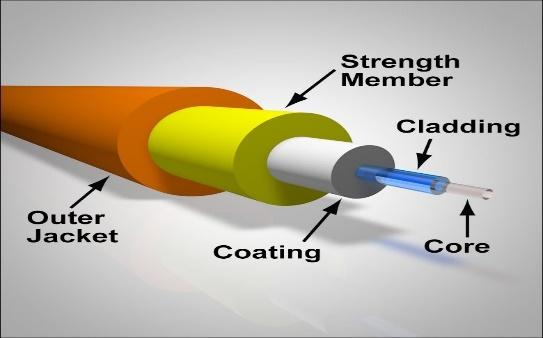
"The figure indicates different scenarios during a frame transmission (Normal delivery, Frame 1 Lost, Frame 1 Resent, ACK 1 Lost, Frame 0 Resent).
Mention the different requirements on sender and receiver side to implement all the given scenarios correctly: [1 Mark each for 5 requirements]"
- Frame Sequence Number (Sender Requirement): Frames must be numbered with alternating 1-bit sequence numbers (0 and 1). This enables the receiver to recognize and discard duplicate frames when an ACK is lost in transit. 1 Mark
- Acknowledgment Number (Receiver Requirement): ACKs must carry the sequence number of the next expected frame (or the frame being acknowledged) so the sender knows precisely which frame was received successfully. 1 Mark
- Retransmission Timer (Sender Requirement): The sender must start a countdown timer upon transmitting a frame. If no ACK arrives before the timer expires (due to lost frame or lost ACK), the sender automatically retransmits the frame. 1 Mark
- Sender Buffer (Sender Requirement): The sender must retain a copy of the transmitted frame in its memory buffer until the corresponding ACK arrives, ensuring the frame can be retransmitted if needed. 1 Mark
- Receiver Duplicate Detection & Discard Logic (Receiver Requirement): When the receiver receives a frame with an unexpected sequence number (e.g. Frame 0 when expecting Frame 1), it must discard the duplicate data to prevent corrupted file output, but re-send the ACK so the sender can advance. 1 Mark
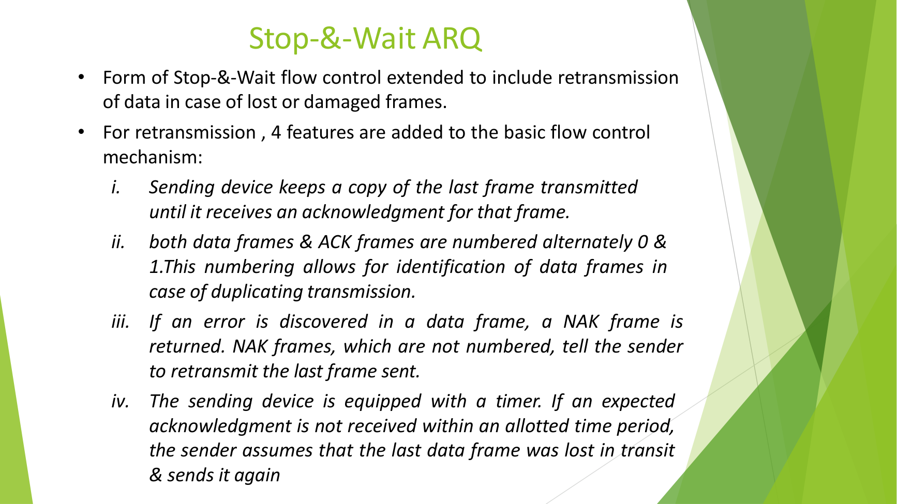
"Assume that, in a Stop-and-Wait ARQ system, the bandwidth of the line is 1 Mbps, and 1 bit takes 20 ms to make a round trip. What is the bandwidth-delay product? If the system data frames are 2000 bits in length, what is the utilization percentage of the link? [2 Marks]
What is the utilization percentage of the link in the example given above if we have a protocol that can send up to 15 frames before stopping and worrying about the acknowledgments? [2 Marks]"
Part 1: Bandwidth-Delay Product & Stop-and-Wait Utilization [2 Marks]
Part 2: Sliding Window Protocol Utilization (N = 15 Frames) [2 Marks]
(If formula η = N × 9.09% is calculated without capping: 15 × 9.09% = 136.3%, which signifies the channel is 100% saturated with 0 idle link time.)
"Why does an Ethernet network using the CSMA/CD protocol enforce a specific minimum frame size to ensure reliable collision detection? [2 Marks]
Suppose a station transmits frames smaller than this minimum limit. Analyze the consequences for collision detection and overall network performance. [2 Marks]
AND: Compute Pure ALOHA and Slotted ALOHA throughput for G = 1.5. [2 Marks]"
1. Why Minimum Frame Size is Enforced [2 Marks]:
In CSMA/CD, collision detection operates on a "Listen While Talk" principle. A station can detect a collision only while it is actively transmitting bits onto the cable. If a collision occurs at the farthest end of the cable (worst-case distance d), the collision noise takes one propagation delay (T_p) to occur and another T_p to travel back to the sender. Therefore, the round-trip propagation time is 2 × T_p (the contention slot). The frame transmission time (T_t = L/R) must be at least 2 × T_p:
2. Consequences of Transmitting Smaller Frames [2 Marks]:
- Undetected Collisions (Late Collision): The transmitting station completes sending its short frame and releases the channel before the collision signal arrives back. The sender assumes the frame was delivered successfully and will not trigger CSMA/CD retransmission.
- Silent Data Loss: The receiving station receives a corrupted frame runt, fails the FCS/CRC check, and silently discards it.
- Severe Performance Degradation: Error recovery is pushed all the way to upper transport layers (TCP timeout), causing drastic throughput collapse and latency spikes.
3. ALOHA Numerical (G = 1.5) [2 Marks]:
🎯 Part B: Exam-Style Analytical Questions for ALL Subtopics Across Modules 1, 2 & 3
Every subtopic from your syllabus framed in the exact realistic engineering scenario pattern of the CRCE/Mumbai University exam.
Module 1: Scenario-Based Examination Questions
"A modern hospital ICU is deploying three data channels: (1) Patient heart rate sensor streaming continuous ECG data to a central nursing station monitor, (2) Walkie-talkie communication between nurses and physicians, and (3) A video-conferencing consultation link between an on-duty doctor and a remote specialist. For each system, classify the transmission mode (Simplex, Half-Duplex, Full-Duplex), explain the direction of flow, and justify why that specific mode is required."
• ECG Sensor to Monitor: Simplex. Flow is strictly unidirectional from sensor to display. The sensor only transmits; the monitor only displays. Justification: Low-cost sensor hardware requires no receiving circuitry, and reverse communication is physically unnecessary.
• Nurse-Doctor Walkie-Talkie: Half-Duplex. Bidirectional, but only one party speaks at a time using a push-to-talk button over a single radio frequency. Justification: Prevents conflicting simultaneous shouting during emergencies and conserves RF spectrum.
• Video Consultation Link: Full-Duplex. Simultaneous concurrent bidirectional communication over separate transmit/receive channels. Justification: Real-time clinical diagnosis requires interactive discussion with zero turnaround delay.
"A college computer center has 120 computers connected through five cascading 24-port passive/active hubs. The network suffers from severe packet collisions and broadcast storms. I. Contrast how replacing the hubs with Layer 2 Switches vs. Layer 3 Routers affects Collision Domains and Broadcast Domains. [3 Marks] II. If the college chooses switches, evaluate Cut-Through vs. Store-and-Forward switching for this environment. [2 Marks]"
• Hubs: All 120 PCs share 1 single Collision Domain and 1 single Broadcast Domain. Any collision or broadcast affects all 120 PCs.
• Replacing with Layer 2 Switches: Each switch port creates an isolated collision domain. Collision domains increase to 120 (zero collisions in full-duplex mode!). However, all 120 PCs still remain in 1 single Broadcast Domain.
• Replacing with Layer 3 Routers: Routers isolate both collision domains AND broadcast domains. Subnetting the 120 PCs into multiple VLANs/subnets connected via a router completely eliminates broadcast storms.
• Switching Mode Choice: Store-and-Forward is recommended. Because students may write buggy socket code or faulty cards may generate runts/errors, Store-and-Forward verifies the 4-byte FCS/CRC checksum before forwarding, discarding corrupted frames. Cut-through would blindly forward corrupted frames across ports.
"I. A telecom trunk line combines five 4 kHz voice channels using FDM with 500 Hz guard bands. Calculate the minimum total bandwidth required. [2 Marks]
II. Two stations A and B use CDMA with 4-chip Walsh sequences: C_A = [+1, -1, +1, -1] and C_B = [+1, +1, -1, -1]. Prove that the sequences are orthogonal. If station A transmits bit 1 (+1) and station B transmits bit 0 (-1), calculate the combined signal and show how station A's data is recovered at the receiver. [3 Marks]"
Module 2: Analytical & Scenario-Based Questions
"A Data Link Layer uses the bit-stuffing framing protocol with flag 01111110.
I. Apply bit stuffing to the following payload data: 01111111111011111001. [2 Marks]
II. Suppose the receiver experiences a 1-bit error that flips a stuffed '0' bit into a '1'. Analyze the consequence for frame synchronization. [2 Marks]"
• Part I: Rule: Insert a '0' after every five consecutive '1's regardless of the next bit.
Data:
0 11111 [0] 11111 [0] 1 0 11111 [0] 0 0 1Stuffed Stream:
011111011111010111110001 (Three '0's inserted).• Part II: If a stuffed '0' flips to '1', the receiver will see six consecutive '1's (
01111110). It will mistakenly interpret this as an early End-of-Frame flag, terminating the current frame prematurely and throwing off synchronization for the remainder of the stream.
"A dataword 10100100 is to be transmitted using CRC generator polynomial G(x) = x⁴ + x + 1.
I. Determine the transmitted codeword using modulo-2 division. [3 Marks]
II. State the maximum burst error length this generator polynomial is guaranteed to detect. Justify mathematically. [2 Marks]"
• Generator polynomial: G(x) = x^4 + x^1 + x^0 ⟹ 10011 (degree r = 4).
• Append r = 4 zeros to data: Dividend =
10100100 0000.• Modulo-2 division of
101001000000 by 10011 yields remainder 1010.• Transmitted Codeword =
101001001010.• Burst Error Detection Guarantee: Any CRC generator of degree r is mathematically guaranteed to detect 100% of burst errors of length ≤ r (here, length ≤ 4 bits). For bursts of length r+1 = 5, the detection probability is 1 - (1/2)^{r-1} = 1 - 1/8 = 87.5\%.
"A system transmits a 4-bit data word 1011 using Hamming code with even parity.
I. Determine the number of parity bits required and construct the 7-bit codeword. [3 Marks]
II. If the received codeword is 1011010, calculate the syndrome bits and locate the corrupted bit position. [2 Marks]"
Syndrome Evaluation for Received: 1 0 1 1 0 1 0
"In sliding window protocols with k-bit sequence numbers, explain mathematically and conceptually why the sender window size is bounded by W_s ≤ 2ᵏ - 1 in Go-Back-N, but W_s ≤ 2^(k-1) in Selective Repeat. What catastrophic failure occurs if W_s = 2ᵏ in Go-Back-N? [4 Marks]"
• The Failure Scenario in GBN if W_s = 2^k:
Suppose k=2 (Sequence numbers: 0, 1, 2, 3). If W_s = 4 = 2^2, the sender transmits frames 0, 1, 2, 3. The receiver accepts all 4 frames and advances its expectation window to the next Frame 0.
Now suppose all four ACKs are lost in transit. The sender's retransmission timer expires, and it retransmits the original frames 0, 1, 2, 3.
The receiver, expecting the next Frame 0, receives Frame 0 and cannot distinguish whether this is a brand-new Frame 0 or a duplicate of the old Frame 0! It mistakenly accepts the duplicate data, causing catastrophic data corruption.
• The Fix: Limiting W_s ≤ 2^k - 1 ensures that the set of transmitted frames and the receiver's expectation window never overlap simultaneously. In Selective Repeat, both sender and receiver windows advance, so W_s + W_r ≤ 2^k ⟹ W_s ≤ 2^{k-1}.
Module 3: IPv4 Addressing, Header & MTU Fragmentation Questions
"An IT firm is assigned the network block 200.100.50.0/24. The firm needs to create four separate subnets to support: Sales (50 hosts), Development (50 hosts), Support (25 hosts), and Admin (20 hosts).
I. Determine the number of subnet bits to borrow and state the new subnet mask. [2 Marks]
II. For the Sales subnet and Support subnet, specify: Subnet Network Address, Usable Host IP Range, and Directed Broadcast Address. [3 Marks]"
Subnet Allocation Table:
| Subnet | Network ID | Valid Usable Host Range | Directed Broadcast |
|---|---|---|---|
| Subnet 0 (Sales) | 200.100.50.0 | 200.100.50.1 – 200.100.50.62 | 200.100.50.63 |
| Subnet 1 (Dev) | 200.100.50.64 | 200.100.50.65 – 200.100.50.126 | 200.100.50.127 |
| Subnet 2 (Support) | 200.100.50.128 | 200.100.50.129 – 200.100.50.190 | 200.100.50.191 |
| Subnet 3 (Admin) | 200.100.50.192 | 200.100.50.193 – 200.100.50.254 | 200.100.50.255 |
"A packet capture yields the following 20-byte IPv4 header in hexadecimal:
45 00 04 00 1F 4A 40 00 38 06 A2 10 0A 01 02 03 C0 A8 01 64
Extract and interpret: (1) IP Version, (2) Header Length in bytes, (3) Total Length & Payload size, (4) DF and MF flags, (5) Fragment Offset, (6) TTL and Protocol, and (7) Source & Destination IP addresses."
"An IPv4 datagram with a 20-byte header and 3480 bytes of data (Total Length = 3500 bytes) arrives at a router. The outgoing link has an MTU of 1000 bytes.
I. Explain why the data payload of each fragment must strictly adhere to the 8-byte rule. [2 Marks]
II. Calculate the exact parameters for each fragment: Total Length, Header Length, Data Length, DF flag, MF flag, and Fragment Offset. [3 Marks]
III. Where does reassembly occur? Why do intermediate routers NOT reassemble fragments? [1 Mark]"
I. The 8-Byte Rule [2 Marks]:
The Fragment Offset field in the IPv4 header is only 13 bits wide. To address up to 65,535 bytes using a 13-bit number (max 8191), the offset value is represented in units of 8 bytes. Therefore, the payload data length of all intermediate fragments MUST be an exact multiple of 8 bytes!
II. Fragment Calculations [3 Marks]:
| Fragment | Byte Range in Original | Data Length | Header | Total Length | DF | MF | Fragment Offset |
|---|---|---|---|---|---|---|---|
| Fragment 1 | 0 – 975 | 976 B | 20 B | 996 B | 0 | 1 | 0 ÷ 8 = 0 |
| Fragment 2 | 976 – 1951 | 976 B | 20 B | 996 B | 0 | 1 | 976 ÷ 8 = 122 |
| Fragment 3 | 1952 – 2927 | 976 B | 20 B | 996 B | 0 | 1 | 1952 ÷ 8 = 244 |
| Fragment 4 | 2928 – 3479 | 552 B | 20 B | 572 B | 0 | 0 | 2928 ÷ 8 = 366 |
III. Reassembly Location & Justification [1 Mark]:
Reassembly occurs strictly at the final destination host. Intermediate routers do NOT reassemble fragments because: (1) Different fragments of the same original datagram may follow completely different geographic routes, and (2) Intermediate routers cannot afford to waste buffer memory waiting for delayed or lost fragments without causing massive router buffer bloat and packet drops.
Fr. CRCE (Bandra, Mumbai) — Mid Semester Examination (AY 2025–26)
Official Synaptic Answer Template & Complete Model Solutions with Module & Subtopic Mapping
Comprehensive Question-to-Module & Subtopic Mapping
This table maps every question from the official question paper directly to its corresponding module, PPT, subtopic, and concept in the syllabus:
| Q. No. | Marks | Module | PPT / Chapter | Exact Subtopic Mapped | Quick Link to Study Notes |
|---|---|---|---|---|---|
| Q.1 (a) | 5 Marks | Module 1 | PPT 4 | OSI 7-Layer vs. TCP/IP 5-Layer Models; Presentation & Session Layer Functions & Modern Implementation | Jump to Mod 1 PPT 4 → |
| Q.1 (b) | 6 Marks | Module 1 | PPT 2 | Network Topologies (Star, Bus, Ring); Specific Advantages, Single Points of Failure & Office LAN Recommendation | Jump to Mod 1 PPT 2 → |
| Q.2 (a) | 4 Marks | Module 1 | PPT 5 | Guided Media: Optical Fiber Propagation Modes (Step-Index, Graded-Index, Single-Mode) & Ray Reflection for 2 km Campus Backbone | Jump to Mod 1 PPT 5 → |
| Q.2 (b) | 5 Marks | Module 2 | PPT 3 | Flow & Error Control: Stop-and-Wait ARQ Scenarios (Lost Frame, Lost ACK, Duplicate) & 5 Fundamental Requirements | Jump to Mod 2 PPT 3 → |
| Q.3 (a) | 4 Marks | Module 2 | PPT 3 & Numericals | Numerical: Bandwidth-Delay Product (BDP), Stop-and-Wait Link Efficiency (η = 9.09%), and Sliding Window Scaling to 15 Frames (η = 100%) | Jump to Mod 2 Numericals → |
| Q.3 (b) OR | 4 Marks | Module 2 | PPT 4 | MAC Sublayer: CSMA/CD Minimum Frame Size Rule (L_min ≥ 2*R*T_p), Late Collision Consequences, and ALOHA Throughput (Pure & Slotted for G = 1.5) | Jump to Mod 2 PPT 4 → |
Word-for-Word Solutions with Synaptic Marking Criteria
"The OSI model has seven layers, whereas the TCP/IP model has only five layers.
I. Which are these two extra layers in OSI model? Explain why these two layers are not explicitly present in the TCP/IP model. [2 Marks]
II. Discuss the significance of their functions and how they are handled in modern networking. [2 Marks] + Justification [1 Mark]"
- The Two Extra Layers [1 Mark]: The two extra layers present in OSI but omitted from the 5-layer TCP/IP model are the Presentation Layer (Layer 6) and the Session Layer (Layer 5).
- Why Omitted from TCP/IP [1 Mark]: TCP/IP was designed from a pragmatic, real-world implementation perspective (ARPANET) rather than a theoretical committee architecture. Network designers found that application developers preferred implementing session management and data representation directly within the user software (Application layer) rather than through standardized operating system kernel calls.
- Significance & Modern Handling of Presentation Layer [1 Mark]:
• Functions: Data Translation (character encoding e.g., ASCII/EBCDIC to UTF-8), Data Compression, and Cryptographic Encryption/Decryption.
• Modern Handling: Handled at the Application layer by standard libraries and protocols: TLS/HTTPS provides end-to-end encryption; JSON, XML, Protocol Buffers, and MIME handle data formatting and serialization; gzip/Brotli handles compression. - Significance & Modern Handling of Session Layer [1 Mark]:
• Functions: Dialog control (managing who talks when in half-duplex/full-duplex modes), session checkpointing, and synchronization tokens for crash recovery.
• Modern Handling: Implemented directly by modern application protocols: HTTP Cookies, JWT (JSON Web Tokens), WebSockets, and database connection pools maintain persistent user sessions across stateless transport connections. - Integration Synthesis [1 Mark]: Integrating these functions directly into the Application layer makes the TCP/IP model significantly simpler, higher-performing, and universally adoptable across heterogeneous hardware.
"A small organization needs a network to support 15 desktop computers for staff, 3 network printers, and provide secure Wi-Fi for volunteers and guests. They also need reliable, high-speed access to a cloud-based donor database. They are considering three physical topologies: Star, Bus, and Ring.
I. For each topology describe one specific advantage it would offer in this office setting. [2 Marks]
II. For each topology (Star, Bus, Ring), describe one specific disadvantage or point of failure that would be a concern. [2 Marks]
III. Based on your analysis, which topology would you recommend and why? Justify your choice. [2 Marks]"
Part I: Specific Advantage for Each Topology [2 Marks]
- Star Topology: Centralized management and robust fault isolation. If one staff PC cable is disconnected or damaged, only that single workstation is affected; the other 14 PCs and 3 network printers continue functioning normally. The central switch provides dedicated bandwidth for fast access to the cloud donor database.
- Bus Topology: Lowest cabling cost and easy linear installation. A single coaxial backbone can be routed linearly along the office desks with short drop lines to computers.
- Ring Topology: Deterministic, collision-free token access. Data circulates unidirectionally via token passing, ensuring every workstation and printer gets guaranteed, equal transmission opportunities without contention.
Part II: Disadvantage or Point of Failure for Each Topology [2 Marks]
- Star Topology: Single point of failure at the central switch. If the central switch or its power supply fails, the entire network shuts down immediately, disconnecting all staff, printers, and cloud database access. Also requires individual home-run cable runs to every desk.
- Bus Topology: Catastrophic backbone vulnerability and troubleshooting difficulty. If the main cable breaks, is cut, or an end terminator (50Ω) becomes loose, signal reflection crashes the entire network. Pinpointing a faulty tap connector on a shared bus is extremely tedious.
- Ring Topology: Chain dependency failure. In a basic ring, all data must pass through every workstation's NIC repeater. If any single workstation is powered off or unplugged, the entire loop breaks, shutting down office connectivity.
Part III: Recommendation & Justification [2 Marks]
Recommendation: Star Topology (using a Managed 24-Port Gigabit Ethernet Switch).
Justification:
- Mission-Critical Database Reliability: The office requires uninterrupted access to a cloud donor database; Star topology ensures individual desktop cable faults never impact other staff.
- Security & Guest Wi-Fi Isolation: A managed switch allows creating separate VLANs (Virtual LANs) to isolate guest/volunteer Wi-Fi traffic from the staff computers and donor database.
- Printer Sharing: High-bandwidth full-duplex switch links allow simultaneous print spooling without starving workstations of internet access. Modern switches have MTBF > 100,000 hours, making the central point of failure negligible.
"A network engineer is designing the backbone for a new university campus. They must choose the correct type of fiber optic cable to connect buildings that are 2 kilometers apart. The link must support high data rates for transferring large research datasets.
I. Evaluate the different modes of propagation of fiber optic cables applicable in this case. [2 Marks]
II. Sketch the path of light rays through the core of the fiber. Show multiple paths with distinct angles of reflection. [2 Marks]"
Part I: Evaluation of Fiber Propagation Modes [2 Marks]
| Mode | Core Diameter | Refractive Index Profile | Evaluation for 2 km Campus Backbone |
|---|---|---|---|
| Multimode Step-Index | 50 to 100 μm | Uniform core density; abrupt step change at core-cladding boundary. | Not Acceptable: Severe modal dispersion. Light rays taking steep zigzag paths travel much further than axial rays, distorting high-speed pulses over 2 km. |
| Multimode Graded-Index | 50 to 62.5 μm | Parabolic gradient; refractive index is highest at center and decreases smoothly toward cladding. | Feasible but Sub-optimal: Rays curve continuously; outer rays travel faster through lower index, arriving almost together. Suitable up to 1–2 km at 1 Gbps, but limited upgrade headroom. |
| Single-Mode Fiber (SMF) | 8 to 10 μm | Narrow core; step-index; laser light source. | Optimal & Recommended: Zero modal dispersion! Core diameter allows only a single axial light mode. Easily supports 10 Gbps / 100 Gbps across 2 km with massive future-proof bandwidth. |
Part II: Light Ray Propagation Path Characteristics [2 Marks]
- Multimode Step-Index: Rays bounce sharply off the core-cladding boundary at multiple distinct reflection angles. Rays with steep angles bounce many times and arrive significantly delayed relative to direct axial rays (pulse broadening).
- Multimode Graded-Index: Light follows smooth sinusoidal/parabolic curves. Continuous refraction bends light back toward the axis before it strikes the cladding.
- Single-Mode Fiber: The core is so narrow (comparable to the wavelength of light, ~1310/1550 nm) that light travels essentially in a single straight line along the central axis without bouncing.
"The figure indicates different scenarios during a frame transmission (Normal delivery, Frame 1 Lost, Frame 1 Resent, ACK 1 Lost, Frame 0 Resent).
Mention the different requirements on sender and receiver side to implement all the given scenarios correctly: [1 Mark each for 5 requirements]"
- Frame Sequence Numbers (Sender Requirement) [1 Mark]: Frames must be stamped with alternating 1-bit sequence numbers (0 and 1). This allows the receiver to detect duplicate frames resulting from a lost or delayed ACK.
- Acknowledgment Numbers (Receiver Requirement) [1 Mark]: The receiver must send an ACK carrying the number of the next expected frame (or the frame being acknowledged), allowing the sender to verify exactly which frame was successfully received.
- Retransmission Timer (Sender Requirement) [1 Mark]: The sender must start a countdown timer upon transmitting each frame. If no valid ACK arrives before the timer expires, the sender assumes the frame or ACK was lost and automatically retransmits the frame.
- Sender Memory Buffer (Sender Requirement) [1 Mark]: The sender must keep an uncorrupted copy of the transmitted frame in memory until the acknowledgment arrives, ensuring data is available for retransmission.
- Receiver Buffers & Duplicate Discard Logic (Receiver Requirement) [1 Mark]: If the receiver receives a frame with an unexpected sequence number (e.g. receives duplicate Frame 0 when expecting Frame 1 due to a lost ACK), it must discard the duplicate data to prevent corrupted file output, but re-send ACK 1 so the sender can advance.
"Assume that, in a Stop-and-Wait ARQ system, the bandwidth of the line is 1 Mbps, and 1 bit takes 20 ms to make a round trip. What is the bandwidth-delay product? If the system data frames are 2000 bits in length, what is the utilization percentage of the link? [2 Marks]
What is the utilization percentage of the link in example given above if we have a protocol that can send up to 15 frames before stopping and worrying about the acknowledgments? [2 Marks]"
Part 1: Bandwidth-Delay Product & Stop-and-Wait Utilization [2 Marks]
Part 2: Sliding Window Protocol Utilization (N = 15 Frames) [2 Marks]
"Why does an Ethernet network using the CSMA/CD protocol enforce a specific minimum frame size to ensure reliable collision detection? [2 Marks]
Suppose a station transmits frames smaller than this minimum limit. Analyze the consequences for collision detection and overall network performance. [2 Marks]
AND: Compute Pure ALOHA and Slotted ALOHA throughput for G = 1.5. [2 Marks]"
1. Why Minimum Frame Size is Enforced [2 Marks]:
CSMA/CD operates on a "Listen While Talk" principle. A station can detect a collision only while it is actively transmitting bits onto the cable. In the worst-case scenario, Station A and Station B are at opposite ends of the cable separated by propagation delay T_p. If B transmits just before A's signal arrives (at time T_p - ε), a collision occurs. The collision signal takes another T_p to travel back to Station A. Therefore, Station A must still be transmitting when the collision noise returns after 2 × T_p (the contention slot).
2. Consequences of Transmitting Smaller Frames [2 Marks]:
- Late Collision (Undetected at Sender): The station transmits all bits of its short frame and turns off its transmitter before the collision noise returns. It falsely assumes the transmission was 100% successful and will not trigger CSMA/CD backoff and retransmission.
- Silent Frame Discard at Destination: The receiver receives a garbled collision runt, fails the CRC-32 checksum, and silently discards the frame.
- Severe Performance Collapse: Recovery is shifted to Transport Layer timeouts (TCP), introducing seconds of retransmission delay and crippling throughput.
3. ALOHA Calculations (G = 1.5) [2 Marks]:
📘 PPT 1: Introduction & Network Classification
Source: Module1_part_1.pdf (Slides 1–24)🧠 1. Concept Explanation from Zero: Standalone vs. Networked
Imagine a computer sitting in an isolated room with no cables, Wi-Fi, or Bluetooth. It can run software and edit files, but it cannot share anything unless you physically walk a USB drive over. That is a standalone computer.
A computer network is formed when two or more computing devices are connected together using a transmission medium (copper cable, optical fiber, or radio waves) so they can exchange data and share hardware/software resources.
- Interconnected: Devices are physically or wirelessly linked and capable of exchanging bits using mutually understood protocols.
- Autonomous: Each computer operates under its own independent CPU and operating system. Neither machine can forcibly start, stop, or control the execution of the other.
- Heterogeneous Networks: Networks are built by different vendors (Apple, Cisco, Intel, Microsoft). International open standards (IEEE, ISO, IETF) are strictly required so that heterogeneous devices can communicate.
🎯 2. Why it Matters (The Problem Solved)
The 9:00 AM Thought Experiment: If the Internet stopped working worldwide, online education, Google, hospital medical databases, and UPI banking would immediately halt. Networks solve the problem of isolated data silos by enabling:
- Resource Sharing: Sharing expensive peripherals (high-capacity storage arrays, laser printers, GPU compute clusters).
- Information Sharing: Instant global access to databases, web services, and enterprise workflows.
- High Reliability via Redundancy: Replicated database servers prevent downtime if one server crashes.
- Cost-Performance Power: A cluster of inexpensive interconnected personal computers (PCs) achieves equivalent or superior compute power compared to a monolithic mainframe at a fraction of the cost.
- Performance: Evaluated by transit time (time to travel) and response time (inquiry to response).
- Reliability: Measured by failure frequency, link recovery speed, and disaster robustness.
- Security: Protecting data against unauthorized intrusion and maintaining integrity.
⚙️ 3. How it Works: Hardware vs. Software
| Component Type | Elements Included | Role in Communication |
|---|---|---|
| Hardware | Hosts (PCs, mobile), NICs, Media (copper, fiber, radio), Switches, Routers | Carries physical voltages, optical pulses, or radio signals across physical space. |
| Software | Protocols (TCP/IP, HTTP, Ethernet), Network Operating System (NOS) | Defines syntax, formatting, addressing, error control, and routing rulebooks. |
Advantages & Disadvantages of Networking:
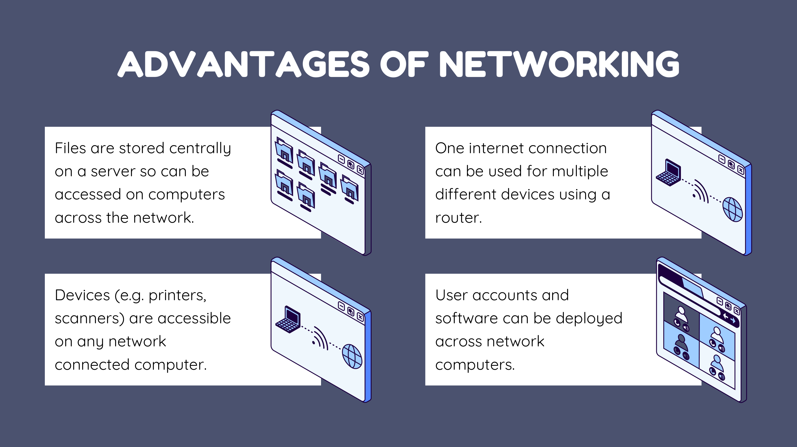
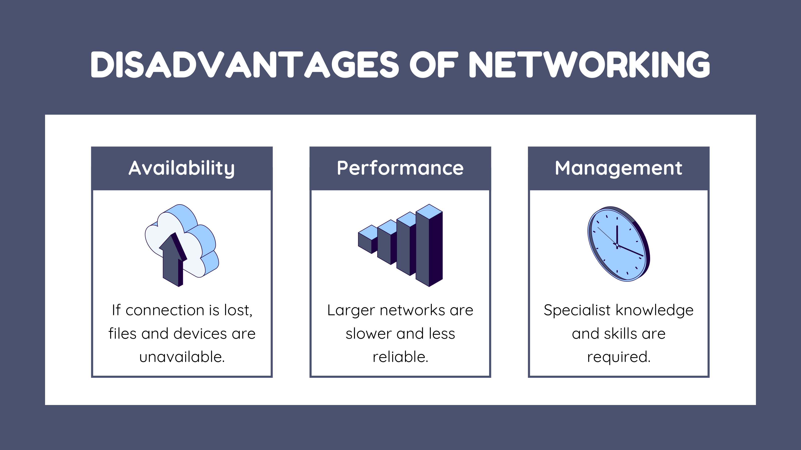
🌐 4. Network Classification by Geographical Scope
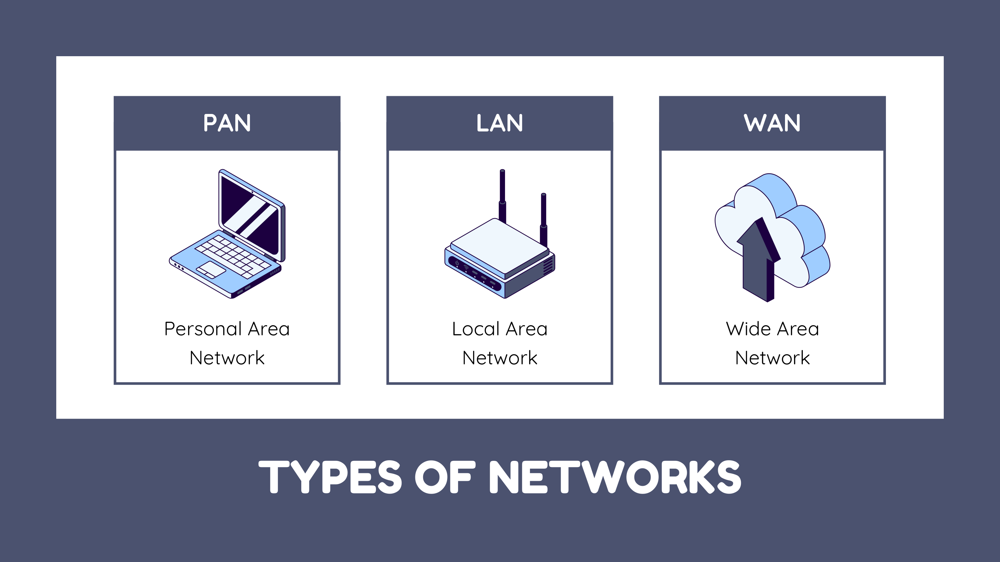
| Type | Geographical Span | Primary Media | Key Traits & Standard Examples |
|---|---|---|---|
| PAN (Personal Area Network) | Within personal workspace (≤ 10 m) | Bluetooth, Zigbee | Low power, plug-and-play. Examples: Smartwatch to phone, wireless headphones, in-car hands-free. |
| LAN (Local Area Network) | Room, building, campus (< 2 km) | UTP Cat6 (Ethernet), Wi-Fi | Privately owned, lowest Bit Error Rate (BER), very high speed (1–10 Gbps). Examples: College lab, office floor. |
| MAN (Metropolitan Area Network) | Entire town or city (5–50 km) | Optical fiber rings, Coaxial | Connects multiple enterprise LANs across an urban area. Examples: City Cable TV broadband, municipal traffic cameras. |
| WAN (Wide Area Network) | Country, continent, globe (> 50 km) | Undersea submarine fiber, Satellite | Operated by telecom conglomerates/ISPs; higher delay and noise. Examples: The Global Internet, national mobile backhaul. |
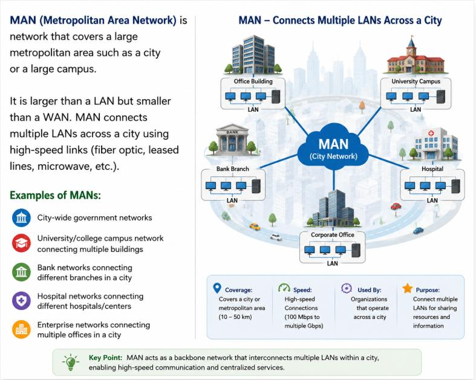
🧠 5. Memory Tricks & ⚠️ Common Confusions
P → L → M → WPersonal (≤ 10m) → Local (< 2km) → Metropolitan (5–50km) → Wide (> 50km).
Criteria Triad:
P - R - S &implies Performance, Reliability, Security ("Please Run Securely").
- Autonomous vs. Master-Slave Mainframe: A dumb terminal connected to a mainframe is NOT a computer network under Tanenbaum's definition because dumb terminals lack autonomous processing.
- LAN vs. WAN Ownership: LANs are strictly privately owned and operated by a single entity; WANs rely on public or leased telecom carrier infrastructure.
🎯 6. Application Questions & Exam Practice
[Scenario] Multi-Building Hospital Connectivity 🔥🔥🔥 MUST DO
Question: A regional hospital has 4 buildings situated 300 meters apart on a single plot of land. What network classification is this, what media should be used, and why?
Answer: LAN (Campus Area LAN).
Reasoning: The distance is under 1 km under unified private ownership. Multi-mode fiber optic cable should form the backbone between buildings (immune to outdoor lightning and electromagnetic noise) with Cat6 copper cabling inside buildings, providing ≥ 1 Gbps speed and low latency for medical imaging.
[2-Mark] Define Computer Network according to Tanenbaum. 🔥🔥🔥 MUST DO
Answer: An interconnected collection of autonomous computers. "Interconnected" means devices can exchange information over a transmission medium; "autonomous" means each machine operates independently with its own processor and OS, without forced master-slave control.
[Solved Quiz] Slide 23–24 Classification Exercise 🔥🔥 SHOULD DO
- Smartwatch, Wireless Headphones, In-car system &implies PAN (Range ≤ 10m, Bluetooth).
- Home network, School network, Office network &implies LAN (Single building/campus, private Ethernet/Wi-Fi).
- Mobile network, National bank network, The Internet &implies WAN (Spans country/globe across telecom backbones).
- Cable TV city distribution &implies MAN (Spans an entire city).
1.3 Transmission Modes: Simplex, Half-Duplex, and Full-Duplex
The direction of signal flow between two interconnected communication devices defines the Transmission Mode:
| Mode | Direction of Flow | Channel Capacity Usage | Real-World Example | Exam Summary |
|---|---|---|---|---|
| Simplex | Unidirectional (One-way only). One station only sends; the other only receives. | 100% dedicated to transmission in one direction. | Keyboard to CPU, Monitor/Display, Traditional Television Broadcast. | Strictly one-way. Receiver cannot acknowledge or reply. |
| Half-Duplex | Bidirectional, but only one station at a time. Both can transmit, but not simultaneously. | Entire channel capacity shared in time between transmitting and receiving. | Walkie-Talkie ("Over and Out"), Push-to-talk radios. | Two-way alternate. Collision occurs if both transmit at once. |
| Full-Duplex | Simultaneous bidirectional (Both ways at the same exact time). | Channel capacity divided between two directions (two separate physical links or frequency sharing). | Telephone call, Modern Ethernet (Full-duplex switch links). | True two-way concurrent communication without waiting. |
1.4 Line Configurations: Point-to-Point vs. Multipoint
How links attach to devices defines the line configuration:
Point-to-Point Configuration
- Definition: Provides a dedicated transmission link between strictly two devices.
- Capacity: 100% of the link capacity is reserved exclusively for transmission between those two endpoints.
- Examples: Microwave link between two towers, direct cable between PC and router, dial-up modem to ISP.
- Advantage: Guaranteed throughput, maximum security, zero contention.
Multipoint (Multidrop) Configuration
- Definition: A single physical link is shared concurrently or sequentially by three or more devices.
- Capacity: Channel capacity is shared either spatially (several devices use the link at the same time) or temporally (users take turns in time slots).
- Examples: Traditional coaxial Bus topology (10Base2), Shared Wi-Fi radio medium.
- Advantage: Lower cabling costs and fewer I/O ports; disadvantage: contention and collision potential.
1.5 Network Categories & What is an Internetwork?
Networks are classified by geographical scope and administrative ownership:
- PAN (Personal Area Network): Centered around an individual person within ~10 meters (e.g., Bluetooth connecting headphones and smartwatch to phone).
- LAN (Local Area Network): Privately owned network within a single office, building, or college campus (typically high data rate > 1 Gbps, low error rate).
- MAN (Metropolitan Area Network): Spans an entire town or city (e.g., municipal Wi-Fi, cable television network).
- WAN (Wide Area Network): Spans large geographic distances across states, countries, or continents (e.g., cellular backhaul, submarine cables).
- Internetwork (An Internet): An interconnection of two or more independent, heterogeneous physical networks connected through routers and gateways. When written with a capital "I", The Internet refers to the global, publicly accessible internetwork running the TCP/IP protocol suite.
This exact subtopic was asked in the official Mid-Semester 2025–26 Exam Paper on "Network Topologies (Star, Bus, Ring) in an Office Setting".
📘 PPT 2: Network Topologies & Case Study Design
Source: Module1_part_2_UPDATED.pdf (Slides 1–32)🧠 1. Concept: Physical vs. Logical Topology
A network topology describes the geometric arrangement of nodes (computers, switches) and connecting communication links in a network.
- Physical Topology: How cables and hardware are physically routed and installed across walls and ceilings.
- Logical Topology: How data signals actually travel between nodes, regardless of physical cable routing.
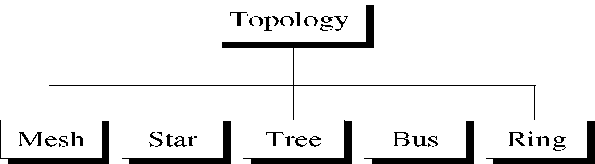
🎯 2. Why it Matters: 6 Selection Criteria (Slide 5)
- Desired Performance: Throughput speed and elimination of packet collision bottlenecks.
- Desired Reliability & Fault Tolerance: Ability to keep functioning when a cable is severed or a computer fails.
- Size (Node Count): Suitability for 10 workstations versus 10,000 corporate devices.
- Expandability / Scalability: Ease of adding new workstations without rewiring existing setups.
- Installation & Cable Cost: Budget for copper/fiber cabling, conduit piping, and labor.
- Cable Length: Physical distance between nodes and cable attenuation limits.
⚙️ 3. Detailed Architecture of the 6 Topologies
A. Bus Topology
All devices connect in a linear sequence to a single continuous central coaxial/copper cable called the backbone via drop lines and T-connectors.
- 50-Ohm Terminators: Must cap both physical ends of the backbone. Why? To absorb electrical signal energy and **prevent signal reflections (echoes)** that corrupt ongoing transmissions.
- Access Protocol: Operates half-duplex using CSMA/CD (Carrier Sense Multiple Access with Collision Detection).
- Pros: Lowest cable requirement; inexpensive installation.
- Cons: Single Point of Failure (backbone cable break or loose terminator collapses the entire network); difficult fault isolation; collisions increase as nodes are added.
- Industry Use: CAN Bus (Controller Area Network) inside modern automobiles connecting ECUs for brakes, engine, and dashboard; factory sensor networks.
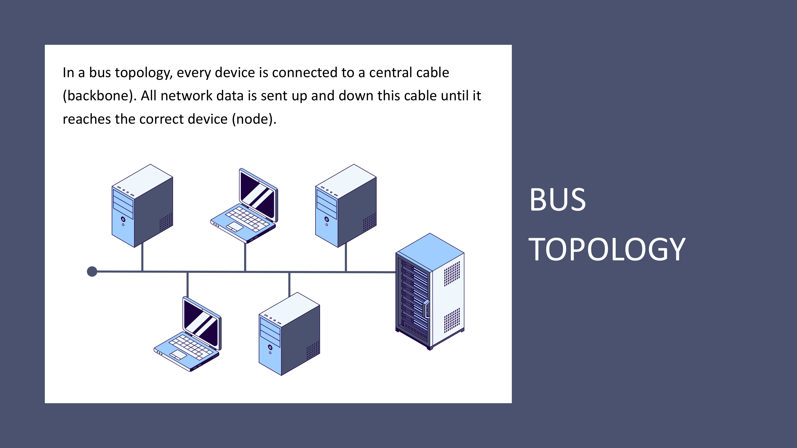
B. Star Topology
Every node has an independent, dedicated point-to-point cable connection to a central networking switch (or hub). All communication passes through the center.
- Pros:
- Fault Isolation: If one cable or PC fails, only that single PC disconnects; the other 39 or 100 computers operate normally.
- High Scalability: Connect new PCs by plugging patch cables into unused switch ports.
- Dedicated Performance: Switch provides dedicated full-duplex bandwidth per port (e.g., 1 Gbps), eliminating collisions.
- Simple Troubleshooting: Switch port LEDs instantly indicate link status.
- Cons: Central switch is a single point of failure; higher cabling length than Bus topology.
- Industry Use: Universal standard for modern office LANs, college labs, and home Wi-Fi networks.
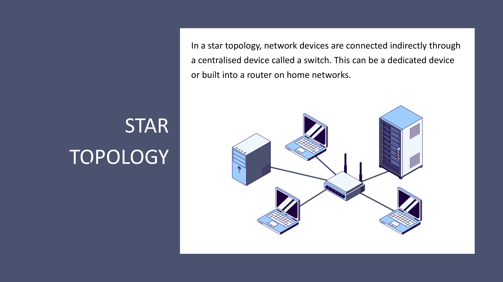
C. Ring Topology
Nodes are connected in a closed circular loop. Each node connects directly to its two immediate neighbors.
- Token Passing Protocol: A special frame called a Token circulates continuously. A node transmits only when it captures the free token. This guarantees zero packet collisions and deterministic latency.
- Cons: Unidirectional loop break halts the entire network. High latency passing through intermediate nodes.
- Dual Ring Solution: Counter-rotating primary and secondary rings (FDDI / SONET) automatically loop back at break points to heal the network within 50 ms.
- Industry Use: Telecom fiber optic rings (BSNL, Airtel, Jio telephone exchange backbones).
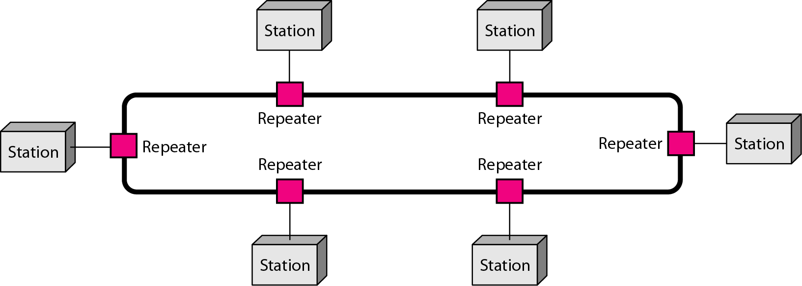
D. Mesh Topology
In a Full Mesh, every computer has a dedicated, point-to-point physical communication link directly to every other computer.
Total Physical Duplex Links:
L = n(n - 1) / 2I/O Ports Required per Node:
P = n - 1Total Ports in Network:
P_total = n(n - 1)
- Pros: Maximum fault tolerance; zero traffic contention (dedicated bandwidth); high security/privacy; zero single points of failure.
- Cons: Quadratic cabling explosion (
O(n2)); massive number of I/O ports per machine; exorbitant installation cost. - Industry Use: The Internet Core Backbone / Tier-1 ISPs; military defense systems.
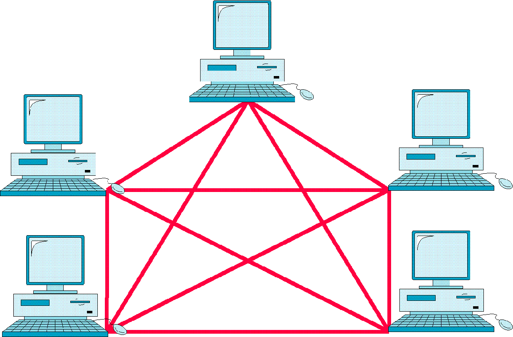
E. Tree & Hybrid Topologies
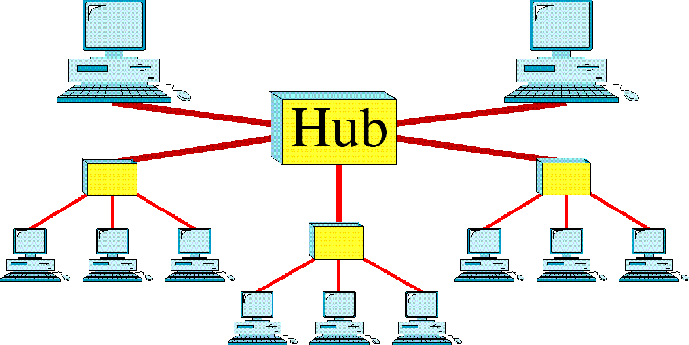
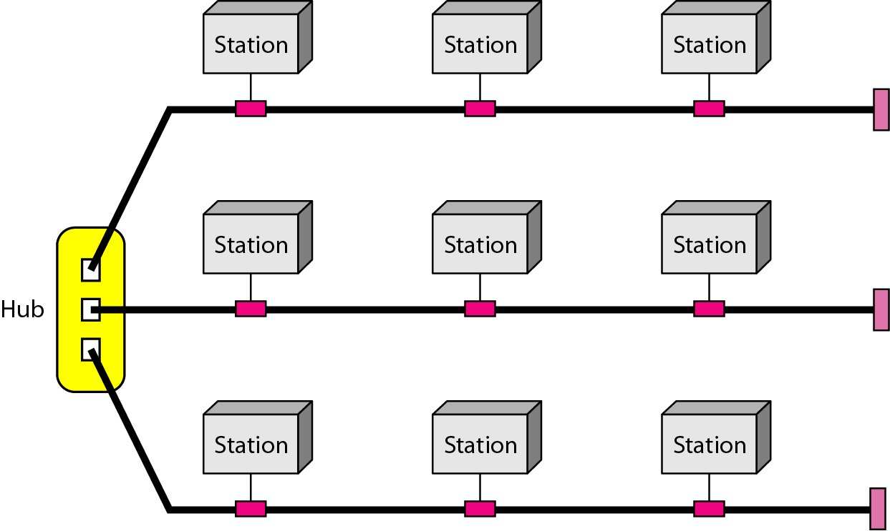
🏫 4. Official Faculty Case Study: 40-PC School Laboratory Design
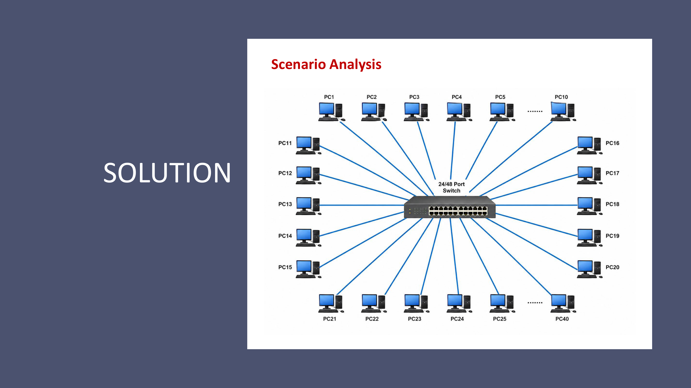
Scenario: A school needs to network 40 computers in a lab. Requirements: easy maintenance, fault tolerance, scalability, high performance, and simple troubleshooting.
Recommended Topology: STAR TOPOLOGY
Recommended Central Device: INTELLIGENT NETWORK SWITCH
4 Core Justifications:
- Fault Tolerance / Isolation: If PC #12's cable is damaged, only PC #12 disconnects; the remaining 39 continue uninterrupted.
- Effortless Scalability: Expanding to 50 PCs requires simply plugging 10 new patch cables into unused switch ports without modifying existing wiring.
- Dedicated Bandwidth: An intelligent switch provides dedicated full-duplex 1 Gbps speed per port, eliminating collisions during exams.
- Simple Troubleshooting: Switch port LEDs instantly identify cable disconnects.
Why a Switch and NOT a Hub?
| Feature | Network Hub (Layer 1) | Network Switch (Layer 2) |
|---|---|---|
| Forwarding | Blindly broadcasts frames to all ports | Selectively unicasts frames only to destination port |
| Addressing | None | Reads and learns MAC Addresses |
| Collision Domain | 1 shared domain across all ports | Dedicated collision domain per port |
| Bandwidth | Shared (e.g., 100 Mbps ÷ 40 nodes) | Dedicated full bandwidth per port (1 Gbps) |
📊 5. Master Comparison Table (Slide 30)
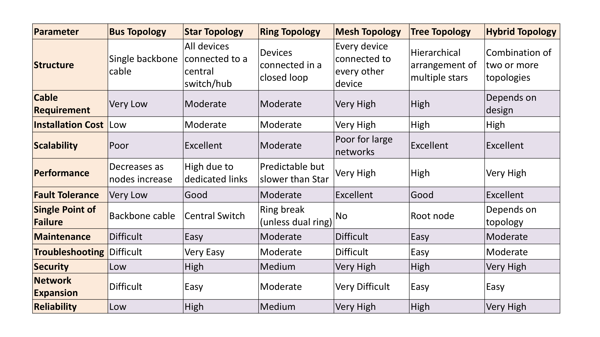
📝 6. Exam Practice & Numericals
[Numerical] Calculate Links for 10 Computers in Mesh vs Star 🔥🔥🔥 MUST DO
Full Mesh: L = n(n - 1) / 2 = (10 × 9) / 2 = 45 links. Ports per node: 10 - 1 = 9 ports.
Star Topology: L = n = 10 cables. Ports per node: 1 port (connects to central switch).
Conclusion: Star topology saves 35 cables (over 77% cable reduction).
[2-Mark] What is the function of terminators on a Bus network? 🔥🔥🔥 MUST DO
50-ohm terminating resistors placed at both physical ends of the backbone cable absorb electrical signal energy, preventing signal bounce/reflection that causes packet collisions and corrupts transmissions.
📘 PPT 3: Connecting Devices, Switching & Multiplexing
Source: MODULE1_PART_3.pdf (Slides 1–92)🔌 1. Connecting Devices: Operating Layers & Logic
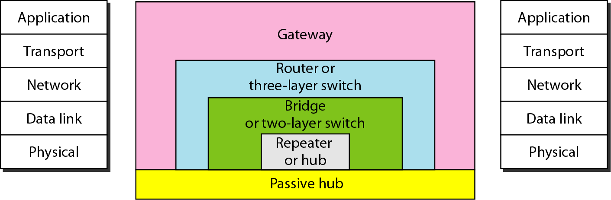
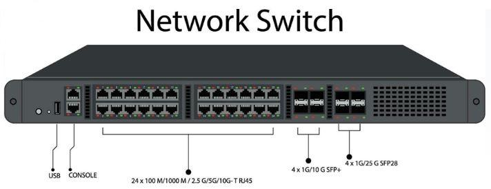
| Device | OSI Layer | Addressing | Collision Domain | Broadcast Domain | Core Function |
|---|---|---|---|---|---|
| Hub (Active) | Layer 1 (Physical) | None | 1 shared across all ports | 1 shared across all ports | Regenerates and blind-broadcasts electrical signals to all ports. |
| Switch | Layer 2 (Data Link) | MAC Address | 1 per port (Micro-segmentation) | 1 shared (all ports) | Unicasts frames via internal CAM table lookup; eliminates collisions. |
| Router | Layer 3 (Network) | IP Address | 1 per interface | Breaks broadcast domains | Routes packets across subnets; executes dynamic routing & NAT. |
| Firewall | Layers 3–7 | IP / Ports / Payload | 1 per port | Depends on config | Filters traffic against security policies (ACLs, stateful inspection). |
| Gateway | Layers 4–7 | Protocol Stacks | 1 per port | Breaks broadcast domains | Translates between incompatible protocol architectures (e.g. IP to SNA). |
| Repeater | Layer 1 (Physical) | None | 1 shared | 1 shared | Regenerates weakened/attenuated signals to extend physical distance. |
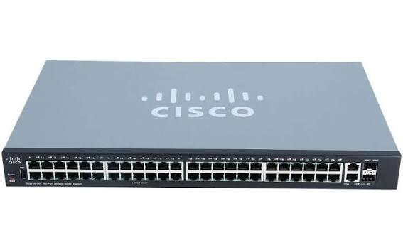
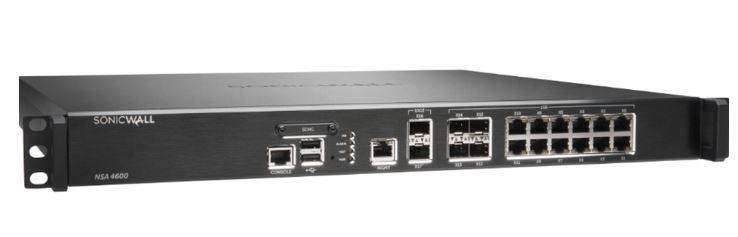
🏦 2. Case Study: State Bank of India (SBI) Smart Branch
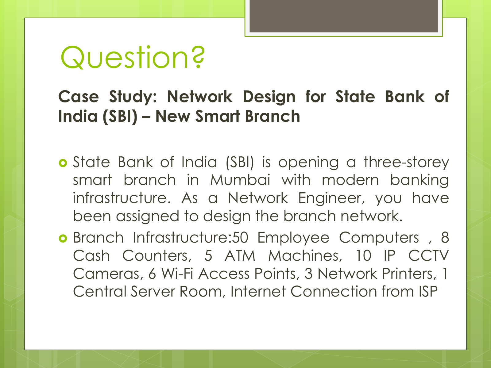
Scenario: SBI opens a 3-storey smart branch requiring secure staff internet, guest Wi-Fi, ATM connectivity to Head Office, and total server defense.
- VLAN 10 (Employees): Staff laptops, loan officer PCs.
- VLAN 20 (Cash Counters): Teller terminals, receipt printers (high priority).
- VLAN 30 (ATMs): Cash kiosks in isolated encrypted tunnel to Head Office.
- VLAN 40 (CCTV): IP surveillance cameras; isolated to prevent network choking.
- VLAN 50 (Guest Wi-Fi): Public internet; blocked from internal banking data.
- VLAN 60 (Branch Servers): Local database, restricted multi-factor access.
What is Inside a Home Wi-Fi Router? (Slides 17–18)
A home wireless router packages 4 separate devices in 1 chassis: (1) Wireless Access Point (AP), (2) 4-Port Ethernet Switch, (3) Router (routes between home private IP and public ISP), and (4) Hardware Firewall + NAT.
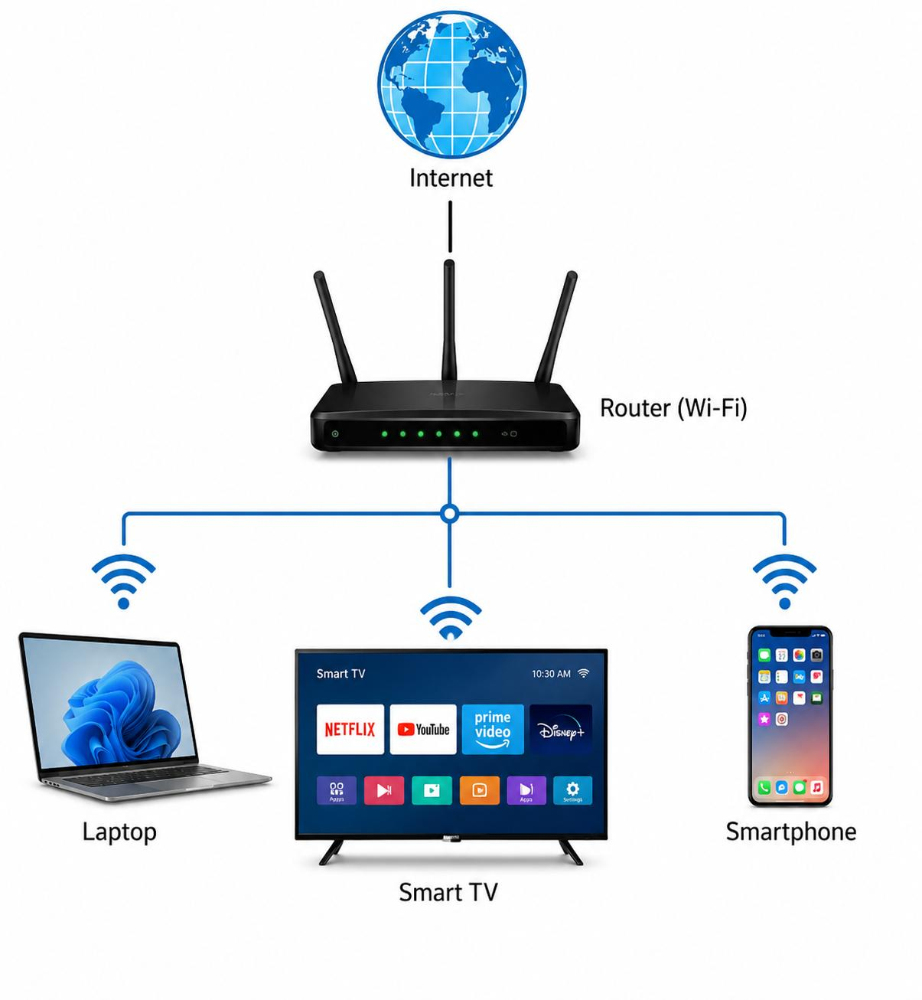
📡 3. Basic Communication System Model (Slides 40–43)
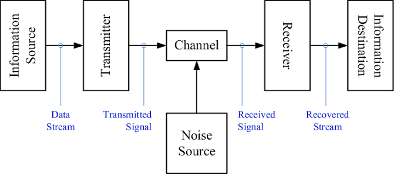
🔄 4. Switching Techniques: Circuit vs. Message vs. Packet
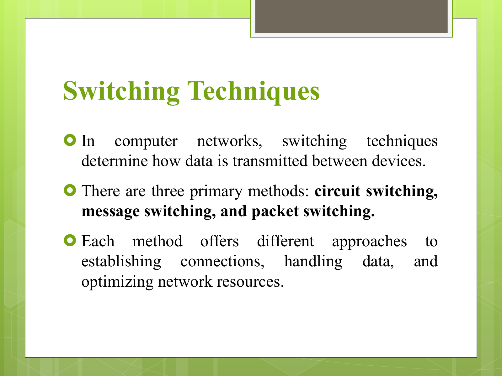
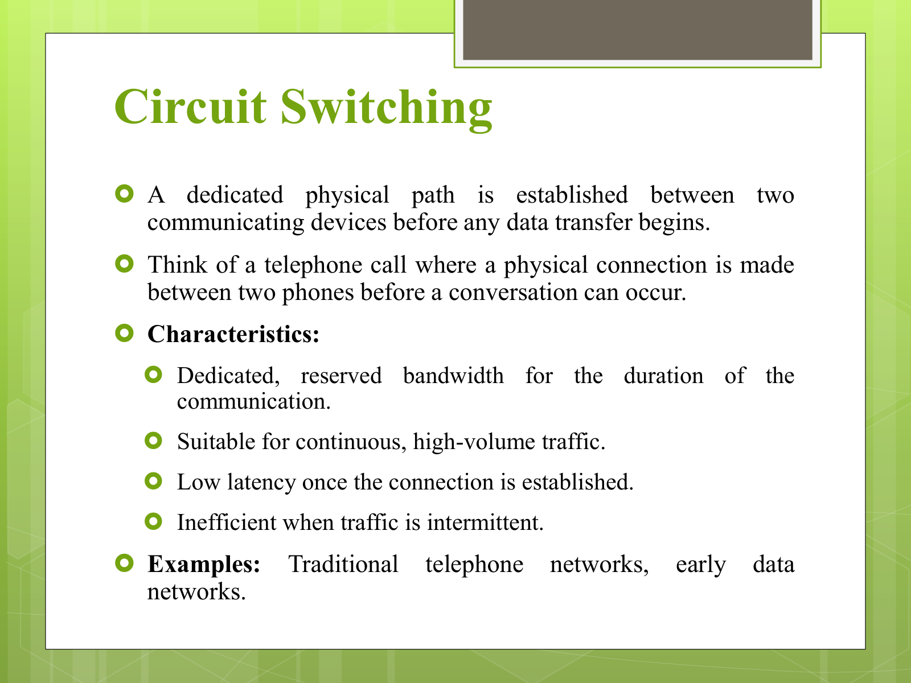
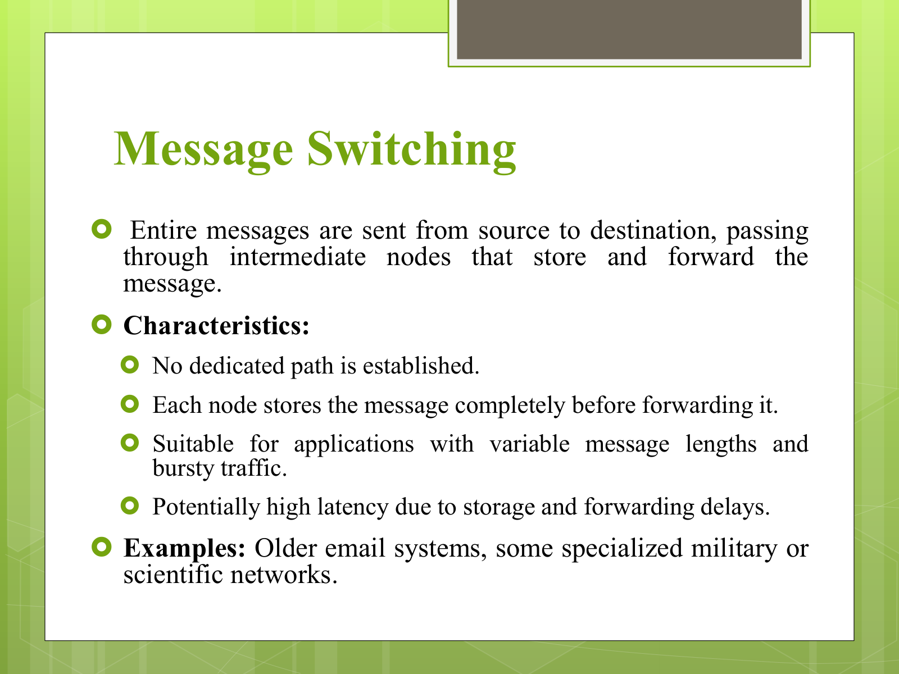
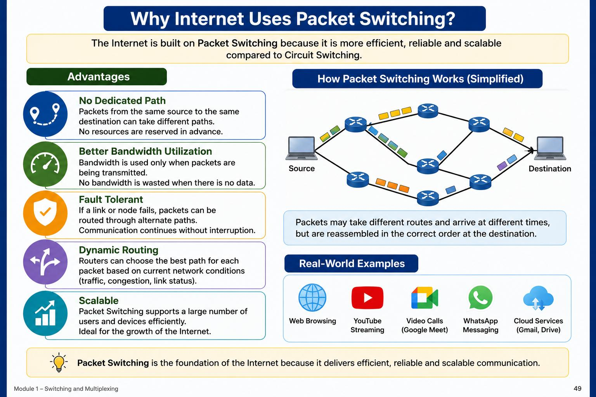
Why the Internet Uses Packet Switching (Slides 50–55):
- Statistical Multiplexing: Bursty computer data shares physical trunks efficiently without locking idle circuits.
- Fault Tolerance & Dynamic Rerouting: If an intermediate router or line fails, packets are automatically rerouted around the failure.
- Zero Call Setup Delay: Packets are transmitted immediately.
| Parameter | Circuit Switching | Message Switching | Packet Switching |
|---|---|---|---|
| Dedicated Path | Yes (Reserved in advance) | No | No (Dynamic routing) |
| Phases | 3 (Setup, Transfer, Teardown) | 1 (Store-and-Forward) | 1 (Segment, Route, Reassemble) |
| Data Unit | Continuous bit stream | Complete message block | Small discrete Packets |
| Buffer Storage | None | Immense (must store full message) | Minimal (RAM per packet) |
| Efficiency | Poor (wasted during silence) | Moderate | Highest (Statistical sharing) |
| Delivery Sequence | Strictly in-order | In-order | May arrive out-of-order |
| Example | Landline Telephone (PSTN) | Historical Telegraph | The Global Internet (IP) |
🔀 5. Multiplexing Techniques: FDM, TDM, CDM
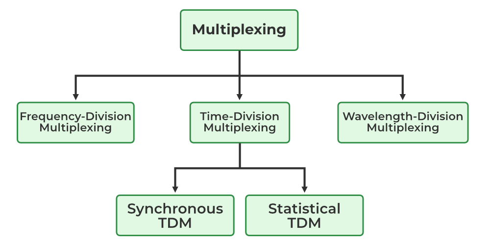
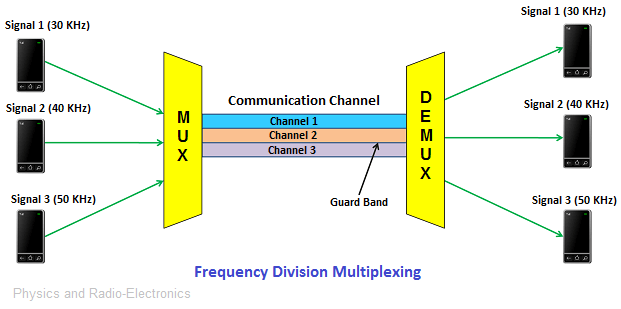
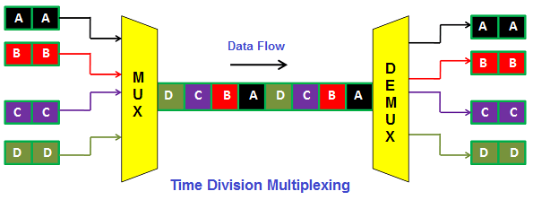
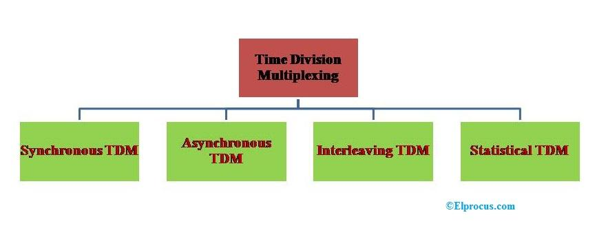
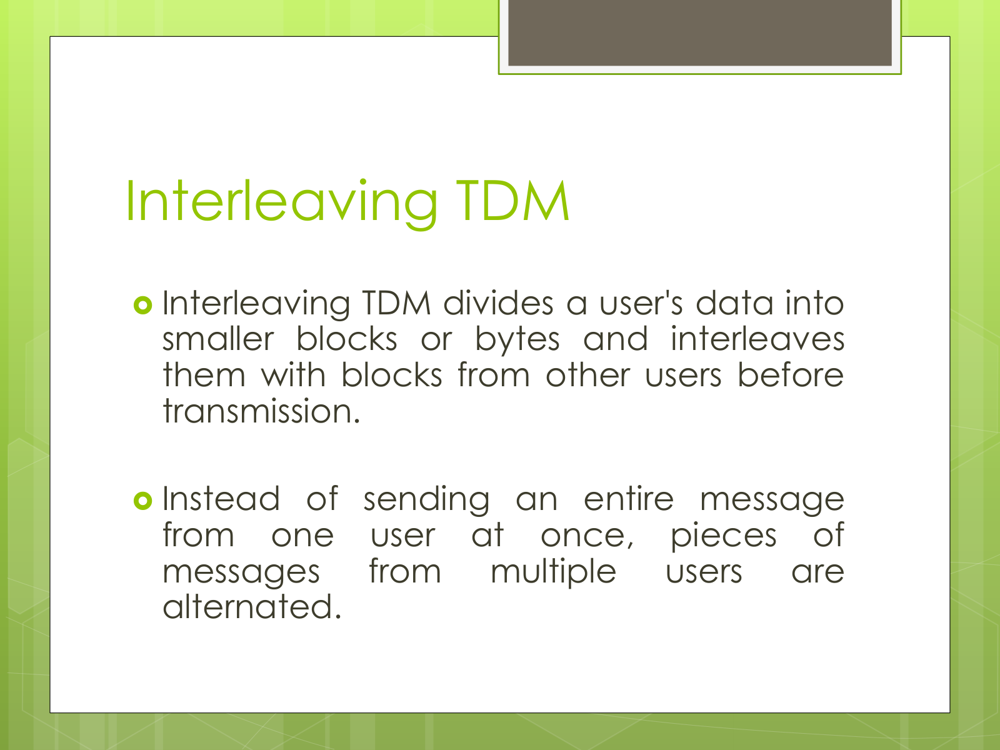
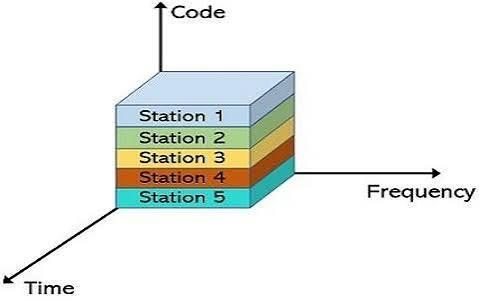
| Parameter | FDM | TDM | CDM |
|---|---|---|---|
| Shared Dimension | Frequency divided into bands | Time divided into slots | Orthogonal Codes |
| Transmission Timing | Simultaneous | Sequential (slots) | Simultaneous |
| Signal Type | Analog | Digital | Digital spread spectrum |
| Interference Guard | Guard Bands prevent crosstalk | Guard Times prevent slot overlap | Orthogonal codes (CA · CB = 0) |
| Primary Application | AM/FM Radio, CATV, ADSL | Digital T1, Enterprise LAN | 3G Cellular, GPS satellites |
🧮 6. Solved Numerical Calculations
Four 1-kbps (1000 bps) channels are multiplexed using Synchronous TDM. Each slot carries 1 bit. One framing bit is added per frame.
Five voice channels of 4 kHz each are multiplexed using FDM with 1 kHz guard bands.
3.1.1 Connecting Devices Deep Dive: Hubs, Switches & Brouters
| Device | OSI Layer | Key Mechanism | Collision Domain | Broadcast Domain |
|---|---|---|---|---|
| Passive Hub | Layer 1 | Simple physical signal splitter. Does NOT require electrical power. Does NOT regenerate signals. | Single shared domain | Single shared domain |
| Active Hub | Layer 1 | Multiport repeater. Requires electrical power. Cleans, amplifies, and regenerates bits before forwarding to all other ports. | Single shared domain | Single shared domain |
| Switch (Layer 2) | Layer 2 | Multiport bridge. Inspects destination MAC address. Maintains MAC Address Table (CAM table). | Isolates each port into its own collision domain | Single shared domain |
| Router | Layer 3 | Inspects destination logical IP address. Consults routing table to forward packets across different subnets. | Isolates each port | Isolates broadcast domains (stops broadcasts) |
| Brouter | Layer 2 & 3 | Bridge + Router hybrid. For routable protocols (e.g., IPv4), it operates as a router at Layer 3; for non-routable protocols (e.g., NetBEUI), it forwards as a transparent bridge at Layer 2. | Isolates each port | Depends on protocol |
Switch Forwarding Modes: Cut-Through vs. Store-and-Forward
Store-and-Forward Switching
The switch receives and buffers the entire frame, verifies the 4-byte FCS/CRC checksum for bit errors. If valid, forwards to destination; if corrupt, frame is discarded immediately. Advantage: Zero error propagation. Disadvantage: Higher latency.
Cut-Through Switching
The switch reads only the first 6 bytes (Destination MAC address) and immediately starts forwarding the frame out the destination port before the rest of the frame has even arrived. Advantage: Ultra-low latency. Disadvantage: Forwards damaged/corrupted frames.
Fragment-Free Switching (Compromise)
The switch reads the first 64 bytes (minimum Ethernet frame size) to check for collision runts, then immediately begins forwarding without waiting for the full frame.
3.3.1 WDM (Wavelength Division Multiplexing) & CDMA Deep Dive
Wavelength Division Multiplexing (WDM) is the optical equivalent of FDM used exclusively on fiber-optic cables:
- Operating Principle: Light beams of different wavelengths (different colors/frequencies) generated by narrow-band lasers are combined onto a single fiber using an optical multiplexer (prism or diffraction grating).
- At the destination, an optical demultiplexer (prism) separates the individual wavelengths onto dedicated photodetector receivers.
- CWDM (Coarse WDM): Typically supports up to 8–18 channels with wide channel spacing (20 nm).
- DWDM (Dense WDM): Channels spaced very tightly (0.8 nm or 0.4 nm), supporting 80 to 160+ simultaneous high-speed channels over a single strand of optical fiber (terabits/sec aggregate throughput).
CDMA (Code Division Multiple Access) & Walsh Codes
In CDMA, all stations transmit at the same time over the same full frequency band. Separation is achieved through Orthogonal Chip Codes (Walsh Sequences / Chip Sequence):
This exact subtopic was asked in the official Mid-Semester 2025–26 Exam Paper on "OSI 7 Layers vs. TCP/IP 5 Layers & Presentation/Session Handling".
📘 PPT 4: Reference Models: ISO/OSI & TCP/IP Architecture
Source: Module1_part_4.pdf (Slides 1–52)📮 1. Why Layered Architecture? (The Postal Mail Analogy)
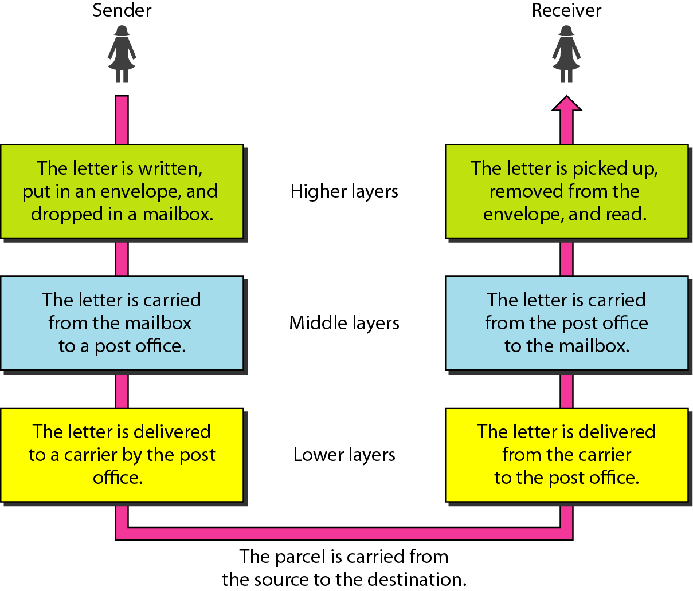
The Principle: Writing a letter, putting it in an envelope, transporting it via postal truck, and delivering it to a mailbox are independent tasks. The mail driver does not inspect what the letter says. Changes in transport (truck to plane) do not alter how letters are written. Layering decomposes a complex system into independent, modular sub-tasks.
🌐 2. The ISO/OSI Reference Model
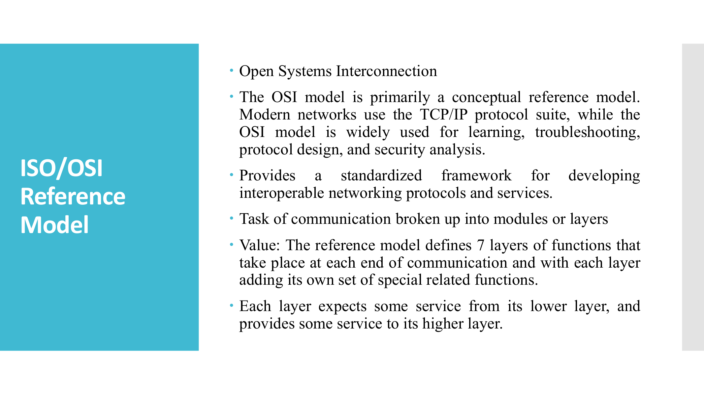
5 ISO Principles for the 7 Layers (Slide 10):
- A separate layer should be created only where a distinct level of abstraction is required.
- Each layer must perform a strictly defined, standardized function.
- Layer functions must be chosen with international standardized protocols in mind.
- Layer boundaries must minimize information flow across interfaces.
- The number of layers must be optimum (not too many, not too few).
Reliability • Scalability • Addressing • Error Control • Flow Control • Resource Allocation • Routing • Security.
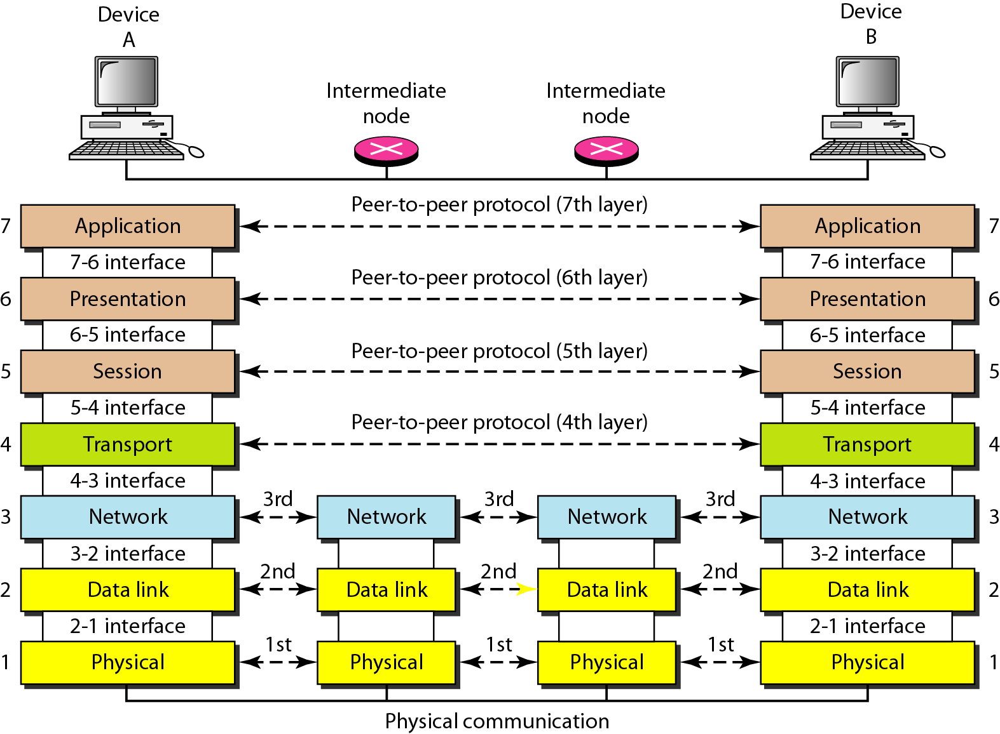
📦 3. Data Encapsulation & De-encapsulation Lifecycle
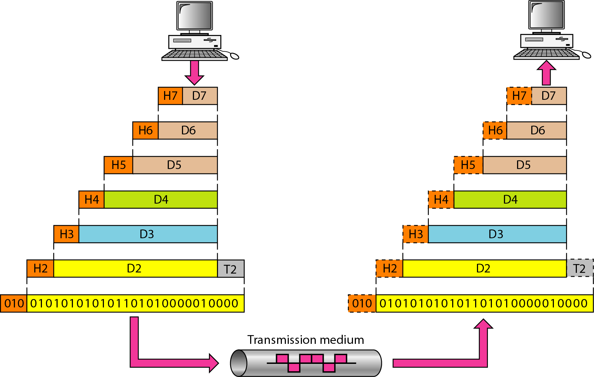
H7 … H2 + T2 → Bits. Notice Data Link is the ONLY layer adding a trailer (T2).🧱 4. Deep-Dive into the 7 OSI Layers
Layer 1: Physical Layer (PDU: Bits)
Transmits raw bit streams over a physical medium. Governs mechanical/electrical specs, data rates, bit synchronization (clock sync), physical topology, and transmission modes (simplex, half-duplex, full-duplex).
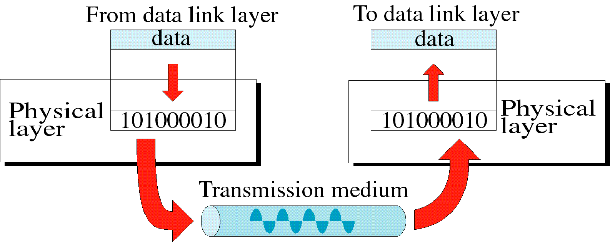
Layer 2: Data Link Layer (PDU: Frames)
Responsible for Hop-to-Hop (Node-to-Node) frame delivery across a single physical link. Governs framing, physical MAC addressing, flow control, and CRC error control via Trailer T2.
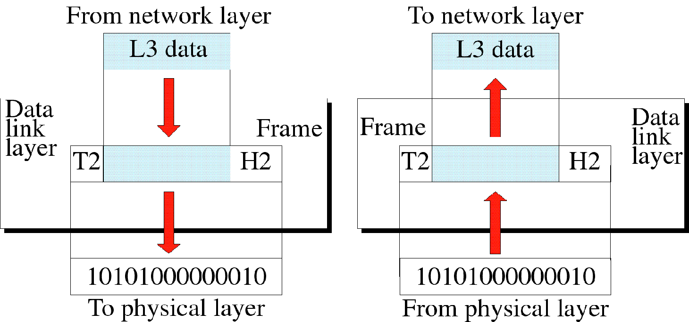
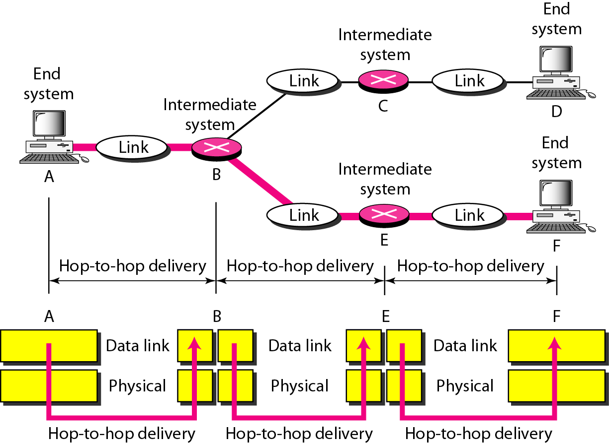
Layer 3: Network Layer (PDU: Packets)
Responsible for Source-to-Destination (Host-to-Host) packet delivery across multiple interconnected subnets. Governs logical IP addressing, routing (OSPF, BGP), and fragmentation.
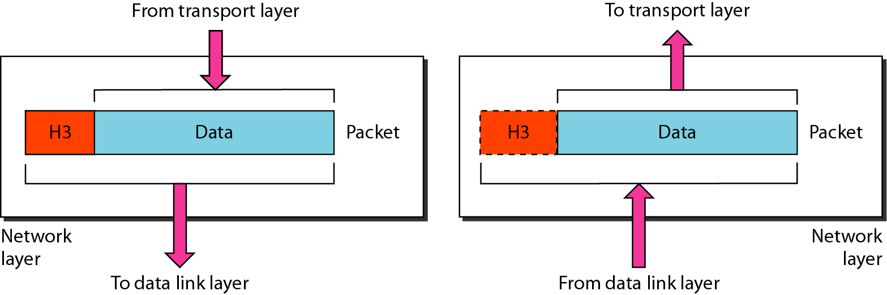
Layer 4: Transport Layer (PDU: Segments)
Responsible for Process-to-Process (Port-to-Port) delivery. Attaches 16-bit Port numbers (HTTP=80, HTTPS=443) so the OS demultiplexes data to the specific application software process. Controls end-to-end reliability (TCP vs UDP).
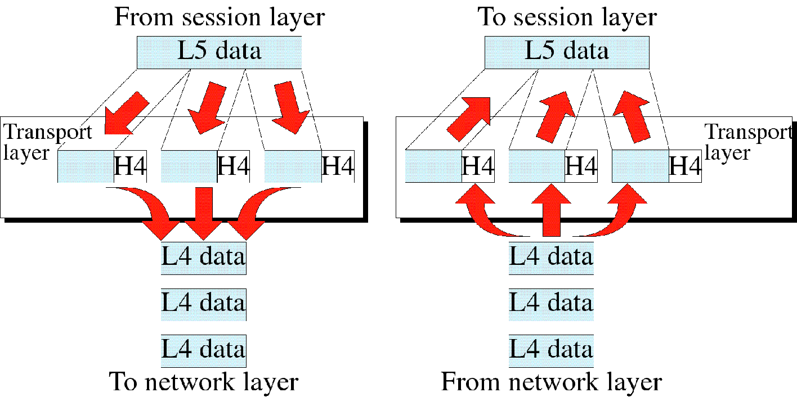
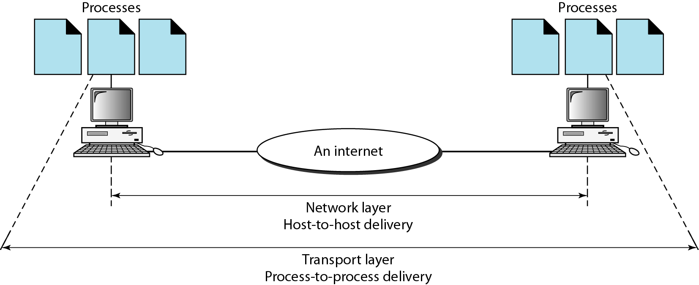
Layers 5, 6, 7: Session, Presentation, Application
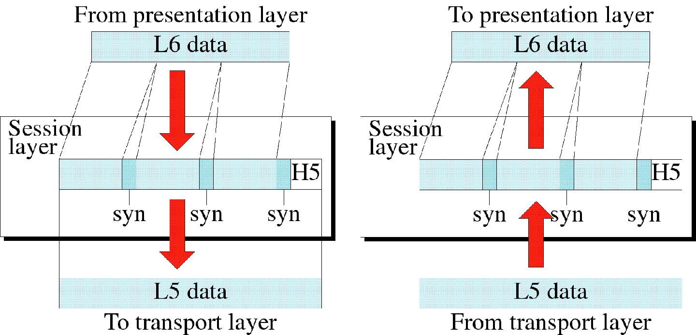
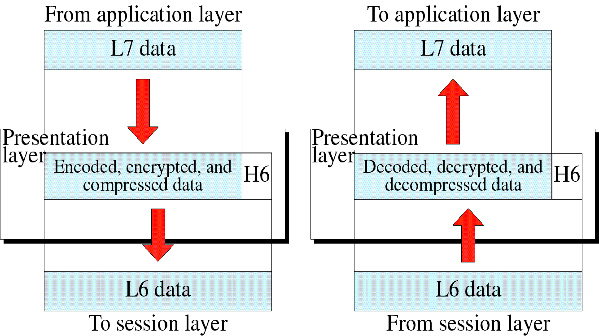
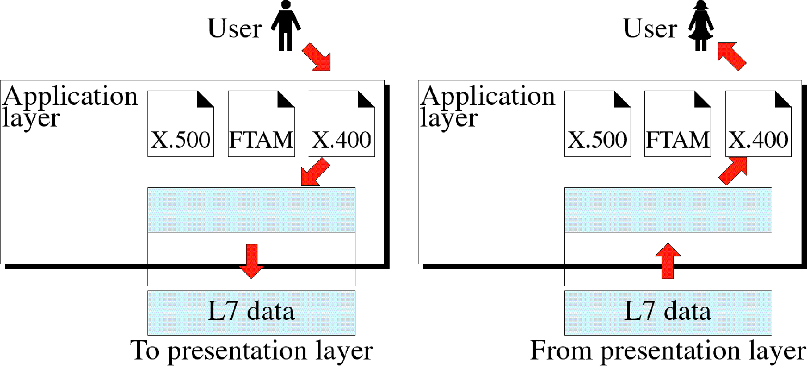
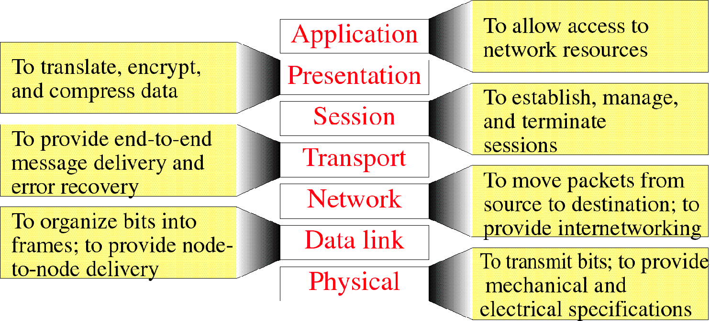
⚔️ 5. The TCP/IP Suite & Master OSI vs. TCP/IP Comparison
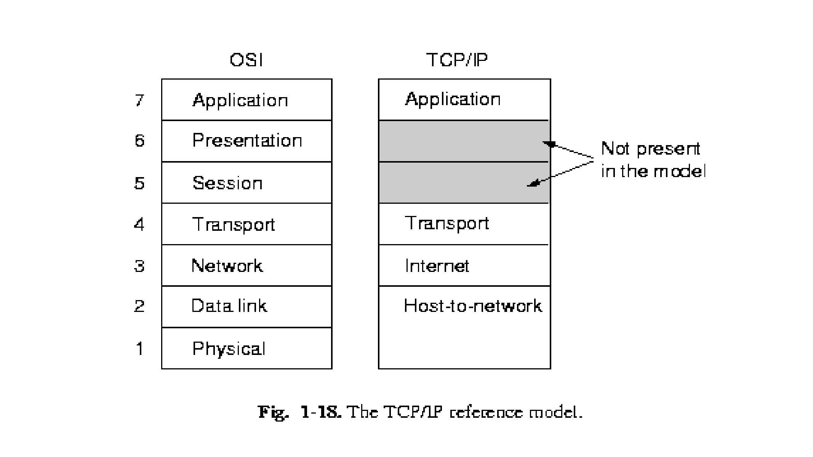
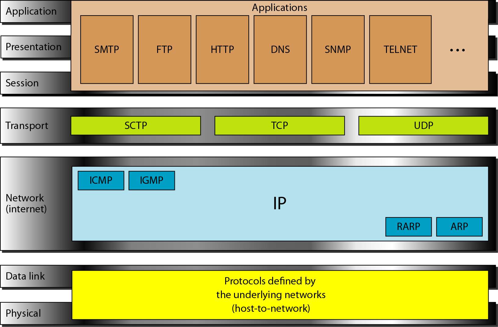
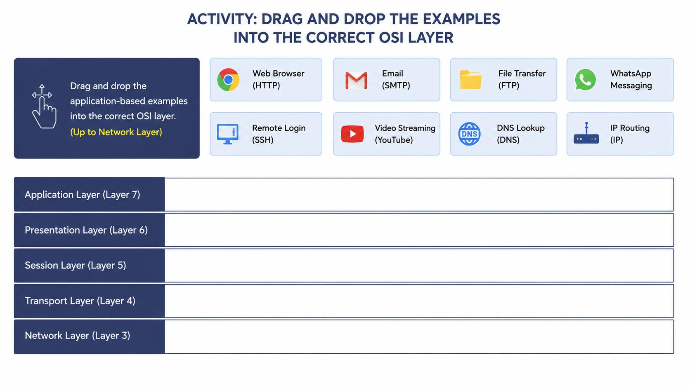
| Feature | OSI Reference Model | TCP/IP Protocol Suite |
|---|---|---|
| Developed By | ISO (1984) | DoD / DARPA (1970s) |
| Model Type | Theoretical Blueprint (House Blueprint) | Practical Implementation (Actual Built House) |
| Layer Count | 7 Layers | 4 Layers |
| Session & Presentation | Dedicated, separate layers | Absent (Integrated into Application layer) |
| Layer 3 Support | Connectionless AND Connection-Oriented | Connectionless ONLY (IP) |
| Layer 4 Support | Connection-Oriented ONLY | Both Connection-Oriented (TCP) & Connectionless (UDP) |
| Current Usage | Universal teaching & troubleshooting tool | The operational standard of the global Internet |
🧠 6. Memory Tricks & Exam Questions
A - P - S - T - N - D - P &implies "All People Seem To Need Data Processing"Delivery Scopes:
• Data Link &implies Hop-to-Hop (adjacent physical nodes)
• Network &implies Host-to-Host (source PC to destination PC)
• Transport &implies Process-to-Process (software app to software app)
[2-Mark] Which OSI layer appends both a header and a trailer? 🔥🔥🔥 MUST DO
Data Link Layer (Layer 2). It appends Header H2 containing source/destination MAC addresses, and Trailer T2 containing the CRC Frame Check Sequence checksum.
4.2 Data Encapsulation and Decapsulation Process
When data travels through the OSI or TCP/IP protocol stack, it undergoes a systematic transformation:
- Application Layer: Generates the user message / raw data.
- Presentation & Session Layers: Format, compress, encrypt data, and establish dialog checkpoints.
- Transport Layer: Divides data into segments, adds Transport Header (H4) containing Source and Destination Port Numbers, Sequence Numbers, and Checksum. PDU = Segment.
- Network Layer: Encloses segment into a packet, adds Network Header (H3) containing Source and Destination IP Addresses and TTL. PDU = Packet / Datagram.
- Data Link Layer: Encloses packet into a frame, adds Data Link Header (H2) with MAC Addresses and a Trailer (T2) containing FCS/CRC-32 for error detection. PDU = Frame.
- Physical Layer: Converts frame bytes into a stream of electrical, optical, or radio pulses transmitted across the medium. PDU = Bits.
The receiving host inspects, verifies, and strips each header layer-by-layer: Physical layer detects bits $ o$ Data Link verifies FCS trailer and strips MAC header $ o$ Network verifies IP and strips IP header $ o$ Transport verifies port and reassembles segments $ o$ Application receives original intact user message.
This exact subtopic was asked in the official Mid-Semester 2025–26 Exam Paper on "Optical Fiber Modes of Propagation for 2 km Campus Backbone".
📘 PPT 5: Components, Transmission Media, Protocols & Tools
Source: Components of a Computer Network.pdf (Pages 1–17)🖥️ 1. Network Nodes & Hardware Architecture
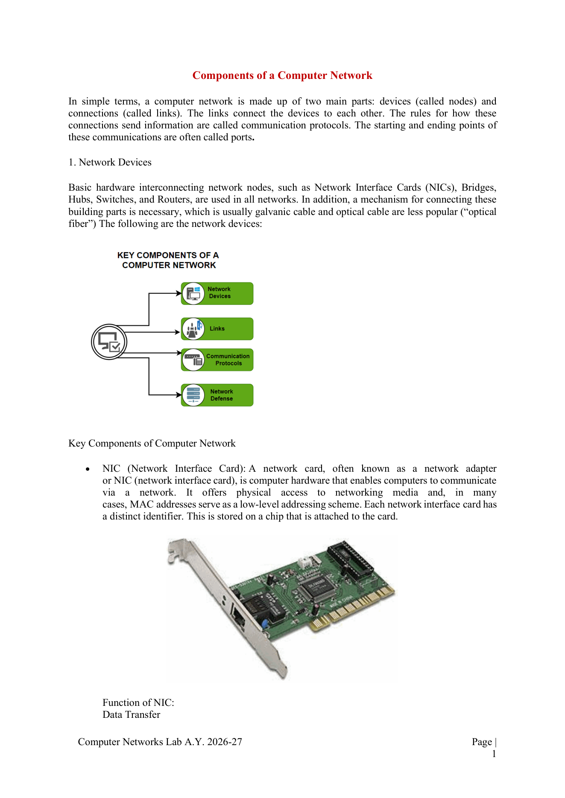
The 6 Functions of a Network Interface Card (NIC):
- Data Buffering: Onboard RAM bridges the speed mismatch between internal CPU bus and network line rate.
- Frame Construction & Stripping: Adds MAC addresses and CRC trailer on transmission; strips on reception.
- Media Access Control (MAC): Executes CSMA/CD on Ethernet or CSMA/CA on Wi-Fi.
- Parallel-to-Serial Conversion (SerDes): Converts 32/64-bit CPU words into serial 1-bit wire streams.
- Line Encoding & Decoding: Converts binary bits to physical signal transitions (e.g. Manchester Encoding).
- Transmission & Reception: Transceivers inject physical voltages or light pulses onto the media.
🪢 2. Guided Transmission Media: Twisted Pair, Coax, Fiber
A. Twisted Pair Cable (UTP vs. STP)
Why Wires are Twisted: Twisting ensures both wires receive identical external electromagnetic interference (EMI). A differential amplifier subtracts the two signals: (S + N) − (−S + N) = 2S, canceling the noise!
- UTP: 4 twisted pairs, inexpensive, flexible. Distance limit: strictly 100 meters (328 feet).
- STP: Foil/braided metallic shielding with a grounded drain wire to absorb heavy industrial EMI.
- Cat6: Features an internal pair separator spline; supports 10 Gbps up to 55m, 1 Gbps up to 100m.
T568A vs. T568B & Straight vs. Crossover Rules:
| Pin | T568A Standard | T568B Standard (Common) | Cable Rule |
|---|---|---|---|
| 1 & 2 | White-Green, Green | White-Orange, Orange |
Straight-Through Cable (T568B ↔ T568B): Connects DIFFERENT devices (PC ↔ Switch, Switch ↔ Router). Crossover Cable (T568A ↔ T568B): Connects LIKE devices (PC ↔ PC, Switch ↔ Switch, Router ↔ PC). |
| 3 & 6 | White-Orange, Orange | White-Green, Green | |
| 4 & 5 | Blue, White-Blue | Blue, White-Blue | |
| 7 & 8 | White-Brown, Brown | White-Brown, Brown |
B. Coaxial Cable
Four concentric layers: Center copper core → Dielectric plastic insulator → Braided metallic shield → Outer PVC jacket.
- 50-Ohm Coax: Baseband digital transmission (10Base2 Thinnet, 10Base5 Thicknet, BNC).
- 75-Ohm Coax: Broadband analog transmission (Cable TV broadband, satellite dishes, RG-6).
C. Fiber Optic Cable
Physics of Total Internal Reflection (TIR): Light reflects completely within the glass core because:
n_core > n_cladding and angle of incidence exceeds critical angle.
| Feature | Single-Mode Fiber (SMF) | Multi-Mode Fiber (MMF) |
|---|---|---|
| Core Diameter | Very narrow (8–10 μm) | Wide (50–100 μm) |
| Light Source | Laser Diode | LED / VCSEL |
| Modal Dispersion | Zero (Single ray path) | High (Multiple bouncing paths) |
| Distance | Long haul (> 100 km) | Short haul (< 2 km) |
| Use Cases | Telecom backbones, undersea submarine cables | Campus LANs, enterprise data centers |
🛡️ 3. Communication Protocols, Defense & Diagnostic Simulators
| Protocol | Layer | Port | Core Function |
|---|---|---|---|
| ARP | Network (L3) | — | Resolves known IP address into physical MAC address on local LAN. |
| DHCP | Application (L7) | 67/68 | Automates IP configuration via DORA (Discover, Offer, Request, Acknowledge). |
| DNS | Application (L7) | 53 | Resolves human domain names (google.com) to IP addresses over UDP. |
| OSPF | Network (L3) | 89 | Link-state interior routing using Dijkstra’s shortest path algorithm. |
| RIP | Application/L3 | 520 | Distance-vector routing using Hop Count (max 15 hops; 16 = unreachable). |
| BGP | Application/L3 | 179 | Path-vector exterior routing powering the global Internet. |
Network Defense: Firewall vs. IDS vs. IPS
- Firewall: Perimeter filter inspecting IP/ports and state tables against access rules.
- IDS (Intrusion Detection System): Deployed out-of-band (passive SPAN port); listens to traffic copy and alerts administrators without blocking packets.
- IPS (Intrusion Prevention System): Deployed inline; inspects live packets and actively drops attack packets in real time.
Network Simulators:
Cisco Packet Tracer (drag-and-drop educational simulator) • GNS3 (real Cisco IOS emulator) • NS3 (discrete-event research simulator) • Wireshark (live packet sniffer & protocol analyzer).
🧮 4. Solved Delay Numerical
A host sends a 1500-byte packet over a 100 Mbps link of length 1 km (propagation speed v = 2 × 108 m/s).
5.1.1 Optical Fiber Types & Standards Organizations
Optical fibers operate on the principle of Total Internal Reflection ($ heta > heta_c$ when entering from higher index core $n_1$ to lower index cladding $n_2$). There are three primary types:
| Fiber Type | Core Diameter | Refractive Index Profile | Light Source | Dispersion & Use Case |
|---|---|---|---|---|
| Multimode Step-Index | 50 to 100 $μ$m (Large) | Abrupt boundary between core and cladding. | LED | High Modal Dispersion: Rays bouncing at steep angles arrive later than central rays. Suitable only for short distance LANs (< 2 km). |
| Multimode Graded-Index | 50 to 62.5 $μ$m | Parabolic profile; index highest at center, decreasing gradually toward edges. | LED or Laser | Reduced Dispersion: Rays near edge travel through lower index faster, arriving almost concurrently with central rays. Used in campus backbones. |
| Single-Mode (SMF) | 8 to 10 $μ$m (Very small) | Step-index, but core diameter is so small light travels only as a direct axial beam. | Laser diode (Injection Laser) | Zero Modal Dispersion: Only material/chromatic dispersion remains. Extremely high bandwidth; long-haul backbones (> 50 km). |
Key Networking Standards Organizations
- ISO (International Organization for Standardization): Defined the 7-layer OSI reference model.
- IEEE (Institute of Electrical and Electronics Engineers): Develops LAN/MAN standards under IEEE 802 (e.g., 802.3 Ethernet, 802.11 Wi-Fi, 802.15 Bluetooth).
- IETF (Internet Engineering Task Force): Develops Internet standards published as RFCs (Request for Comments) (e.g., RFC 791 for IPv4, RFC 793 for TCP).
- ITU-T (International Telecommunication Union - Telecommunication Standardization Sector): UN agency that standardizes global telecommunications (V-series modems, X-series data networks like X.25, G-series transmission systems).
- ANSI (American National Standards Institute): Primary organization for coordinating US voluntary standards; standardized ASCII and FDDI.
🧠 Visual Mind Maps: Module 1 Concept Hierarchies
Structured Relationships & Mental Models🌐 Master Module 1 Mind Map: Architecture & Data Flow
- Nodes: Host PCs, NICs (MAC, SerDes), Repeaters, Hubs (L1)
- Intermediaries: Bridges (L2), Switches (L2 CAM), Routers (L3 IP), Gateways (L4-7)
- Guided Media: UTP/STP (100m limit, Cat6), Coaxial (50Ω/75Ω), Fiber Optics (TIR, SMF/MMF)
- Unguided Media: Radio (omni), Microwaves (line-of-sight), Infrared (no walls)
- Geographical Scale: PAN (≤10m) → LAN (<2km) → MAN (5–50km) → WAN (>50km)
- Topologies: Bus (50Ω terminators), Star (central switch, 40-PC lab), Ring (token passing), Mesh (
L = n(n - 1) / 2), Tree (hierarchical campus), Hybrid
- Multiplexing: FDM (analog guard bands), TDM (digital slots: Sync vs Statistical vs Interleaving), CDM (Walsh codes)
- Switching: Circuit (dedicated 3 phases, PSTN), Message (store-forward), Packet (datagrams/virtual circuits, Internet)
- OSI 7 Layers: Physical → Data Link → Network → Transport → Session → Presentation → Application
- TCP/IP 4 Layers: Network Access → Internet (IP) → Transport (TCP/UDP) → Application
- Core Protocols: ARP (IP-to-MAC), DHCP (DORA), DNS, OSPF, RIP, BGP, HTTP/HTTPS
📘 Mind Maps: PPT 1 (Intro) & PPT 2 (Topologies)
- Core Definition: Interconnected (can exchange bits) + Autonomous (independent CPU/OS)
- Criteria Triad: Performance (transit time), Reliability (recovery), Security
- Classification Hierarchy:
- PAN (≤ 10m): Bluetooth, wearables
- LAN (< 2km): Private, Ethernet, lowest BER
- MAN (5–50km): Citywide, Cable TV, optical rings
- WAN (> 50km): Global, telecom, Internet, undersea fibers
- Bus: Backbone + T-taps + 50Ω terminators (prevents reflection) → CAN Bus
- Star: Central switch + point-to-point links → 40-PC School Lab standard
- Ring: Token Passing (no collisions) → Dual Ring SONET self-healing
- Mesh: Full mesh
L = n(n - 1) / 2→ Zero single points of failure → ISP Core - Tree: Root → Distribution → Access → Campus LANs
- Hybrid: Star-Ring, Star-Mesh → Modern Hyperscale Data Centers
📘 Mind Maps: PPT 3 (Devices & Mux), PPT 4 (OSI), PPT 5 (Media)
- Hub (L1): 1 collision domain, 1 broadcast domain, shared bandwidth
- Switch (L2): 1 collision domain per port, MAC table unicast, dedicated bandwidth
- Router (L3): Breaks broadcast domains, routes packets by IP address
- Switching: Circuit (dedicated 3-phases) vs Packet (statistical multiplexing, Internet)
- Multiplexing: FDM (split freq) vs TDM (split time slots) vs CDM (orthogonal codes)
- Layer 1 (Physical): Bits, signaling, clock sync
- Layer 2 (Data Link): Frames, MAC address, Hop-to-Hop, CRC Trailer (T2)
- Layer 3 (Network): Packets, IP address, Host-to-Host, routing
- Layer 4 (Transport): Segments, Port numbers, Process-to-Process, TCP/UDP
- Layer 5 (Session): Dialog control, checkpoints
- Layer 6 (Presentation): Syntax, translation, SSL encryption, compression
- Layer 7 (Application): User services (HTTP, DNS, FTP)
- TCP/IP: 4 practical layers (Application, Transport, Internet, Network Access)
- Twisted Pair: UTP vs STP, 100m distance limit, T568A/B pinouts
- Cable Rule: Like-to-Like = Crossover; Different = Straight-Through
- Fiber Optics: TIR (
ncore > ncladding), SMF Laser (9μm) vs MMF LED (50μm) - Protocols: ARP (IP→MAC), DHCP (DORA), DNS, OSPF, RIP, BGP
- Defense: Firewall (perimeter), IDS (passive alerts), IPS (inline drops)
⚡ High-Yield Short Notes & Master Cheat Sheet
Rapid Pre-Exam Recall: Definitions, Differences & Rules📝 1. Master Definitions (2-Mark Essentials)
| Term | Exam-Ready Definition |
|---|---|
| Computer Network | An interconnected collection of autonomous computers capable of exchanging information and sharing resources using standardized protocols. |
| Autonomous Computer | A computer operating under its own local processor and operating system, where no external computer can forcibly start, stop, or control it. |
| CSMA/CD | Carrier Sense Multiple Access with Collision Detection; devices listen to the wire before transmitting and abort immediately if a collision is detected. |
| Micro-Segmentation | Switch design where each port is an independent collision domain, eliminating collisions in full-duplex mode. |
| Circuit Switching | Reserves a dedicated, unbroken physical path between sender and receiver through intermediate switches for the duration of a session. |
| Packet Switching | Divides messages into small discrete packets with headers that are dynamically routed across shared intermediate nodes and reassembled at the destination. |
| Multiplexing | Simultaneous transmission of multiple independent signals over a single shared physical channel using a MUX and DEMUX. |
| Statistical TDM | Dynamically allocates time slots on-demand only to active channels, requiring an address header per slot to maximize bandwidth efficiency. |
| Total Internal Reflection | Light reflects 100% inside an optical core because ncore > ncladding and incident angle exceeds critical angle. |
| ARP | Address Resolution Protocol; dynamically maps a known 32-bit IP address to a physical 48-bit MAC address on a local Ethernet segment. |
| DHCP (DORA) | Dynamic Host Configuration Protocol; automatically leases IP configurations via Discover, Offer, Request, Acknowledge. |
| IPS | Intrusion Prevention System; an inline security appliance that inspects live traffic and actively drops attack packets in real time. |
🔢 2. Crucial Exam Numbers, Limits & Standards
| Concept | Exact Number / Standard | Why it Matters |
|---|---|---|
| PAN Range | ≤ 10 meters | Bluetooth transmission limit around an individual. |
| UTP Ethernet Cable Limit | 100 meters (328 feet) | Exceeding this causes excessive signal attenuation and packet loss. |
| Bus Terminator Resistor | 50 Ohms | Absorbs electrical energy at both ends to prevent signal bounce/echo. |
| MAC Address Length | 48 bits (6 bytes) | Burned into NIC ROM; first 24 bits = Vendor OUI, last 24 bits = Serial. |
| Single-Mode Core Size | 8 to 10 μm | Tiny laser core eliminates modal dispersion over 100+ km distances. |
| Multi-Mode Core Size | 50 to 100 μm | Wide LED core allows multiple light paths; limited to < 2 km. |
| RIP Maximum Hop Count | 15 hops | Hop count 16 is defined as infinity (network unreachable). |
| Dual Ring Failover Time | ≤ 50 milliseconds | SONET/SDH automatic loopback recovery time during cable cut. |
⚖️ 3. Quick-Reference Master Differences
| Comparison | Entity A | Entity B |
|---|---|---|
| Hub vs. Switch | Hub: Layer 1, blind broadcast, 1 shared collision domain, shared bandwidth. | Switch: Layer 2, MAC unicast, collision domain per port, dedicated bandwidth. |
| Circuit vs. Packet | Circuit: Dedicated physical path, 3 phases, constant delay, wasted on idle (PSTN). | Packet: Packets with headers, independent dynamic routes, statistical sharing (Internet). |
| FDM vs. TDM | FDM: Splits frequency spectrum into bands; uses guard bands; analog (Radio/CATV). | TDM: Splits time into slots; shares full bandwidth sequentially; digital (T1/LAN). |
| OSI vs. TCP/IP | OSI: 7 layers; theoretical blueprint; distinct service/interface/protocol boundaries. | TCP/IP: 4 layers; practical implementation; powers global commercial Internet. |
| Straight vs. Crossover | Straight: T568B to T568B; connects DIFFERENT devices (PC ↔ Switch). | Crossover: T568A to T568B; connects LIKE devices (PC ↔ PC, Switch ↔ Switch). |
| IDS vs. IPS | IDS: Deployed out-of-band; passive monitoring; generates alert logs. | IPS: Deployed inline; active live inspection; actively drops attack packets. |
🧮 Master Numericals: Formulas, Solved Examples & Exam Methods
Step-by-Step Problem Solving for University Exams🧮 Topic 1: Full Mesh Topology Links & Ports
Total Duplex Links:
L = n(n - 1) / 2I/O Ports Required per Node:
P = n - 1Total Network Ports:
Ptotal = n(n - 1)
A financial office has 6 trading computers connected in a Full Mesh topology.
An engineering lab has 10 computers. Compare cables required for (a) Full Mesh, (b) Star, and (c) Ring.
Conclusion: Star topology reduces required cabling by 77.8% compared to Full Mesh.
• Forgetting to divide by 2 (
n(n - 1) gives unidirectional lines, but physical communication cables are full-duplex, so divide by 2!).• Confusing ports per node (
n - 1) with total links (n(n - 1) / 2).
Interactive Practice Problems:
[Practice 1.1] A company has 12 branch routers in a full mesh. Calculate links and ports per router. 🔥 MUST PRACTICE
Step-by-Step Solution:
[Practice 1.2] If a full mesh network has 28 physical links, how many computers are in the network? 🔥 IMPORTANT
Step-by-Step Solution:
🧮 Topic 2: Synchronous TDM Output Bit Rate & Frame Details
Frame Size:
Sf = (N × b) + Framing Bits (where N = channels, b = bits per slot)Frame Rate:
F = Input Channel Bit Rate / bOutput Bit Rate:
C = F × SfFrame Duration:
Tf = 1 / FTransmission Efficiency:
η = (Payload Bits / Total Frame Bits) × 100%
Four 1-kbps (1000 bps) channels are multiplexed using Synchronous TDM. Each slot carries 1 bit. 1 framing bit is added per frame.
Eight channels of 2400 bps each are multiplexed using character/byte interleaving (8 bits per slot). 1 byte (8 bits) of framing overhead is added per frame.
Interactive Practice Problems:
[Practice 2.1] Four 2-kbps channels are multiplexed with 1 bit per slot and 1 framing bit. Find the output bit rate. 🔥 MUST PRACTICE
Step-by-Step Solution:
🧮 Topic 3: FDM Bandwidth with Guard Bands
Total Bandwidth Btotal = (N × B) + ((N - 1) × G)Remember: For N channels, there are strictly (N - 1) guard bands!
Five voice channels of 4 kHz each are multiplexed using FDM with 1 kHz guard bands.
[Practice 3.1] Ten 5-kHz channels are multiplexed using FDM with 500-Hz (0.5 kHz) guard bands. What is the total bandwidth? 🔥 MUST PRACTICE
Step-by-Step Solution:
🧮 Topic 4: Transmission Delay vs. Propagation Delay
Transmission Delay:
Ttrans = L / R [Packet length (bits) ÷ Bandwidth (bps)]Propagation Delay:
Tprop = d / v [Distance (m) ÷ Signal speed (v ≈ 2 × 108 m/s in copper/fiber)]Total Latency:
Ttotal = Ttrans + Tprop
A 1500-byte packet is sent over a 100 Mbps link of length 1 km (signal speed v = 2 × 108 m/s).
[Practice 4.1] A 1-MB file is sent over a 10-Mbps satellite link at an altitude of 36,000 km (v = 3 × 108 m/s). Find Ttrans and Tprop. 🔥 IMPORTANT
Step-by-Step Solution:
📝 Master Question Bank: 2M, 4/5M, 8/10M & Application Questions
Consolidated University Exam Problem Set • Ranked by Priority📌 2-Mark Short Answer Questions
1. Define a computer network according to Tanenbaum. 🔥🔥🔥 MUST DO
An interconnected collection of autonomous computers. "Interconnected" means they can exchange information over a transmission medium; "autonomous" means each machine operates independently with its own processor and OS, free from master-slave control.
2. Write the mathematical formula for links in a Full Mesh network of n nodes. 🔥🔥🔥 MUST DO
L = n(n - 1) / 2. Each node requires n - 1 physical I/O ports.
3. State two differences between a Hub and a Switch. 🔥🔥🔥 MUST DO
(1) A Hub operates at Layer 1 and blindly broadcasts frames to all ports; a Switch operates at Layer 2 and unicasts frames to the specific destination using MAC addresses. (2) A Hub has 1 shared collision domain; each Switch port is an independent collision domain.
4. State the PDU at the Physical, Data Link, Network, and Transport layers. 🔥🔥🔥 MUST DO
Physical: Bits; Data Link: Frames; Network: Packets (Datagrams); Transport: Segments.
5. What is the certified physical distance limit of a Cat6 UTP cable? 🔥🔥🔥 MUST DO
Strictly 100 meters (328 feet) per Ethernet segment.
6. What is the function of terminators on a Bus topology? 🔥🔥 SHOULD DO
50-ohm terminating resistors placed at both physical ends of the backbone absorb electrical signal energy, preventing signal bounce/reflections that collide with and corrupt ongoing transmissions.
7. State the condition for Total Internal Reflection in fiber optics. 🔥🔥 SHOULD DO
The refractive index of the core (n1) must be strictly greater than the cladding (n2), i.e., ncore > ncladding, and the angle of incidence must exceed the critical angle.
📌 4/5-Mark Medium Explanations & Comparisons
1. Compare LAN, MAN, and WAN across at least 5 parameters. 🔥🔥🔥 MUST DO
Area: LAN < 2km; MAN 5–50km; WAN > 50km.
Media: LAN uses UTP/Wi-Fi; MAN uses optical fiber/coaxial; WAN uses undersea fiber/satellite.
Data Rate: LAN is 1–10 Gbps; MAN is 100 Mbps–1 Gbps; WAN is variable.
Bit Error Rate: LAN has the lowest BER; WAN has the highest.
Ownership: LAN is private; MAN is public/consortium; WAN is shared telecom carriers.
2. Explain why the Internet uses Packet Switching instead of Circuit Switching. 🔥🔥🔥 MUST DO
(1) Statistical Multiplexing: Computer data is bursty; packet switching allows thousands of users to share the same physical trunk link without paying for idle channels.
(2) Fault Tolerance: Dynamic packet routing allows routers to bypass severed fiber lines or dead routers automatically.
(3) Zero Setup Delay: Packets are transmitted immediately without waiting seconds for end-to-end circuit reservation.
3. Compare Single-Mode Fiber (SMF) and Multi-Mode Fiber (MMF). 🔥🔥🔥 MUST DO
Core Size: SMF is 8–10 μm; MMF is 50–100 μm.
Light Source: SMF uses Laser Diode; MMF uses LED/VCSEL.
Distance: SMF > 100 km; MMF < 2 km.
Modal Dispersion: SMF has zero modal dispersion; MMF has high modal dispersion.
Applications: SMF in telecom trunks and undersea cables; MMF in campus LAN backbones and data centers.
4. Explain the 6 internal functions of a Network Interface Card (NIC). 🔥🔥 SHOULD DO
1. Data Buffering (onboard RAM bridges bus-speed mismatch).
2. Frame Construction/Stripping (adds MAC addresses and FCS CRC trailer).
3. Media Access Control (executes CSMA/CD or CSMA/CA).
4. Parallel-to-Serial Conversion (SerDes converts CPU words to wire bits).
5. Line Encoding (translates bits to voltages via Manchester encoding).
6. Physical Transmission and Reception (transceivers inject voltages or light pulses).
5. Compare Synchronous TDM, Statistical TDM, and Interleaving TDM. 🔥🔥 SHOULD DO
Synchronous TDM assigns fixed round-robin slots, transmitting empty slots when channels are idle (wastes bandwidth).
Statistical TDM dynamically allocates slots on-demand only to active channels, attaching an address header to maximize efficiency.
Interleaving TDM slices bits/bytes across multiple frames so that a sudden burst noise pulse corrupts only 1 bit per channel, which error-correction codes can easily repair.
📌 8/10-Mark Detailed Long Answer Questions
1. Explain the ISO/OSI Reference Model in detail with functions of all 7 layers. 🔥🔥🔥 MUST DO
Checklist for 10/10 Score:
• Background: ISO standard (1984), 7 layers.
• Draw the 7 layers at Sender, Router, and Receiver.
• L1 Physical: Bits, signaling, clock sync, hubs.
• L2 Data Link: Frames, MAC addressing, Hop-to-Hop delivery, CRC trailer T2, switches.
• L3 Network: Packets, IP addressing, Host-to-Host delivery, routing, routers.
• L4 Transport: Segments, 16-bit Port numbers, Process-to-Process delivery, TCP vs UDP.
• L5 Session: Dialog control, checkpoints for crash recovery.
• L6 Presentation: Translation (ASCII/EBCDIC), SSL encryption, compression.
• L7 Application: User interfaces, HTTP, FTP, SMTP, DNS.
• Explain Encapsulation flow (H7 … H2 + T2).
2. School Laboratory Case Study: Design a network for 40 computers. 🔥🔥🔥 MUST DO
Recommended Topology: Star Topology.
Justifications: (1) Fault isolation: single PC failure doesn't affect remaining 39; (2) Scalability: expansion requires only plugging into empty switch ports; (3) Dedicated performance: 1 Gbps per port eliminates collisions; (4) Easy troubleshooting: port LEDs show link status.
Central Device: Intelligent Network Switch over Hub because a switch unicasts based on MAC address with dedicated bandwidth, whereas a hub broadcasts blindly with shared bandwidth.
4-Step Switch Working: Frame arrival → Source MAC learning in CAM table → Destination lookup → Selective unicast forwarding.
3. State Bank of India (SBI) 3-Storey Smart Branch Network Design. 🔥🔥🔥 MUST DO
Architecture: Edge Router (Cisco ISR) → Next-Gen Firewall (Palo Alto) → Core Switch (Server Room) → Access Switches (Floors) → 6-Tier VLAN Segmentation.
Why Hubs are Banned: Security risk (hubs broadcast cleartext banking data to all PCs) and heavy collision chokes.
VLAN Design: VLAN 10 (Employees), VLAN 20 (Cash Counters), VLAN 30 (ATMs tunnel to Head Office), VLAN 40 (CCTV), VLAN 50 (Guest Wi-Fi), VLAN 60 (Servers).
🚨 Final Revision Dashboard: Last 60-Minute Cram Sheet
Emergency Rapid-Fire Review • Read This 1 Hour Before the Exam🚨 The "Golden 60-Minute" Pre-Exam Cram Sheet
If your exam starts in ONE HOUR, memorize these 12 core points:
- Autonomous vs. Interconnected: Interconnected = share media/protocols; Autonomous = independent CPU/OS, no master-slave control.
- PAN, LAN, MAN, WAN: PAN (≤10m, Bluetooth) → LAN (<2km, private, Ethernet, lowest BER) → MAN (5–50km, citywide fiber/CATV) → WAN (Global Internet, undersea submarine cables).
- Mesh Formulas: Duplex Links
L = n(n - 1) / 2; Ports per nodeP = n - 1. For 10 nodes &implies 45 links, 9 ports. - 40-PC Lab Design: Recommend Star Topology with an Intelligent Switch: individual fault isolation, scalability, dedicated 1 Gbps per port, easy LED troubleshooting.
- Hub vs. Switch vs. Router:
- Hub: Layer 1, blind broadcast, 1 shared collision domain, shared bandwidth.
- Switch: Layer 2, MAC CAM table unicast, dedicated collision domain per port, 1 broadcast domain, dedicated bandwidth.
- Router: Layer 3, IP routing table, breaks both collision AND broadcast domains, performs NAT.
- Switching Triad:
- Circuit: Dedicated physical path, 3 phases (Setup, Transfer, Teardown), constant delay, wasted on idle (PSTN).
- Packet: Packets with headers, independent dynamic routes, statistical multiplexing, out-of-order reassembly, survives node failures (Internet).
- Multiplexing Triad:
- FDM: Analog, splits frequency spectrum into sub-bands, uses (N − 1) guard bands (Radio/CATV).
- TDM: Digital, splits time into slots. Synchronous = fixed slots (wastes empty slots); Statistical = dynamic slots with address tags.
- CDM: Same frequency, same time, orthogonal Walsh codes (
CA · CB = 0).
- OSI 7 Layers in Order: Physical (Bits), Data Link (Frames), Network (Packets), Transport (Segments), Session (Data), Presentation (Data), Application (Data).
Mnemonic: "All People Seem To Need Data Processing". - Delivery Scopes: Data Link = Hop-to-Hop; Network = Host-to-Host; Transport = Process-to-Process.
- OSI vs. TCP/IP: OSI is a 7-layer theoretical blueprint; TCP/IP is a 4-layer practical commercial standard (Application, Transport, Internet, Network Access).
- Twisted Pair & Fiber Specs:
- UTP distance limit = 100 meters. Twisting cancels crosstalk/EMI.
- Straight cable = Different devices (PC to Switch); Crossover cable = Like devices (PC to PC, Switch to Switch).
- Fiber TIR:
ncore > ncladding. SMF = 9μm, Laser, >100km; MMF = 50μm, LED, <2km.
- Core Protocols & Defense: ARP (IP to MAC), DHCP (DORA auto-assigns IP), DNS (domain to IP), OSPF (Dijkstra link-state), RIP (hop count metric, max 15 hops), IPS (inline active blocking).
🖼️ Master Diagram Reference Gallery
H7 … H2 + T2).📘 PPT 1: Data Link Layer Design & Framing
Source: Module_2_part1_updated.pdf🧠 1. Concept Explanation from Zero: What is Data Link Layer?
The Physical Layer moves raw electrical voltages, radio pulses, or light flashes across wires, but it possesses zero intelligence. It cannot recognize where a message begins, where it ends, or whether the bits were garbled along the way. If a sender streams 10,000 continuous bits, the receiver has no way of parsing words from noise.
The Data Link Layer (Layer 2) transforms this raw, error-prone bit pipe into a structured, error-free link. It groups raw bits into manageable discrete blocks called Frames, assigns hardware-level MAC addresses for local hop-to-hop forwarding, regulates traffic speed (Flow Control) so fast senders do not swamp slow receivers, and detects corrupted transmissions (Error Control).
⚙️ 2. Services Provided to the Network Layer
The Data Link Layer acts as a service provider to the Layer 3 Network Layer. In university exams, you must classify these into three distinct service classes:
| Service Class | Handshake? | Feedback / ACK? | Typical Real-World Use Case |
|---|---|---|---|
| 1. Unacknowledged Connectionless | No | No ACK sent | Ethernet LANs (low error rates); Real-time VoIP/Video where timeliness matters more than lost frames. |
| 2. Acknowledged Connectionless | No | Individual ACK for each frame | Wireless 802.11 (Wi-Fi) where high noise makes immediate per-frame acknowledgment necessary without setup overhead. |
| 3. Acknowledged Connection-Oriented | Yes (Setup, Transfer, Release) | Guaranteed ordered delivery with ACKs | High-reliability WANs, legacy X.25, and ATM networks over noisy copper trunks. |
🖼️ 3. Framing Techniques: How Does the Receiver Know Frame Boundaries?
To avoid treating an endless bit stream as a single blob, the DLL divides the stream into Frames. There are four major framing techniques covered in your syllabus:
Method 1: Character Count
The frame header begins with an integer field specifying the total number of characters in the frame (including the count character itself). For example: 5 1 2 3 4 means a 5-character frame.
5 becomes 7), the receiver reads beyond the frame boundary. Framing synchronization is permanently destroyed for all subsequent frames until an idle gap occurs.
Method 2: Flag Bytes with Byte (Character) Stuffing
Frames begin and end with reserved 1-byte delimiters called FLAG bytes (typically 01111110 or ASCII DLE STX / DLE ETX).
The Accidental Collision Problem: What happens if the payload data itself contains the binary pattern of a FLAG byte? The receiver would prematurely terminate the frame!
The Solution (Byte Stuffing): Whenever a FLAG byte occurs naturally inside data, the sender inserts an Escape Byte (ESC) immediately before it. If an actual ESC occurs in data, the sender prepends another ESC (ESC ESC). The receiver strips the first ESC and delivers the original data byte to Layer 3.
Method 3: Bit Stuffing (High-Level Data Link Control - HDLC)
Allows arbitrary bit lengths (not restricted to 8-bit byte multiples). Frames start and end with the unique 8-bit flag 01111110 (six consecutive 1s surrounded by 0s).
• Sender Rule: Whenever the sender encounters FIVE consecutive 1s (
11111) in the data stream, it automatically injects a 0 bit immediately after them (producing 111110), regardless of what the next bit is.• Receiver Rule: When the receiver sees five 1s followed by a 0, it automatically deletes the 0 bit to restore original data. If it sees five 1s followed by a 1 and 0, it recognizes the end-of-frame FLAG!
Given User Data Stream: 01101111111011111010
Method 4: Physical Layer Coding Violations
Used in networks with redundant line encoding (such as Manchester encoding where bits must have a mid-bit transition). A high-high or low-low line state violates the coding rule and cannot represent a valid bit; hence, it is safely used as a frame boundary delimiter without wasting payload bits.
🏷️ 4. Addressing Across the Layers
- Physical Address (MAC): 48 bits (6 bytes), hex notation (e.g.
00:1A:2B:3C:4D:5E). Burned into NIC ROM. Changes on every hop as frame travels through routers. - Logical Address (IP): 32 bits (IPv4), dotted-decimal (e.g.
192.168.1.1). Universal end-to-end address. Never changes across transit routers. - Port Address: 16 bits (0 to 65,535), identifies the specific destination process/application (e.g. Port 80 for HTTP, Port 443 for HTTPS).
📘 PPT 2: Error Detection & Error Correction
Source: Error_Detection_&_Error_Correction.pdf⚠️ 1. Types of Transmission Errors
Data transmission across physical media is subject to thermal noise, impulse noise, and attenuation. Exam questions distinguish between:
| Error Type | Definition & Nature | Likelihood & Cause |
|---|---|---|
| Single-Bit Error | Only 1 solitary bit in the entire data unit is inverted (0 → 1 or 1 → 0). | Extremely rare in serial transmission because noise impulse duration is usually much longer than 1 bit time. |
| Multiple-Bit Error | Two or more non-consecutive bits in the data unit are corrupted. | Occurs due to intermittent interference spikes. |
| Burst Error | Two or more consecutive bits are corrupted from the first corrupted bit to the last corrupted bit (length of burst = last - first + 1). | Most common error in real-world networks caused by lightning, motor relays, power surges, or cosmic rays whose duration spans multiple bit intervals. |
🛡️ 2. Error Detection Schemes
A. Simple Parity Check (Single-Dimensional)
Appends 1 redundant parity bit to each data word such that total number of 1s is either Even (Even Parity) or Odd (Odd Parity).
B. Two-Dimensional (2D) Parity Check
Data is organized into a matrix of rows and columns. A parity bit is calculated for every row AND every column.
- Detection Capability: Detects 1, 2, and 3-bit errors. Detects most burst errors up to the width of the matrix.
- Correction Capability: Can correct any single-bit error because the faulty bit lies precisely at the intersection of the erroneous row and erroneous column!
C. Internet Checksum
Used by Network and Transport layers (IPv4 header, TCP, UDP). Treats data as a sequence of 16-bit integers.
• Sender: Divides data into 16-bit words. Sums all words using One's Complement Arithmetic (any carry beyond 16 bits is wrapped around and added to the lowest bit). Then inverts the result (1's complement) → This is the Checksum appended to frame.
• Receiver: Sums all received 16-bit words PLUS the received checksum using One's complement. If the sum is all 1s (
0xFFFF, or inverted 0x0000), the packet is accepted as uncorrupted.
🧮 3. Cyclic Redundancy Check (CRC) & Modulo-2 Arithmetic
CRC is the industrial gold standard for Data Link error detection (used in Ethernet 802.3, Wi-Fi, SATA, USB). It operates on Modulo-2 Binary Division where addition and subtraction are identical to the bitwise XOR operation (no carries, no borrows):
0 ⊕ 0 = 0 | 1 ⊕ 1 = 0 | 0 ⊕ 1 = 1 | 1 ⊕ 0 = 1
Step 1: Identify Generator Polynomial G(x) of degree r. The divisor has (r + 1) bits.
Step 2: Append r zeros to the right of raw message bits M.
Step 3: Perform Modulo-2 division of padded message by the divisor using XOR.
Step 4: The r-bit remainder is the CRC Checksum (FCS). Transmitted codeword = Raw Message + Remainder.
Receiver Check: Receiver divides codeword by same divisor. If remainder == 0, accept!
| Standard Polynomial | Degree (r) | Generator Polynomial Formula | Industry Application |
|---|---|---|---|
| CRC-8 | 8 | x8 + x2 + x + 1 |
ATM Header Error Control (HEC) |
| CRC-16 | 16 | x16 + x15 + x2 + 1 |
Modbus, USB data packets |
| CRC-CCITT | 16 | x16 + x12 + x5 + 1 |
HDLC, X.25, Bluetooth |
| CRC-32 | 32 | x32 + x26 + x23 + … + 1 |
IEEE 802.3 Ethernet, Wi-Fi, ZIP/PNG archives |
🎯 4. Block Coding, Hamming Distance & Hamming (7,4) Code
Error detection only flags bad frames. Forward Error Correction (FEC) enables the receiver to reconstruct corrupted bits without retransmission.
• Hamming Distance d(x,y): Number of bit positions in which two codewords differ.
• Minimum Hamming Distance dmin: The smallest Hamming distance between any pair of valid codewords in a code scheme.
• To Detect s errors: We strictly require
dmin ≥ s + 1.• To Correct t errors: We strictly require
dmin ≥ 2t + 1.
The Hamming (7,4) Code Architecture:
Encodes 4 data bits into a 7-bit codeword by adding 3 redundant parity bits (r = 3, since 2r ≥ m + r + 1 → 23 ≥ 4 + 3 + 1 = 8 holds true!).
- Parity Bit Positions: Placed strictly at powers of 2 → Bit 1 (
20), Bit 2 (21), Bit 4 (22). - Data Bit Positions: Remaining slots → Bit 3 (d0), Bit 5 (d1), Bit 6 (d2), Bit 7 (d3).
- Parity Check Equations (Even Parity):
p1checks bits with bit 0 set in binary (1, 3, 5, 7):p1 = b3 ⊕ b5 ⊕ b7p2checks bits with bit 1 set in binary (2, 3, 6, 7):p2 = b3 ⊕ b6 ⊕ b7p4checks bits with bit 2 set in binary (4, 5, 6, 7):p4 = b5 ⊕ b6 ⊕ b7
- Syndrome Word (s4 s2 s1): The receiver recomputes the parities. The resulting 3-bit binary syndrome directly points to the exact 1-based index of the corrupted bit! (e.g.
1012 = 5→ Invert Bit 5 to correct!).
2.2.1 Standard CRC Generator Polynomials & Mathematical Guarantees
| Standard | Generator Polynomial Formula | Degree (r) | Primary Application |
|---|---|---|---|
| CRC-8 | x8 + x2 + x + 1 | 8 | ATM header error control |
| CRC-10 | x10 + x9 + x5 + x4 + x + 1 | 10 | ATM AAL3/4 payload |
| CRC-12 | x12 + x11 + x3 + x2 + x + 1 | 12 | Used when character size is 6 bits |
| CRC-16 | x16 + x15 + x2 + 1 | 16 | Modbus, USB, ANSI standards |
| CRC-CCITT | x16 + x12 + x5 + 1 | 16 | HDLC, X.25, Bluetooth |
| CRC-32 | x32 + x26 + x23 + x22 + x16 + x12 + x11 + x10 + x8 + x7 + x5 + x4 + x2 + x + 1 | 32 | IEEE 802.3 Ethernet, ZIP archives, PNG |
This exact subtopic was asked in the official Mid-Semester 2025–26 Exam Paper on "Stop-and-Wait ARQ Scenarios, 5 Requirements & BDP Link Efficiency".
📘 PPT 3: Flow & Error Control Protocols (ARQ)
Source: Flow_and_Error_Control.pdf🚦 1. Why Do We Need Flow Control?
A fast server transmitting over Gigabit fiber to a low-power mobile client with modest RAM will quickly exhaust the client's ingress buffers. Without flow control, packets overflow buffer queues and are dropped. Flow Control coordinates sender transmission rate to match receiver processing capacity.
Automatic Repeat reQuest (ARQ) combines flow control with error control (retransmissions upon timeout or damage).
⏱️ 2. Stop-and-Wait ARQ
The simplest ARQ protocol. Sender sends 1 frame, starts a retransmission timer, and freezes until positive ACK is received.
- Sequence Numbers: Alternating 1-bit sequence numbers (0 and 1).
- Acknowledgment (ACK): ACK contains the sequence number of the NEXT expected frame (ACK 1 confirms Frame 0).
- Damaged Frame / Lost Frame: Timer expires → Sender retransmits frame.
- Lost ACK: Timer expires → Sender retransmits frame. Receiver detects duplicate via sequence number, discards duplicate frame, and resends ACK.
Total cycle time =
Ttrans + 2 × Tprop.Utilization / Efficiency:
U = 1 / (1 + 2a), where a = Tprop / Ttrans.On satellite or high-speed long-distance links where propagation delay dwarfs transmission time (e.g. a = 100), efficiency drops below 0.5%! The sender spends 99.5% of its time idling.
🪟 3. Sliding Window Protocols: GBN vs. Selective Repeat
To overcome idle waiting, Sliding Window allows the sender to transmit multiple consecutive frames (a "window" of frames) before halting for an ACK.
| Parameter | Stop-and-Wait ARQ | Go-Back-N (GBN) ARQ | Selective Repeat (SR) ARQ |
|---|---|---|---|
| Sender Window (WS) | 1 | 2m − 1 |
2m−1 |
| Receiver Window (WR) | 1 | 1 (no out-of-order buffer) | 2m−1 (buffers out-of-order frames) |
| ACK Type | Cumulative / Individual | Cumulative (ACK n confirms all frames up to n-1) | Individual / Selective (ACKs each frame + NAK) |
| On Corrupted Frame | Timeout & Resend 1 frame | Retransmits ALL N frames in window from error onwards | Retransmits ONLY the 1 faulty frame |
| Receiver Buffering | None | None (discards out-of-order frames) | Requires sorting buffer of size WR |
| Implementation Cost | Very Low | Moderate | High (complex logic & memory) |
| Ideal Environment | Short, noiseless links | Channels with low error rate | Noisy channels / High-latency satellite links |
If window size exceeds half the sequence number space in Selective Repeat (e.g. W = 2m), then in the event that all ACKs are lost in transit, the sender will time out and retransmit its entire window. The receiver would be unable to distinguish whether the incoming frames are duplicates of old frames or new frames from the next cycle! Restricting
W ≤ 2m-1 guarantees the current receiver window never overlaps with the sender's unacknowledged sequence space.
3.5 Piggybacking: Concept, Mechanism & Timer
In two-way (full-duplex) communication, when Station A sends data to Station B, Station B must acknowledge (ACK) the frames. Transmitting separate, standalone ACK frames wastes significant bandwidth because every frame requires its own header, preamble, and framing overhead.
Instead of generating an immediate standalone ACK frame, the receiver delays the ACK briefly and attaches (piggybacks) the ACK sequence number into the header of an outgoing data frame destined back to Station A.
This exact subtopic was asked in the official Mid-Semester 2025–26 Exam Paper on "CSMA/CD Minimum Frame Size Rule & ALOHA Throughput".
📘 PPT 4: MAC Sublayer, Multiple Access & Ethernet
Source: Module_2_cn_part_4.pdf📡 1. Medium Access Control (MAC) Protocol Taxonomy
When multiple computers share a single broadcast transmission medium (bus cable, airwaves), their signals collide and garble unless governed by a protocol. The MAC Sublayer (IEEE 802) resolves channel contention.
| Category | Key Protocols | How Access is Decided |
|---|---|---|
| 1. Random Access (Contention) | Pure ALOHA, Slotted ALOHA, CSMA, CSMA/CD, CSMA/CA | No master station; stations contend; collisions can occur and must be resolved. |
| 2. Controlled Access | Reservation, Polling (Poll/Select), Token Passing | Stations consult each other or a master node; zero collisions. |
| 3. Channelization | FDMA, TDMA, CDMA | Channel bandwidth is split by frequency, time, or orthogonal codes. |
🏝️ 2. ALOHA Protocols: Pure vs. Slotted ALOHA
| Metric | Pure ALOHA (1970, Univ. of Hawaii) | Slotted ALOHA (Roberts, 1972) |
|---|---|---|
| Transmission Rule | Transmit immediately whenever a packet is ready. Continuous time. | Time is divided into discrete slots equal to Tframe. Transmit strictly at slot boundary. |
| Vulnerable Period | 2 × Tframe (Frame collides if another station sends within 1 frame time before or after). |
Tframe (Collisions occur only if two stations choose the exact same slot). |
| Throughput Formula | S = G × e−2G |
S = G × e−G |
| Maximum Throughput | 18.4% (at traffic load G = 0.5) | 36.8% (at traffic load G = 1.0) — Exactly Double! |
👂 3. Carrier Sense Multiple Access (CSMA) Variants
Philosophy: "Sense before transmit" (Listen before talk).
- 1-Persistent CSMA: Station senses medium. If busy, listens continuously. Transmits immediately when channel becomes idle (Probability = 1). Drawback: If two stations are waiting, both fire simultaneously when channel clears → Guaranteed collision!
- Non-Persistent CSMA: If busy, backs off for a random time before re-sensing. Greatly reduces collisions, but introduces channel idle latency.
- p-Persistent CSMA: Used in slotted channels. When idle, transmits with probability p and defers to next slot with probability (1 − p).
CSMA/CD (Carrier Sense Multiple Access with Collision Detection):
Used in Wired Ethernet (IEEE 802.3). "Listen while talking". The transmitter monitors voltage on the cable while sending. If a voltage spike exceeds the collision threshold, it halts transmission immediately, emits a 32-bit JAM signal to notify all nodes, and executes the Binary Exponential Backoff algorithm.
A sender MUST continue transmitting long enough to still be transmitting when a collision reflection returns from the furthest point in the network!
Ttrans ≥ 2 × Tprop &implies (Lmin / Bandwidth) ≥ 2 × (d / v)Lmin = 2 × Tprop × BandwidthIn Standard 10 Mbps Ethernet over 2.5 km bus,
Lmin = 64 bytes (512 bits). Any frame smaller than 64 bytes is a collision fragment (runt frame)!
CSMA/CA (Carrier Sense Multiple Access with Collision Avoidance):
Used in Wireless LANs (IEEE 802.11 / Wi-Fi). In wireless, radio signals attenuate quadratically, so a transmitter's own loud transmission drowns out a weak collision from a distant station ("Near-Far Problem"). Hence, wireless stations cannot detect collisions while sending; they must avoid collisions before sending.
- Interframe Space (IFS): Delays transmission by SIFS (Shortest, high-priority ACKs), PIFS, or DIFS (Distributed IFS for data).
- RTS / CTS Handshake: Sender transmits
RTS(Request to Send); Access Point broadcastsCTS(Clear to Send) reserving the channel. This completely solves the Hidden Terminal Problem and Exposed Terminal Problem.
🔌 4. Standard IEEE 802.3 Ethernet Architecture
| Field Name | Size | Purpose in Transmission |
|---|---|---|
| Preamble | 7 Bytes | Alternating pattern 10101010... for receiver clock synchronization. |
| Start Frame Delimiter (SFD) | 1 Byte | Pattern 10101011. The two consecutive 1s notify receiver that MAC addresses begin next byte. |
| Destination MAC | 6 Bytes (48 bits) | Physical address of destination NIC (Unicast, Multicast, or Broadcast FF:FF:FF:FF:FF:FF). |
| Source MAC | 6 Bytes (48 bits) | Physical address of sender NIC. |
| Type / Length | 2 Bytes | Specifies upper layer protocol (e.g. 0x0800 for IPv4, 0x0806 for ARP) or payload byte count. |
| Data Payload | 46 to 1500 Bytes | User data (Layer 3 packet). If data < 46 bytes, padding is appended to meet the 64-byte minimum frame limit. |
| CRC Frame Check Sequence | 4 Bytes (32 bits) | CRC-32 checksum covering addresses, length, and data for zero-overhead error detection. |
Traditional Ethernet Physical Layer Implementations:
- 10Base5 (Thicknet): 10 Mbps, Baseband, 500 meters max segment. RG-8 thick coax, vampire taps, drop cables. Bus topology.
- 10Base2 (Thinnet): 10 Mbps, Baseband, 185 meters max segment. RG-58 thin coax, BNC T-connectors, 50Ω terminators. Inexpensive bus.
- 10Base-T: 10 Mbps, Baseband, 100 meters max segment. Cat3/Cat5 UTP cable, RJ-45 modular connectors. Physical Star topology with central Hub or Switch.
4.4 Token Ring (IEEE 802.5) & Fast/Gigabit Ethernet Evolution
Token Ring (IEEE 802.5)
- Mechanism: A small special 3-byte frame called a Token circulates continuously around the ring.
- Deterministic Access: Only the station holding the token is authorized to transmit. Zero collisions possible!
- Token Release: After sending data and receiving it back (confirming reception by destination), the transmitting station releases the token to the next downstream station.
- Monitor Station: One designated station acts as active monitor to re-generate lost or orphaned tokens.
Fast & Gigabit Ethernet Evolution
- Standard Ethernet (10 Mbps): IEEE 802.3, 10Base5 (thick coax), 10Base2 (thin coax), 10Base-T (twisted pair).
- Fast Ethernet (100 Mbps, IEEE 802.3u): 100Base-TX (Cat 5 UTP), 100Base-FX (Fiber). Preserves original 802.3 frame format; introduces Auto-Negotiation to select highest mutually supported speed.
- Gigabit Ethernet (1000 Mbps, IEEE 802.3z / 802.3ab): 1000Base-T (Cat 5e/6 UTP). Solved the CSMA/CD distance limitation using Carrier Extension (pads frame up to 512 bytes on half-duplex) and Packet Bursting (transmits multiple frames in a single contention slot).
🧠 Visual Mind Maps: Module 2 Concept Hierarchies
Hierarchical Trees for Rapid Memory Retention🗺️ Module 2 Master Architecture Mind Map
- Services: Unack Connectionless (LAN) • Ack Connectionless (Wi-Fi) • Ack Connection-Oriented
- Framing: Character Count • Byte Stuffing (ESC) • Bit Stuffing (5 ones → 0) • Coding Violations
- Addressing: Physical (MAC 48b) • Logical (IP 32b) • Port (16b)
- Errors: Single-bit • Burst (lightning/noise)
- Detection: Simple Parity (Odd/Even) • 2D Parity • Checksum (1s complement) • CRC Modulo-2
- Hamming: dmin ≥ s + 1 (Detect) • dmin ≥ 2t + 1 (Correct)
- Hamming (7,4): 3 Parity bits (1, 2, 4) • Syndrome s4s2s1
- Stop-and-Wait: U = 1 / (1 + 2a) • 1-bit sequence • High latency penalty
- Sliding Window: WS + WR ≤ 2m
- Go-Back-N: WS = 2m - 1, WR = 1 • Cumulative ACK • Discards out-of-order
- Selective Repeat: WS = 2m-1, WR = 2m-1 • Buffers out-of-order • NAK
- Random Access: Pure ALOHA (18.4%) • Slotted ALOHA (36.8%)
- CSMA: 1-persistent • Non-persistent • p-persistent
- CSMA/CD: Wired Ethernet • Lmin = 2 × Tprop × BW • Backoff
- CSMA/CA: Wireless 802.11 • SIFS/DIFS • RTS/CTS (Hidden Terminal)
- Ethernet 802.3: 64–1518B • 10Base5, 10Base2, 10Base-T
⚡ Master Short Notes & Quick Comparison Tables
High-Density Revision Tables for 10-Second Recall📊 1. Master Flow Control & ARQ Comparison Table
| Feature | Stop-and-Wait ARQ | Go-Back-N (GBN) ARQ | Selective Repeat (SR) ARQ |
|---|---|---|---|
| Sender Window Size (WS) | 1 | 2m − 1 |
2m−1 |
| Receiver Window Size (WR) | 1 | 1 | 2m−1 |
| Window Sum Rule | WS + WR = 2 | WS + WR = 2m |
WS + WR = 2m |
| Buffer at Receiver | No | No | Yes (size WR) |
| Acknowledgment | Individual | Cumulative | Individual (Selective ACK) |
| Retransmission Scope | 1 Frame | All N unacknowledged frames | Only the erroneous frame |
| Bandwidth Efficiency | Extremely Poor | High (if error rate low) | Highest (on noisy links) |
📊 2. Master MAC Protocols Comparison Table
| Protocol | Vulnerable Window | Max Efficiency (S) | Collision Strategy | Primary Standard |
|---|---|---|---|---|
| Pure ALOHA | 2 × Tfr |
18.4% (at G = 0.5) | None (transmit anytime) | Satellite / Early wireless |
| Slotted ALOHA | 1 × Tfr |
36.8% (at G = 1.0) | Slot boundaries | Cellular uplink / GSM |
| CSMA/CD | 2 × Tprop |
> 80% (low load) | Detects collision; aborts + jam signal | IEEE 802.3 Wired Ethernet |
| CSMA/CA | Contention Window | Variable | Avoids collision; SIFS/DIFS + RTS/CTS | IEEE 802.11 Wi-Fi |
🧮 3. Essential Formulas & Numerical Golden Rules
🧮 Master Numericals: Formulas, Solved Examples & Exam Methods
Step-by-Step Problem Solving • Clean Math • Toggleable Solutions🧮 Topic 1: Cyclic Redundancy Check (CRC) Generation & Verification
• Generator Polynomial degree = r &implies Append r zeros to message.
• Modulo-2 Division uses XOR:
0 ⊕ 0 = 0, 1 ⊕ 1 = 0, 1 ⊕ 0 = 1, 0 ⊕ 1 = 1.• Transmitted Codeword = Raw Message bits + r-bit Remainder.
A sender wants to transmit data block M = 100100 using Generator Polynomial G(x) = x3 + x2 + 1. Find the CRC checksum and transmitted codeword.
Interactive Practice Problems:
[Practice 1.1] Data M = 1101011011, Divisor G = 10011. Find the transmitted CRC codeword. 🔥 MUST PRACTICE
Step-by-Step Solution:
🧮 Topic 2: Hamming (7,4) Code Parity Assignment & Error Correction
• Parity bits placed at positions
1, 2, 4.• Data bits placed at positions
3, 5, 6, 7.• Even parity check equations:
p1 = b3 ⊕ b5 ⊕ b7, p2 = b3 ⊕ b6 ⊕ b7, p4 = b5 ⊕ b6 ⊕ b7.
Given 4-bit data word d3 d2 d1 d0 = 1011 (where d0=bit 3, d1=bit 5, d2=bit 6, d3=bit 7).
[Practice 2.1] Receiver receives 1010001 (Hamming 7,4). Determine if an error occurred and locate the flipped bit. 🔥 MUST PRACTICE
Step-by-Step Syndrome Calculation:
Corrected Codeword: Invert bit 3 from 0 to 1 → 1010101 (original data = 1011).
🧮 Topic 3: Sliding Window Protocol Utilization & Window Sizes
Transmission Delay:
Ttrans = Frame Size / BandwidthPropagation Delay:
Tprop = Distance / SpeedParameter a:
a = Tprop / TtransStop-and-Wait Efficiency:
U = 1 / (1 + 2a)Go-Back-N Efficiency:
U = WS / (1 + 2a) (max 100%)
A 1000-km link has a bandwidth of 1 Mbps. Frame size is 1000 bytes. Signal propagation speed is 2 × 108 m/s. Compare link efficiency for (a) Stop-and-Wait and (b) Go-Back-N with 3-bit sequence numbers.
🧮 Topic 4: CSMA/CD Minimum Frame Size & Distance Limits
Lmin = 2 × Tprop × Bandwidth = 2 × (d / v) × Bandwidth
A 1-Gbps CSMA/CD network operates over a 1-km cable (v = 2 × 108 m/s). What is the minimum frame size required?
Data Link Layer & MAC Sublayer — 15 Master Exam Questions & Solutions
Categorized by priority: 5 High-Priority (🔥🔥🔥), 5 Moderate (🔥🔥), and 5 Scenario/Case Studies (🔥). Every single question includes a comprehensive model answer.
Top 5 Must-Study High-Yield Questions
1. What is Bit Stuffing and why is it used? Explain the framing mechanism with an example. 🔥🔥🔥 MUST DO
Answer & Explanation:
Bit Stuffing is a bit-oriented framing method used to ensure data transparency across the physical link. Frames are delimited by a special 8-bit flag pattern: 01111110 (a zero, six consecutive ones, and a zero).
The Problem: If the user's arbitrary payload data happens to contain the exact sequence 01111110, the receiving hardware would mistakenly interpret it as an early End-of-Frame delimiter, prematurely terminating the frame and losing data.
The Bit Stuffing Rule:
- Sender Side: Whenever the transmitter detects five consecutive '1's in the payload data, it unconditionally injects (stuffs) a '0' bit immediately after them, regardless of what the next bit is.
- Receiver Side: Whenever the receiver detects five consecutive '1's followed by a '0', it automatically destuffs (removes) the '0' bit, restoring the original user data intact. If it sees five '1's followed by another '1', it inspects the 7th bit: a '0' indicates a genuine frame delimiter flag, while a '1' indicates an error.
Example Trace:
• Original Payload: 011111111110111110
• After Bit Stuffing: 011111011111001111100 (Three '0's inserted after every run of five 1s).
2. State the conditions for detecting s errors and correcting t errors using Hamming distance. 🔥🔥🔥 MUST DO
Answer & Explanation:
The Hamming distance between two binary words is the number of bit positions in which they differ (the weight of their XOR sum). For an error-control block code with minimum Hamming distance dmin:
Reasoning: If up to s bits are flipped, the corrupted codeword cannot reach another valid codeword. Since all valid codewords are separated by at least s + 1 bits, the error will always produce an invalid code, allowing 100% detection.
Reasoning: To guarantee forward error correction, the corrupted pattern must remain geometrically closer to the original valid codeword than to any other valid codeword. Non-overlapping hyperspheres of radius t require a center-to-center distance of at least 2t + 1.
3. Why does Slotted ALOHA achieve double the throughput of Pure ALOHA? Derive mathematically. 🔥🔥🔥 MUST DO
Answer & Explanation:
In Pure ALOHA, stations transmit whenever data is ready. If Station A begins sending at time t₀, any other station transmitting between (t₀ - Tfr) and (t₀ + Tfr) will collide with Station A. Thus, the Vulnerable Period is 2 × Tfr.
Assuming Poisson arrival with rate G: Throughput S = G × e-2G. Maximum throughput occurs at G = 0.5: Smax = 0.5 × e⁻¹ ≈ 18.4%.
In Slotted ALOHA, time is discretized into synchronized slots of duration Tfr. Stations can only transmit at the precise beginning of a slot boundary. Therefore, collisions can only happen if two stations generate frames in the same slot. The Vulnerable Period is reduced to 1 × Tfr.
Throughput S = G × e-G. Maximum throughput occurs at G = 1.0: Smax = 1.0 × e⁻¹ ≈ 36.8%.
Conclusion: Halving the vulnerable time doubles the channel capacity from 18.4% to 36.8%.
4. Why cannot CSMA/CD be used in Wireless Local Area Networks (Wi-Fi)? 🔥🔥🔥 MUST DO
Answer & Explanation:
CSMA/CD ("Listen While Talk") fails in wireless networks due to two physical limitations:
- Enormous Dynamic Power Differential: In wired copper cables, transmitted and received signal voltages are comparable. In wireless radio links, a station's transmitter radiates signals at power levels thousands of times higher (40 to 90 dB higher) than the faint incoming signal from a distant station. The station's own transmission completely deafens its receiver, making collision detection during transmission physically impossible.
- The Hidden Terminal Problem: Station A and Station C may both be within range of an Access Point (B), but out of radio range of each other. When A senses the channel, it detects idle airwaves and transmits; C does the same. A collision occurs at B, but neither A nor C can sense each other's transmission!
Solution: Wireless networks use CSMA/CA (Collision Avoidance) with Interframe Spaces (IFS), Contention Windows, and optional RTS/CTS (Request-to-Send / Clear-to-Send) virtual carrier sensing.
5. Compare Go-Back-N and Selective Repeat ARQ protocols across 5 key parameters. 🔥🔥🔥 MUST DO
Answer & Comparison Table:
| Parameter | Go-Back-N (GBN) ARQ | Selective Repeat (SR) ARQ |
|---|---|---|
| Sender Window Size (W_s) | N ≤ 2ᵏ - 1 (for k-bit sequence numbers) | N ≤ 2k-1 |
| Receiver Window Size (W_r) | Strictly 1 (Accepts only expected frame in-order) | N ≤ 2k-1 (Matches sender window) |
| Acknowledgment Type | Cumulative ACK (ACK n confirms all frames up to n-1) | Individual ACK / NAK (Confirms specific frame) |
| Receiver Buffering | No buffer needed; out-of-order frames discarded | Requires buffer memory for out-of-order frames |
| Retransmission on Error | Retransmits all N frames from lost frame | Retransmits ONLY the damaged/lost frame |
| Bandwidth Efficiency | Poor on noisy, high-loss links (wastes bandwidth) | Very high on noisy links (minimal wasted retransmissions) |
Top 5 Standard Technical Exam Questions
6. Explain the format of an IEEE 802.3 Ethernet frame with the size and function of each field. 🔥🔥 SHOULD DO
Answer & Field Breakdown:
- Preamble (7 Bytes): Pattern
10101010...repeated for physical layer clock synchronization. - Start of Frame Delimiter / SFD (1 Byte): Pattern
10101011; the two consecutive '1's signal the start of actual frame headers. - Destination MAC Address (6 Bytes): 48-bit physical address of the receiving device.
- Source MAC Address (6 Bytes): 48-bit physical address of the sending device.
- Type / Length (2 Bytes): If value ≥ 0x0600 (1536), indicates higher-layer protocol (e.g. 0x0800 for IPv4, 0x0806 for ARP). If ≤ 1500, indicates data length in bytes.
- Data / Payload (46 to 1500 Bytes): Network layer packet. Minimum 46 bytes required to satisfy the 64-byte minimum frame size (padded with zeros if payload < 46B).
- Frame Check Sequence / FCS (4 Bytes): CRC-32 checksum covering all fields from Destination MAC to Payload.
- Size Limits: Minimum Ethernet frame = 64 Bytes; Maximum frame = 1518 Bytes (excluding 8B Preamble/SFD).
7. Explain Cyclic Redundancy Check (CRC) encoding and decoding principles. 🔥🔥 SHOULD DO
Answer:
CRC is an error detection technique based on binary modulo-2 polynomial division (using bitwise XOR arithmetic with no carries or borrows):
- Sender: Given dataword of k bits and generator polynomial G(x) of degree r (r+1 bits):
• Append r zeros to the dataword (representing dividend).
• Divide by G(x) using modulo-2 binary division.
• The r-bit remainder R(x) is the CRC checksum.
• Transmitted Codeword = Dataword concatenated with R(x). - Receiver: Divides received codeword by identical generator G(x). If remainder is zero, frame is error-free; non-zero indicates error.
- Guarantees: Detects all single-bit errors, all double errors, all odd-number errors (if x+1 is a factor of G(x)), and all burst errors of length ≤ r.
8. What is Piggybacking? Describe its mechanism, advantages, and the role of the ACK Delay Timer. 🔥🔥 SHOULD DO
Answer:
Piggybacking is the technique of attaching an acknowledgment sequence number into the header of an outgoing data frame in two-way (full-duplex) communication, rather than sending a standalone empty ACK frame.
Advantages: Eliminates separate frame overhead (preambles, headers, FCS trailers), saving significant channel bandwidth and reducing media access contention.
The ACK Delay Timer: If Station B receives data from Station A but has no immediate data to transmit back, the sender's timeout would expire. Station B starts an ACK Delay Timer: if outgoing data is ready before the timer expires, it piggybacks the ACK; if the timer expires, it immediately sends a standalone empty ACK frame to prevent retransmission timeouts.
9. Explain the Token Passing mechanism in Token Ring (IEEE 802.5). 🔥🔥 SHOULD DO
Answer:
In Token Ring, a small special 3-byte control frame called a Token circulates continuously from node to node around the ring:
- Seizing Token: A station wanting to transmit waits until the token arrives, seizes it (changing a bit to turn it into a Start-of-Frame delimiter), and transmits its data frame.
- Circulation & Copying: The data frame circulates around the ring. The destination station reads the address, copies the data, and sets the frame-copied bit.
- Token Release: The frame returns to the sender, who strips it from the ring and releases a fresh token to the next downstream neighbor.
- Key Advantage: Completely eliminates packet collisions; provides guaranteed deterministic latency.
10. How does Two-Dimensional (2D) Parity detect and correct single-bit errors? What is its limitation? 🔥🔥 SHOULD DO
Answer:
In 2D Parity, data is arranged into a two-dimensional matrix of rows and columns. A parity bit is computed for each row (horizontal parity) and an entire parity byte is calculated for all columns (vertical parity block):
- Single-Bit Error Correction: A single flipped bit causes a parity violation in exactly one specific row and one specific column. The intersection of that row and column pinpoints the exact coordinates of the flipped bit, allowing the receiver to flip it back and achieve error correction!
- Limitation: If 2 bits flip in the same row and 2 bits flip in the same columns (a 4-bit rectangular error), parity checks remain unchanged and the error goes completely undetected.
Top 5 Solved Application Problems
11. CRC Worked Problem: Generate CRC for data 1101011011 with G(x) = x⁴ + x + 1. 🔥 APPLICATION
Worked Calculation:
12. Hamming Code Worked Problem: Correct received codeword 1010101. 🔥 APPLICATION
Syndrome Calculation (Even Parity):
Bit positions: b₇=1, b₆=0, b₅=1, b₄=0, b₃=1, b₂=0, b₁=1
13. Sliding Window Efficiency: Bandwidth 10 Mbps, RTT 40 ms, Frame 10,000 bits. Calculate minimum window size for 100% link utilization. 🔥 APPLICATION
14. CSMA/CD Minimum Frame Size Calculation: Cable 1 km, Speed 2×10⁸ m/s, Rate 100 Mbps (Fast Ethernet). 🔥 APPLICATION
15. Automated Factory Floor Case Study: Switched Ethernet vs Token Ring for Robotic Assembly. 🔥 APPLICATION
Design Comparison & Recommendation:
The Challenge: Industrial robots require real-time synchronization where transmission latency must never exceed 5 ms. Non-deterministic collisions could result in equipment damage.
- Traditional Shared Ethernet: Highly unsuitable due to CSMA/CD exponential backoff random delays and potential collision spikes.
- Token Ring: Historically favored in factories because token circulation guarantees a strictly bounded maximum latency (deterministic access).
- Modern Solution: Full-Duplex Switched Fast/Gigabit Ethernet with IEEE 802.1p Quality of Service (QoS): In full-duplex mode, each robot has a dedicated link to a switch port. Collisions are 100% eliminated, and priority queuing ensures robot control packets bypass bulk telemetry data. Switched Ethernet is far cheaper and faster than legacy Token Ring.
🚨 Final Revision: Golden 60-Minute Pre-Exam Cram Sheet
Emergency Revision Dashboard • High-Yield Memorization⏰ The 60-Minute Pre-Exam Cram List
- Bit Stuffing Rule: Insert
0after five1s. Delete0after five1s. - Byte Stuffing: Insert
ESCbefore accidentalFLAGorESC. - Parity: Detects only odd errors. 2D Parity detects up to 3 errors, corrects 1 error.
- Hamming Distance: Detect
serrors →dmin ≥ s + 1. Correctterrors →dmin ≥ 2t + 1. - Hamming (7,4): Parities at 1, 2, 4. Data at 3, 5, 6, 7. Syndrome binary = faulty bit index.
- CRC: Modulo-2 division via XOR. Remainder is CRC checksum.
- Stop-and-Wait Efficiency:
U = 1 / (1 + 2a), wherea = Tprop / Ttrans. - Window Sizes:
- GBN:
WS = 2m − 1,WR = 1(Cumulative ACK, discards out-of-order). - Selective Repeat:
WS = 2m−1,WR = 2m−1(Selective ACK, buffers out-of-order).
- GBN:
- ALOHA Max Throughput: Pure ALOHA = 18.4% (G=0.5). Slotted ALOHA = 36.8% (G=1.0).
- CSMA/CD Min Frame Size:
Lmin = 2 × Tprop × Bandwidth(64 bytes in 10 Mbps Ethernet). - Ethernet Frame: 64 to 1518 bytes. Payload 46 to 1500 bytes. MAC is 48 bits.
🖼️ Master Diagram Revision Gallery
📘 PPT 1: Network Layer Functions, IPv4 Addressing & Subnetting
Source: CCN_Module3_PART_1.pdf🧠 1. Concept Explanation from Zero: What is the Network Layer?
The Data Link Layer (Layer 2) can only deliver frames across a single physical wire or local switch (hop-to-hop). If a computer in Mumbai wants to communicate with a web server in California, the packet must traverse 15 to 25 distinct intermediate networks with completely different hardware (Wi-Fi, Ethernet, fiber optic trunks, satellite links). MAC addresses cannot route across global networks because they are flat, non-hierarchical hardware identifiers.
The Network Layer (Layer 3) provides universal Logical Addressing (IP addresses) and Routing. It inspects destination IP addresses, looks up routing tables, and selects the optimal path across thousands of interconnected networks to achieve true Host-to-Host (End-to-End) packet delivery.
Core Functions of Layer 3:
- Logical Addressing: Assigns globally unique 32-bit (IPv4) or 128-bit (IPv6) addresses that identify both the network and the specific host.
- Routing: Routing algorithms (Dijkstra, Bellman-Ford, OSPF, BGP) dynamically determine the best path for packets through intermediate routers.
- Packetizing & Encapsulation: Encapsulates Layer 4 segments into IP datagrams by attaching an IP header at sender, decapsulates at receiver.
- Fragmentation & Reassembly: Splits large IP datagrams into smaller fragments when crossing networks with small Maximum Transmission Units (MTU).
⚙️ 2. Network Layer Service Models: Datagram vs. Virtual Circuit
| Parameter | Datagram Approach (Connectionless) | Virtual Circuit Approach (Connection-Oriented) |
|---|---|---|
| Setup Phase | None. Packets transmitted immediately. | Mandatory 3-way handshake (Setup, Transfer, Teardown). |
| Addressing | Every single packet carries full 32-bit Source & Destination IP addresses. | Packets carry a short Virtual Circuit Identifier (VCI / Label). |
| Routing Decisions | Each router routes each packet independently. Packets may follow completely different paths! | Route is determined once during setup; all packets strictly follow the identical pre-established path. |
| Packet Ordering | Packets may arrive out-of-order at destination. | Packets guaranteed to arrive strictly in sequential order. |
| Router Failure Impact | Highly robust: Routers automatically reroute around dead nodes without session interruption. | Vulnerable: If any intermediate router crashes, the entire virtual circuit dies. |
| Modern Example | The Global Internet (IP protocol) | ATM, Frame Relay, MPLS |
🏷️ 3. IPv4 Address Architecture: Classful Addressing
An IPv4 address is 32 bits (4 bytes) long, written in dotted-decimal notation (e.g. 192.168.1.1), representing 232 ≈ 4.29 billion possible addresses. Historically, IPv4 divided the address space into 5 classes based on leading bits:
| Class | Leading Bits | First Octet Range | NetID / HostID Split | Default Subnet Mask | Max Networks / Hosts per Net |
|---|---|---|---|---|---|
| Class A | 0 |
1.0.0.0 to 126.0.0.0 |
8 bits NetID / 24 bits HostID | 255.0.0.0 (/8) |
126 networks • 16,777,214 hosts |
| Class B | 10 |
128.0.0.0 to 191.255.0.0 |
16 bits NetID / 16 bits HostID | 255.255.0.0 (/16) |
16,384 networks • 65,534 hosts |
| Class C | 110 |
192.0.0.0 to 223.255.255.0 |
24 bits NetID / 8 bits HostID | 255.255.255.0 (/24) |
2,097,152 networks • 254 hosts |
| Class D | 1110 |
224.0.0.0 to 239.255.255.255 |
Multicast Groups (No NetID/HostID; delivered to subscribed hosts) | ||
| Class E | 1111 |
240.0.0.0 to 255.255.255.255 |
Reserved for Future / Experimental Research | ||
• Loopback Address:
127.0.0.1 (or entire 127.0.0.0/8 block). Used for local host software testing; packets never touch the physical network wire.• Private IP Address Ranges (RFC 1918): Non-routable on the public Internet; used inside homes and enterprises:
• Class A Private:
10.0.0.0 to 10.255.255.255 (10.0.0.0/8)• Class B Private:
172.16.0.0 to 172.31.255.255 (172.16.0.0/12)• Class C Private:
192.168.0.0 to 192.168.255.255 (192.168.0.0/16)• Limited Broadcast:
255.255.255.255 (broadcasts to all nodes on local physical LAN; blocked by routers).• Directed Broadcast: Host bits set to all 1s (e.g.
192.168.1.255 for a /24 network).
✂️ 4. Classless Addressing (CIDR) & Subnetting
The Classful Crisis: Class A was too vast (16.7M hosts wasted per company), Class C was too tiny (254 hosts insufficient for medium businesses), and Class B ran out immediately. In 1993, Classless Inter-Domain Routing (CIDR) eliminated rigid class boundaries.
In CIDR, an IP address is accompanied by a slash notation /n (prefix length), indicating that the leftmost n bits define the Network Prefix, and the remaining (32 − n) bits define the Host ID.
🔄 5. Network Address Translation (NAT)
Purpose: Solves IPv4 address exhaustion by allowing thousands of private internal computers (using 192.168.x.x or 10.x.x.x) to share a single public routable IP address to access the Internet.
- How it Works (NAPT / PAT): When host
192.168.1.10:5000sends a packet to Google, the NAT border router replaces the private source IP and port with its own public IP and an ephemeral port:203.0.113.5:40001, recording the mapping in its NAT Translation Table. - Return Traffic: When Google replies to
203.0.113.5:40001, the NAT router looks up its table, translates destination back to192.168.1.10:5000, and forwards internally.
1.1.1 Journey of a Packet: Store-and-Forward Router Processing
How an intermediate router processes an incoming datagram at the Network Layer:
- Physical Ingress: Router receives raw bitstream from incoming transmission link.
- Data Link Verification: Reassembles frame, computes CRC-32 checksum. If corrupt, discarded immediately. If valid, strips Layer 2 frame header and trailer.
- Network Layer Hand-off: Inspects IPv4 header. Verifies 16-bit Header Checksum.
- TTL Decrement: Decrements Time-to-Live (TTL) by 1. If TTL == 0, router drops packet and generates an ICMP Time Exceeded (Type 11) message to sender. Recalculates Header Checksum.
- Routing Table Lookup: Extracts 32-bit Destination IP. Performs Longest Prefix Match lookup to find next-hop router IP and outgoing interface.
- MTU & Fragmentation Check: Compares datagram Total Length against outgoing link MTU. If Total Length > MTU and DF == 1, packet is dropped with ICMP Fragmentation Needed. If DF == 0, splits into fragments.
- Re-encapsulation & Transmission: Resolves next-hop MAC address using ARP, encapsulates packet into a new Layer 2 frame (new source MAC, new destination MAC), and transmits out the egress port.
1.2.1 Datagram vs. Virtual Circuit Subnet: Definitive Exam Matrix
| Feature | Datagram Subnet (Connectionless) | Virtual Circuit Subnet (Connection-Oriented) |
|---|---|---|
| Circuit Setup | None. Packets transmitted immediately without delay. | Required. 3-phase handshaking (Setup, Transfer, Teardown). |
| Addressing | Each packet must carry full 32-bit Source and Destination IP. | Packets carry only a short Virtual Circuit Identifier (VCI). |
| Router State | Routers maintain no state regarding connections. | Routers store a VC Table mapping incoming VCI → outgoing VCI. |
| Routing Decision | Each packet is routed independently. Packets may take different paths. | Route decided during setup; all packets follow identical pre-established path. |
| Packet Ordering | Packets can arrive out of order. Reordering required at destination. | Packets arrive in strict guaranteed sequence. |
| Router Failure | Resilient. Routers can automatically route subsequent packets around the dead router. | Fatal. All active VCs traversing the failed router terminate immediately. |
| Quality of Service (QoS) | Difficult to guarantee bandwidth or delay bounds. | Easy to reserve buffers and bandwidth during the call setup phase. |
1.5 Supernetting (Route Aggregation) & Addressing Hierarchy
Supernetting is the inverse of subnetting: combining multiple smaller contiguous network address blocks into a single larger prefix to dramatically shrink Internet routing tables.
An ISP is assigned 4 contiguous Class C blocks: 192.168.0.0/24, 192.168.1.0/24, 192.168.2.0/24, 192.168.3.0/24.
2. The number of blocks combined must be a power of 2 (2, 4, 8, 16, ...).
3. The first address must be evenly divisible by the total number of addresses in the combined block.
📘 PPT 2: IPv4 Datagram Header Architecture
Source: CCN_MODULE_3_IPv4.pdf📦 1. IPv4 Header Architecture (20 to 60 Bytes)
An IPv4 packet is called a Datagram. It consists of a header (minimum 20 bytes, maximum 60 bytes) followed by user data (up to 65,535 bytes total length). Every network engineer must memorize all 13 fields:
| Field Name | Bits | Detailed Function & Exam Significance |
|---|---|---|
| 1. Version (VER) | 4 bits | Defines IP version. Always binary 0100 (4) for IPv4. If router does not match, packet is discarded. |
| 2. Header Length (HLEN) | 4 bits | Defines header size in 4-byte words (multiplier = 4). • Min value = 5 ( 5 × 4 = 20 bytes, when no options).• Max value = 15 ( 15 × 4 = 60 bytes, when maximum 40B options present). |
| 3. Service Type (TOS / DSCP) | 8 bits | Quality of Service (QoS). Specifies priority, delay, throughput, and reliability preferences for DiffServ packet tagging. |
| 4. Total Length | 16 bits | Total length of datagram (Header + Data) in bytes. Max size = 216 − 1 = 65,535 bytes.Data Payload Size = Total Length − (HLEN × 4). |
| 5. Identification (ID) | 16 bits | Unique sequence tag assigned by sender. All fragments originating from the same datagram carry the identical ID so receiver reassembly can group them together. |
| 6. Flags | 3 bits | Controls fragmentation behavior: • Bit 0: Reserved (must be 0). • Bit 1 (DF - Don't Fragment): 1 = Do not fragment (if packet exceeds MTU, router drops it and sends ICMP error). 0 = Fragmentation allowed.• Bit 2 (MF - More Fragments): 1 = More fragments follow this one. 0 = This is the last fragment (or packet was never fragmented). |
| 7. Fragmentation Offset | 13 bits | Specifies relative position of fragment data in the original unfragmented datagram, measured strictly in units of 8-byte blocks!Offset Value = Byte Start Index / 8. |
| 8. Time to Live (TTL) | 8 bits | Prevents packets from looping endlessly in routing loops. Decremented by at least 1 at every intermediate router. When TTL == 0, router drops packet and sends ICMP Time Exceeded message to sender. |
| 9. Protocol | 8 bits | Identifies which Layer 4 transport protocol receives the payload: • 1 = ICMP • 2 = IGMP • 6 = TCP • 17 = UDP • 89 = OSPF. |
| 10. Header Checksum | 16 bits | One's complement checksum covering ONLY the header (data is checked by Layer 4 TCP/UDP). Recomputed at every router because TTL decrements! |
| 11. Source IP Address | 32 bits (4B) | Original sender's 32-bit IPv4 address. Unchanged during transit (except via NAT). |
| 12. Destination IP Address | 32 bits (4B) | Final destination host's 32-bit IPv4 address. Used by routers for routing table lookup. |
| 13. Options & Padding | 0 to 40 bytes | Network testing, source routing, timestamping. Padded with zeros to align to 32-bit boundary. |
2.3 Type of Service (TOS) vs. Modern Differentiated Services (DiffServ)
The 8-bit field at byte offset 1 in the IPv4 header has had two historical interpretations:
Original Type of Service (RFC 791)
- Bits 0–2 (Precedence): Priority from 000 (Routine) to 111 (Network Control).
- Bit 3 (D - Delay): 0 = Normal, 1 = Low Delay (e.g., Telnet, SSH).
- Bit 4 (T - Throughput): 0 = Normal, 1 = High Throughput (e.g., FTP).
- Bit 5 (R - Reliability): 0 = Normal, 1 = High Reliability (e.g., SNMP).
- Bit 6 (C - Cost): 0 = Normal, 1 = Minimize Monetary Cost.
- Bit 7: Reserved (must be 0).
Modern Differentiated Services (RFC 2474)
- Bits 0–5: DSCP (Differentiated Services Code Point) defines the Per-Hop Behavior (PHB) that routers apply to packets:
- Expedited Forwarding (EF): Low loss, low latency, guaranteed bandwidth (VoIP).
- Assured Forwarding (AF): 4 classes with 3 levels of drop precedence.
- Best Effort (BE): Default standard traffic (DSCP = 000000).
- Bits 6–7: ECN (Explicit Congestion Notification) allows routers to signal imminent congestion without dropping packets!
📘 PPT 3: IPv4 Fragmentation, MTU & Reassembly
Source: Fragmentation_in_IPv4.pdf✂️ 1. The Maximum Transmission Unit (MTU) & Fragmentation
Every physical data link technology imposes an upper limit on the size of the frame payload it can physically carry, called the Maximum Transmission Unit (MTU):
- Standard Ethernet: MTU = 1500 bytes
- FDDI: MTU = 4352 bytes
- Point-to-Point (PPP): MTU = 296 to 1500 bytes
- X.25 / WAN links: MTU = 576 bytes
When an incoming datagram (e.g. 4000 bytes from a high-speed server) arrives at a router whose next hop has a smaller MTU (e.g. 1500 bytes), the router must slice the datagram into smaller pieces called Fragments.
The Fragmentation Offset field in the IPv4 header is only 13 bits long. To map up to 65,535 bytes using only 13 bits (
213 = 8192), the offset field is measured in units of 8 bytes.Therefore, the data payload in every fragment (except possibly the very last fragment) MUST be an exact multiple of 8 bytes!
🧮 2. Master Fragmentation Numerical Walkthrough
This exact numerical appears repeatedly in university semester examinations:
An unfragmented IPv4 datagram with Total Length = 4000 bytes and a 20-byte base header (HLEN = 5) arrives at a router. Outgoing link MTU = 1500 bytes.
| Fragment | Header | Data Bytes Carried | Total Length | More Fragments (MF) | Offset Value |
|---|---|---|---|---|---|
| Fragment 1 | 20 Bytes | 1480 Bytes (Bytes 0 to 1479) | 1480 + 20 = 1500 B |
MF = 1 (more follow) |
0 / 8 = 0 |
| Fragment 2 | 20 Bytes | 1480 Bytes (Bytes 1480 to 2959) | 1480 + 20 = 1500 B |
MF = 1 (more follow) |
1480 / 8 = 185 |
| Fragment 3 (Last) | 20 Bytes | 1020 Bytes (Bytes 2960 to 3979) | 1020 + 20 = 1040 B |
MF = 0 (last fragment!) |
2960 / 8 = 370 |
• Intermediate routers NEVER reassemble fragments! They only fragment further if needed. Reassembly is performed strictly at the Final Destination Host to avoid wasting router CPU memory.
• The destination uses the Identification field to group fragments, the Offset field to reconstruct byte sequence, and MF = 0 to know the total original length.
🧠 Visual Mind Maps: Module 3 Concept Hierarchies
Hierarchical Trees for Rapid Memory Retention🗺️ Module 3 Master Architecture Mind Map
- Functions: Logical Addressing • Routing • Packetizing • Fragmentation
- Service: Connectionless Datagram (Independent paths, out-of-order)
- Classful: A (1-126, /8) • B (128-191, /16) • C (192-223, /24) • D (Multicast) • E (Reserved)
- Special IPs: Loopback 127.0.0.1 • Private RFC 1918 (10.x, 172.16-31.x, 192.168.x)
- CIDR: /n prefix • 232-n addresses • Usable hosts = 232-n - 2 • NAT
- Header Size: 20 to 60 bytes (HLEN 5 to 15 × 4B) • Total Length ≤ 65,535B
- Payload Size: Total Length - (HLEN × 4)
- Identification: 16-bit tag for fragment grouping
- Flags: Bit 0 (Reserved=0) • Bit 1 (DF: 1=Don't fragment) • Bit 2 (MF: 1=More, 0=Last)
- TTL: Hop counter • Decremented by routers • Dropped at 0 → ICMP Time Exceeded
- Protocol: 1=ICMP, 6=TCP, 17=UDP, 89=OSPF
- Header Checksum: 16-bit 1's complement over header only
- MTU: Maximum Transmission Unit (Ethernet = 1500B)
- 8-Byte Rule: Fragment data payload must be multiple of 8
- Offset: 13-bit field = Byte Index / 8
- Reassembly: Strictly at Final Destination Host (never intermediate routers)
⚡ Master Short Notes & Quick Matrices
High-Density Revision Tables for 10-Second Recall📊 1. IPv4 Classful Address Quick-Reference Table
| Class | First Octet Range | NetID / HostID | Default Mask | CIDR Prefix | Usable Hosts / Net |
|---|---|---|---|---|---|
| Class A | 1 – 126 | 8 / 24 bits | 255.0.0.0 |
/8 | 224 − 2 ≈ 16.7M |
| Class B | 128 – 191 | 16 / 16 bits | 255.255.0.0 |
/16 | 216 − 2 = 65,534 |
| Class C | 192 – 223 | 24 / 8 bits | 255.255.255.0 |
/24 | 28 − 2 = 254 |
| Class D | 224 – 239 | Multicast (No host/network split) | |||
| Class E | 240 – 255 | Experimental & Reserved | |||
📦 2. IPv4 Header Field Multipliers & Protocol Numbers
🧮 Master Numericals: Formulas, Solved Examples & Exam Methods
Step-by-Step Calculations • Subnetting • Header Parsing • Fragmentation🧮 Topic 1: CIDR Prefix, Network ID, Broadcast ID & Usable Hosts
Total Addresses in /n:
232 − nUsable Hosts:
232 − n − 2Network ID: First address in block (host bits = 0).
Broadcast ID: Last address in block (host bits = 1).
An IP address is given as 192.168.10.68/26. Find (a) Subnet Mask, (b) Network ID, (c) Broadcast ID, (d) Usable IP range, (e) Number of usable hosts.
Interactive Practice Problems:
[Practice 1.1] An organization is granted block 172.16.0.0/16. It needs to create 16 subnets. Find the new subnet mask and usable hosts per subnet. 🔥 MUST PRACTICE
Step-by-Step Solution:
🧮 Topic 2: IPv4 Header Byte Analysis & Data Size Extraction
Header Length (Bytes) =
HLEN × 4Data Payload (Bytes) =
Total Length − (HLEN × 4)
An IPv4 packet arrives. The first 4 bytes in hexadecimal are 45 00 04 D2. Find (a) IP Version, (b) Header Length, (c) Total Length, (d) Data payload size.
🧮 Topic 3: Fragmentation Offset, Flags & Reassembly Calculation
An IPv4 packet with Total Length = 3000 bytes (20B header, 2980B data) passes through a link with MTU = 1000 bytes. Calculate parameters for all fragments.
| Fragment # | Byte Range | Data Size | Header | Total Length | MF Flag | Offset Value |
|---|---|---|---|---|---|---|
| Fragment 1 | 0 – 975 | 976 Bytes | 20 Bytes | 996 Bytes | MF = 1 |
0 / 8 = 0 |
| Fragment 2 | 976 – 1951 | 976 Bytes | 20 Bytes | 996 Bytes | MF = 1 |
976 / 8 = 122 |
| Fragment 3 | 1952 – 2927 | 976 Bytes | 20 Bytes | 996 Bytes | MF = 1 |
1952 / 8 = 244 |
| Fragment 4 (Last) | 2928 – 2979 | 52 Bytes | 20 Bytes | 72 Bytes | MF = 0 |
2928 / 8 = 366 |
Network Layer & IPv4 Protocol — 15 Master Exam Questions & Solutions
Categorized by priority: 5 High-Priority (🔥🔥🔥), 5 Moderate (🔥🔥), and 5 Scenario/Case Studies (🔥). Every single question includes a comprehensive model answer.
Top 5 Must-Study High-Yield Questions
1. What is the significance of the HLEN field in the IPv4 header? Calculate minimum and maximum header sizes. 🔥🔥🔥 MUST DO
Answer & Explanation:
The HLEN (Header Length) field is a 4-bit field in the IPv4 header that defines the total length of the header in units of 4-byte (32-bit) words.
- Why a multiplier of 4 is used: A 4-bit number can only hold values from 0 to 15. Since an IPv4 header can be up to 60 bytes long, storing bytes directly would require 6 bits. Using a 4-byte multiplier allows a 4-bit field to represent lengths up to 15 × 4 = 60 bytes.
- Minimum Header Size: When no options are used, HLEN =
0101(decimal 5). Header size = 5 × 4 = 20 Bytes. Any packet with HLEN < 5 is invalid and discarded. - Maximum Header Size: When the maximum 40 bytes of options are present, HLEN =
1111(decimal 15). Header size = 15 × 4 = 60 Bytes. - Data Length Calculation: Payload Data Bytes = Total Length - (HLEN × 4).
2. Why must the IPv4 Header Checksum be recalculated at every intermediate router? 🔥🔥🔥 MUST DO
Answer & Explanation:
The IPv4 Header Checksum covers only the header fields (not the payload data). It must be verified and recalculated by every single intermediate router along the transmission path because:
- TTL Decrement: To prevent packets from circulating endlessly in routing loops, every router decrements the Time to Live (TTL) field by at least 1. Because a field inside the header has changed, the 1's complement checksum is no longer valid.
- Fragmentation Updates: If the router fragments the datagram, the Flags and Fragment Offset fields are updated, requiring a fresh checksum calculation for each fragment header.
- Options Updates: If options like Record Route or Timestamp are active, the router appends its own IP address into the header options, modifying header bytes.
3. Why must fragment payloads in IPv4 strictly be multiples of 8 bytes? 🔥🔥🔥 MUST DO
Answer & Explanation:
The total IPv4 datagram size is defined by the 16-bit Total Length field, which can reach up to 65,535 bytes. However, the Fragment Offset field in the header is allocated only 13 bits.
A 13-bit binary integer can only represent decimal values from 0 to 8,191 (2¹³ - 1). To enable a 13-bit number to index positions across a 65,535-byte space, IP protocol designers established that each offset unit represents an 8-byte chunk (since 8,191 × 8 = 65,528 bytes, which spans the maximum datagram size).
Conclusion: Because Fragment Offset = (Starting Byte Offset ÷ 8), the payload data of every intermediate fragment (where MF = 1) MUST be an exact multiple of 8 bytes so that the starting byte offset of the subsequent fragment divides evenly by 8.
4. Differentiate between Datagram Subnets and Virtual Circuit Subnets across 6 parameters. 🔥🔥🔥 MUST DO
Answer & Comparison Table:
| Parameter | Datagram Subnet (Connectionless) | Virtual Circuit Subnet (Connection-Oriented) |
|---|---|---|
| Call Setup Phase | None; packets transmitted immediately | Required (3-way setup handshake) |
| Addressing in Packets | Full 32-bit Source and Destination IP | Short Virtual Circuit Identifier (VCI) |
| Router State | Routers maintain no state per flow | Routers store a VC Table mapping incoming VCI → outgoing VCI |
| Routing Path | Each packet routed independently | All packets follow identical pre-established path |
| Packet Delivery Order | Packets may arrive out of order | Packets arrive in guaranteed strict sequence |
| Router Failure Resilience | Highly resilient; packets dynamically reroute around failed node | Fatal; all VCs traversing dead router terminate immediately |
5. Explain the purpose of NAT and how Network Address Port Translation (NAPT) works. 🔥🔥🔥 MUST DO
Answer & Explanation:
Network Address Translation (NAT) conserves global public IPv4 addresses by allowing an entire private local network (hundreds of computers) to access the public Internet simultaneously using only one public IP address.
Private Address Ranges (RFC 1918):
• Class A: 10.0.0.0/8 | Class B: 172.16.0.0/12 | Class C: 192.168.0.0/16 (Non-routable on the public internet).
How NAPT (Port Multiplexing) Operates:
- When host
192.168.1.10:5000sends an outgoing web request, the NAT router intercepts the packet. - The router replaces the source IP with its own public IP (e.g.
203.0.113.1) and replaces the source port with a dynamically allocated external port (e.g.61001). - It records this mapping in its NAT Translation Table:
[192.168.1.10:5000 ⟷ 203.0.113.1:61001]. - When the remote web server replies to
203.0.113.1:61001, the NAT router looks up the table, translates the destination back to192.168.1.10:5000, and delivers the packet to the local PC.
Top 5 Standard Technical Exam Questions
6. Explain the 5 classes of IPv4 addressing with leading bits, octet ranges, and default subnet masks. 🔥🔥 SHOULD DO
Answer & Classful Summary Table:
| Class | Leading Bits | First Octet Range | Default Mask | NetID/HostID | Max Usable Hosts |
|---|---|---|---|---|---|
| Class A | 0 | 1 to 126 | 255.0.0.0 (/8) | 8 / 24 bits | 2²⁴ - 2 = 16,777,214 |
| Class B | 10 | 128 to 191 | 255.255.0.0 (/16) | 16 / 16 bits | 2¹⁶ - 2 = 65,534 |
| Class C | 110 | 192 to 223 | 255.255.255.0 (/24) | 24 / 8 bits | 2⁸ - 2 = 254 |
| Class D | 1110 | 224 to 239 | N/A | Multicast group ID | N/A (Multicasting) |
| Class E | 1111 | 240 to 255 | N/A | Experimental | N/A (Reserved) |
Note: 127.0.0.0/8 is reserved for Loopback testing. 0.0.0.0 represents "this host on this network".
7. Explain the function and purpose of Special IP Addresses: 0.0.0.0, 255.255.255.255, and 127.0.0.1. 🔥🔥 SHOULD DO
Answer:
- 0.0.0.0 ("This host on this network"): Used as a temporary source IP by a client booting up (e.g. DHCP Discover) before it has been assigned a valid IP address. In routing tables,
0.0.0.0/0denotes the Default Gateway Route. - 255.255.255.255 (Limited Broadcast Address): A broadcast sent to all devices on the local physical network segment. Routers never forward limited broadcast packets across network boundaries.
- 127.0.0.1 (Loopback Address): Points to the local host machine. Packets addressed to 127.x.x.x never leave the host and are immediately looped back by the network stack for internal client-server testing (e.g. running a local web server).
8. What is Subnetting? State the mathematical formulas for subnets and usable hosts. 🔥🔥 SHOULD DO
Answer:
Subnetting is the process of borrowing bits from the Host ID portion of an IP address to create a Subnet ID, dividing a large network into multiple smaller, manageable, and secure logical subnets.
9. What is CIDR and Supernetting (Route Aggregation)? State the rules for combining routes. 🔥🔥 SHOULD DO
Answer:
CIDR (Classless Inter-Domain Routing) eliminates rigid class boundaries by appending a prefix length slash notation /n to the IP address.
Supernetting (Route Aggregation) is the practice of combining multiple contiguous smaller network prefixes into a single shorter prefix route to shrink Internet routing tables.
The 3 Strict Supernetting Rules:
- The network address blocks must be strictly contiguous without any gaps.
- The number of blocks combined must be an exact power of 2 (2, 4, 8, 16, etc.).
- The first address in the block must be evenly divisible by the total number of addresses in the aggregated block.
10. Compare the original Type of Service (TOS) field with modern Differentiated Services (DiffServ). 🔥🔥 SHOULD DO
Answer:
- Original TOS (RFC 791): Used 8 bits: Bits 0–2 (Precedence 0–7), Bit 3 (Delay: 0=normal, 1=low), Bit 4 (Throughput: 0=normal, 1=high), Bit 5 (Reliability: 0=normal, 1=high), Bit 6 (Cost), Bit 7 (Reserved). Few routers implemented this successfully.
- Modern DiffServ (RFC 2474): Replaced TOS with a 6-bit DSCP (Differentiated Services Code Point) and 2-bit ECN (Explicit Congestion Notification):
• DSCP classifies traffic into Per-Hop Behaviors (PHB): Expedited Forwarding (EF) for real-time VoIP, Assured Forwarding (AF) for tiered business traffic, and Best Effort (BE) for default internet data.
• ECN allows routers experiencing queue buildup to set bits 6–7, signaling end hosts to reduce transmission rate without dropping packets.
Top 5 Solved Application Problems
11. Complete IPv4 Datagram Header: Draw and explain all 13 fields. 🔥 APPLICATION
10/10 Score Checklist:
- Draw the standard 32-bit wide header block showing the 5 default rows (20 bytes).
- Row 1: Version (4b), HLEN (4b), TOS/DSCP (8b), Total Length (16b).
- Row 2: Identification (16b), Flags [Res=0, DF, MF] (3b), Fragment Offset (13b).
- Row 3: TTL (8b), Protocol [ICMP=1, TCP=6, UDP=17] (8b), Header Checksum (16b).
- Row 4: 32-bit Source IP Address.
- Row 5: 32-bit Destination IP Address.
- Row 6: Options (0–40 Bytes) + Padding to 32-bit boundary.
12. Header Decoding: Decode raw hex bytes 45 00 05 DC 1C 42 40 00 40 06 B2 34 C0 A8 01 0A C0 A8 01 14. 🔥 APPLICATION
13. Subnet Design: Given 192.168.10.0/24, create 4 subnets and state all parameters. 🔥 APPLICATION
Borrow s = 2 bits ⟹ /26 (Subnet Mask: 255.255.255.192). Usable hosts = 2⁶ - 2 = 62 hosts/subnet.
• Subnet 0: NetID: 192.168.10.0 | Usable: 192.168.10.1 – 192.168.10.62 | Broadcast: 192.168.10.63
• Subnet 1: NetID: 192.168.10.64 | Usable: 192.168.10.65 – 192.168.10.126 | Broadcast: 192.168.10.127
• Subnet 2: NetID: 192.168.10.128 | Usable: 192.168.10.129 – 192.168.10.190 | Broadcast: 192.168.10.191
• Subnet 3: NetID: 192.168.10.192 | Usable: 192.168.10.193 – 192.168.10.254 | Broadcast: 192.168.10.255
14. MTU Fragmentation: Fragment a 3500-byte datagram (20B header + 3480B data) over MTU = 1000 link. 🔥 APPLICATION
• Fragment 1: Bytes 0–975 (976B data + 20B hdr = 996B Total). DF=0, MF=1, Offset = 0/8 = 0.
• Fragment 2: Bytes 976–1951 (976B data + 20B hdr = 996B Total). DF=0, MF=1, Offset = 976/8 = 122.
• Fragment 3: Bytes 1952–2927 (976B data + 20B hdr = 996B Total). DF=0, MF=1, Offset = 1952/8 = 244.
• Fragment 4: Bytes 2928–3479 (552B data + 20B hdr = 572B Total). DF=0, MF=0, Offset = 2928/8 = 366.
15. Store-and-Forward Router Journey: Trace a packet through intermediate router pipeline. 🔥 APPLICATION
Step-by-Step Processing:
- Layer 2 CRC verification on incoming frame. If corrupt, dropped immediately.
- Strip L2 Ethernet header and trailer; pass IPv4 datagram to Layer 3.
- Verify IPv4 Header Checksum.
- Decrement TTL by 1. If TTL reaches 0, drop packet and send ICMP Time Exceeded (Type 11). Recalculate checksum.
- Lookup Destination IP in routing table using Longest Prefix Match to determine next-hop IP and egress interface.
- Compare Total Length against egress link MTU; fragment packet if Total Length > MTU and DF = 0.
- Resolve next-hop MAC via ARP, encapsulate into new Layer 2 frame, compute new CRC-32 FCS, and transmit.
🚨 Final Revision: Golden 60-Minute Pre-Exam Cram Sheet
Emergency Revision Dashboard • High-Yield Memorization⏰ The 60-Minute Pre-Exam Cram List
- IPv4 Address Size: 32 bits (4 bytes). Total addresses = 232 ≈ 4.29 billion.
- Classes: Class A (1–126, /8), Class B (128–191, /16), Class C (192–223, /24), Class D (224–239, Multicast), Class E (240–255, Reserved).
- Loopback:
127.0.0.1. Limited Broadcast:255.255.255.255. - Private IPs (RFC 1918):
10.0.0.0/8,172.16.0.0/12,192.168.0.0/16. - CIDR Usable Hosts:
232 − n − 2. - Header Size: 20 to 60 bytes. HLEN multiplier = 4 bytes (min HLEN=5).
- Flags: DF=1 (Don't fragment), MF=1 (More fragments follow), MF=0 (Last fragment).
- Offset: Multiplier = 8 bytes. Offset = Byte Start / 8.
- TTL: Hop count, decremented by routers, dropped at 0 → ICMP Time Exceeded.
- Protocol Numbers: 1 = ICMP, 6 = TCP, 17 = UDP, 89 = OSPF.
- Reassembly: Strictly at the Final Destination Host, NEVER at intermediate routers!